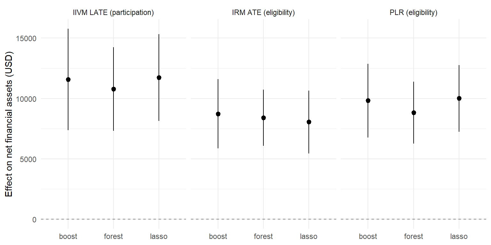
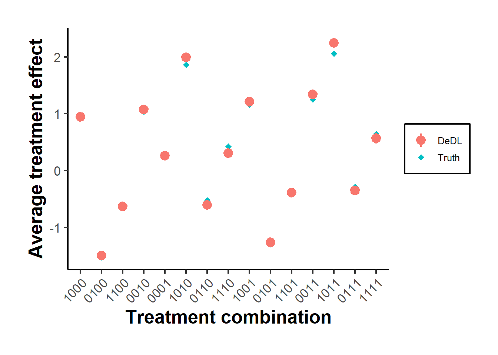
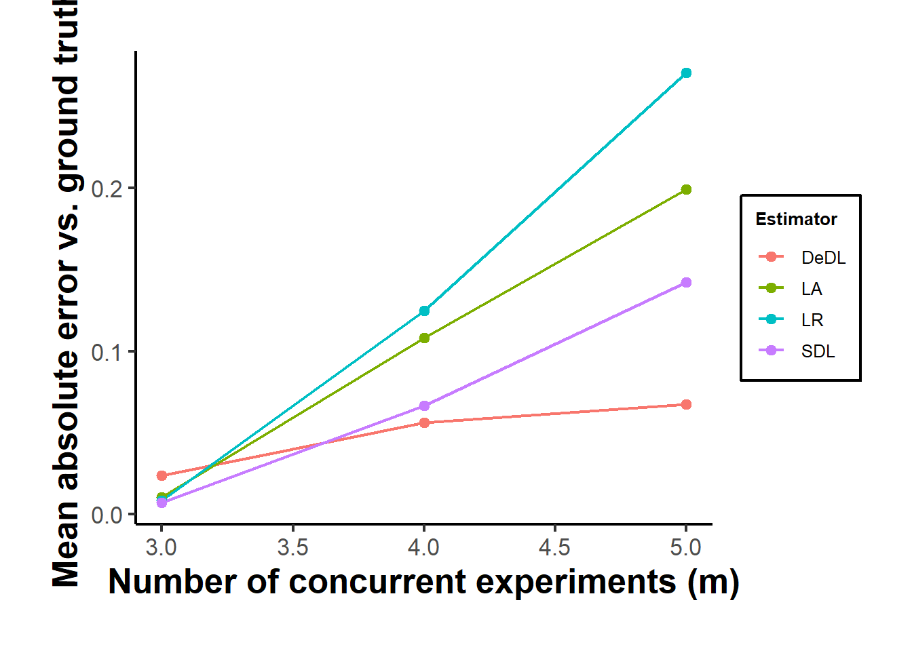
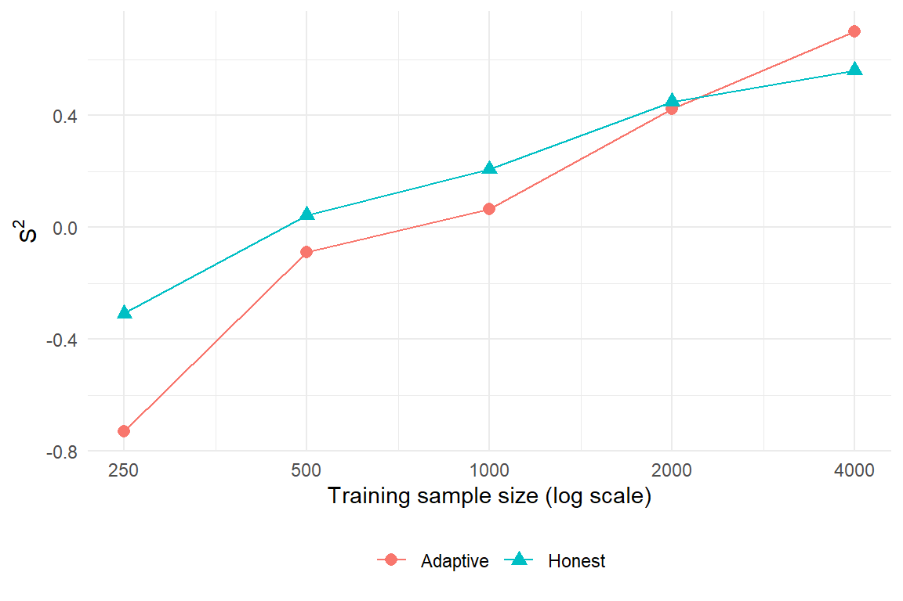
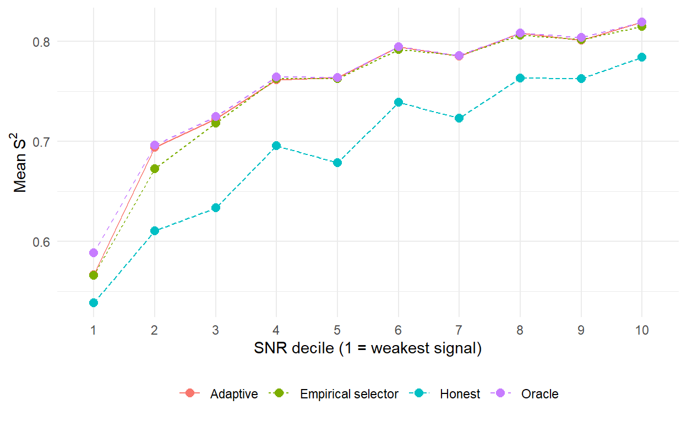
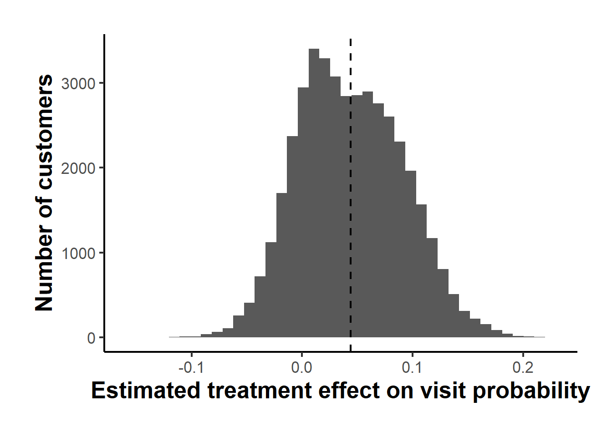
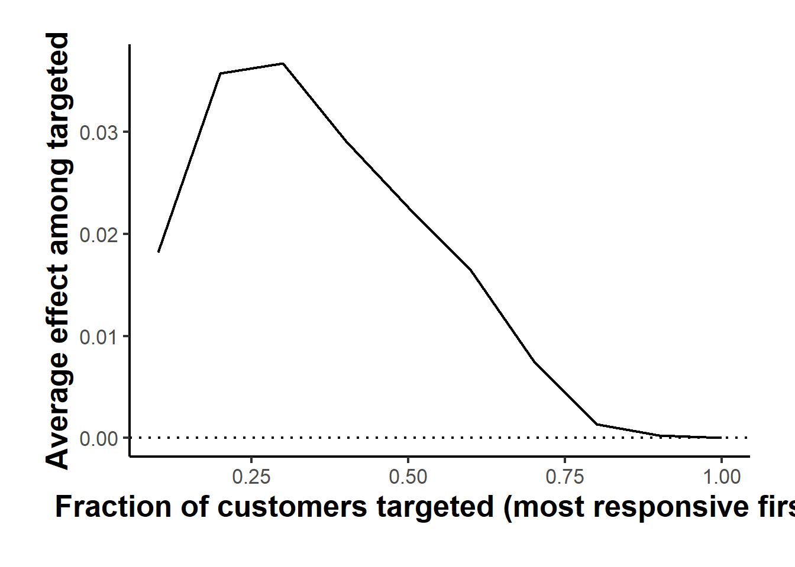

45 Machine Learning for Causal Inference
Causal inference from observational data requires us to adjust for confounding variables that jointly influence the treatment and the outcome. The classical toolkit, built around linear regression, propensity score weighting, and parametric matching, assumes that the analyst can write down a correctly specified model for either the outcome surface or the treatment assignment mechanism. When the number of covariates is large, when their functional relationship to the outcome is unknown, or when treatment effects vary in complex ways across the population, these parametric assumptions become fragile. Machine learning offers flexible, data-adaptive estimators for exactly these high-dimensional nuisance functions. The central intellectual contribution of the modern literature is showing how to combine flexible prediction with the structure of semiparametric theory so that causal estimates retain valid confidence intervals despite being built on top of black-box learners.
This chapter develops that synthesis. We begin with the reason naive plug-in machine learning fails for causal questions, namely the regularization bias problem. We then build up the machinery that solves it: Neyman-orthogonal scores, cross-fitting, and the double or debiased machine learning framework of Chernozhukov, Chetverikov, et al. (2018). We connect this to the older doubly robust tradition of augmented inverse probability weighting and targeted maximum likelihood estimation, and to ensemble learning through the SuperLearner. We then take the orthogonality machinery to platform scale with the debiased deep learning framework for large-scale combinatorial experiments, where the treatment is itself a combination of many concurrent A/B tests and a structured deep network with an influence-function correction recovers the effect of combinations that were never run. We then turn to heterogeneity, where causal forests and generalized random forests recover how effects vary across individuals, and where meta-learners offer a complementary modular approach. Finally we describe a time-aware extension, temporal causal forests, and close with practical guidance and pitfalls.
45.1 Why Machine Learning for Causal Inference
45.1.1 High-Dimensional Confounding
Selection-on-observables identification rests on the assumption of unconfoundedness, that conditional on a covariate vector \(X\) the treatment \(W\) is as good as randomly assigned. The credibility of this assumption grows with the richness of \(X\). A study that conditions on only a handful of covariates invites the criticism that some omitted variable still confounds the comparison. Including hundreds or thousands of covariates, their interactions, and flexible transformations strengthens the identifying assumption, but it overwhelms classical parametric estimators. Ordinary least squares with more covariates than observations is not even defined, and even when \(p < n\) the variance explodes as \(p\) approaches \(n\).
Machine learning methods such as the Lasso, random forests, gradient boosting, and neural networks were designed precisely to predict well in high dimensions by trading a small amount of bias for a large reduction in variance. The temptation is therefore to estimate the outcome regression or the propensity score with one of these learners and to plug the result into a standard causal estimator. As the next subsection shows, doing this naively destroys the statistical guarantees we rely on for inference.
45.1.2 The Regularization Bias Problem
Consider the partially linear model \[ Y = \theta_0 W + g_0(X) + \varepsilon, \qquad \mathbb{E}[\varepsilon \mid X, W] = 0, \] where \(\theta_0\) is the causal parameter of interest and \(g_0\) is an unknown, potentially complicated function of the confounders. A direct strategy is to estimate \(g_0\) with a machine learning method \(\hat{g}\) and then regress the residual \(Y - \hat{g}(X)\) on \(W\). Suppose for concreteness that we estimate \(\theta_0\) by \[ \hat{\theta} = \left(\frac{1}{n}\sum_i W_i^2\right)^{-1} \frac{1}{n}\sum_i W_i \bigl(Y_i - \hat{g}(X_i)\bigr). \] Decomposing the scaled error reveals two terms, \[ \sqrt{n}(\hat{\theta} - \theta_0) = \underbrace{a}_{\text{well behaved}} + \underbrace{b}_{\text{regularization bias}}, \] where the second term involves \(\frac{1}{\sqrt{n}}\sum_i W_i \bigl(g_0(X_i) - \hat{g}(X_i)\bigr)\). Because every machine learning estimator regularizes, shrinking coefficients or limiting tree depth to control variance, the error \(g_0 - \hat{g}\) converges to zero more slowly than the parametric rate \(n^{-1/2}\). The bias term \(b\) therefore diverges, and \(\hat{\theta}\) is not even consistent at the rate needed for valid confidence intervals. This is the regularization bias, sometimes called the plug-in or first-order bias. It is not a small-sample nuisance; it is a structural consequence of using a biased, slowly converging nuisance estimator inside a causal functional that is sensitive to errors in that nuisance.
Two ideas rescue us. The first is to construct the estimating equation so that it is insensitive, to first order, to errors in the nuisance functions. This is Neyman orthogonality. The second is to estimate the nuisance functions on data separate from the data used to form the final estimate, breaking the dependence that would otherwise reintroduce bias. This is cross-fitting. Together they are the heart of double machine learning.
45.2 Double and Debiased Machine Learning
The double or debiased machine learning (DML) framework of Chernozhukov, Chetverikov, et al. (2018), published in The Econometrics Journal, provides a general recipe for estimating a low-dimensional causal parameter in the presence of high-dimensional nuisance functions estimated by arbitrary machine learning methods. It rests on two pillars, Neyman-orthogonal scores and cross-fitting, and it delivers estimators that are root-\(n\) consistent and asymptotically normal even though the first-stage learners converge slowly and are biased by regularization. This section develops the framework in full: the orthogonality condition and a complete derivation of why the canonical scores satisfy it, the two cross-fitting algorithms and their asymptotic theory, the four workhorse models of the paper, and then two replications on the paper’s own empirical applications, the effect of 401(k) eligibility on household financial assets and the effect of institutions on economic growth. Throughout we use the DoubleML package (Bach et al. 2024), the object-oriented R implementation maintained by the paper’s authors and collaborators, with learners drawn from the mlr3 ecosystem.
45.2.1 Neyman-Orthogonal Scores
Suppose the target parameter \(\theta_0\) solves a moment condition \(\mathbb{E}[\psi(Z; \theta_0, \eta_0)] = 0\), where \(Z\) collects the observed data, \(\psi\) is a known score function, and \(\eta_0\) denotes the nuisance functions. The score is Neyman orthogonal if its expectation has a vanishing derivative with respect to the nuisance at the truth, \[ \partial_\eta \, \mathbb{E}\bigl[\psi(Z; \theta_0, \eta)\bigr]\Big|_{\eta = \eta_0} = 0. \] Orthogonality means that small errors in \(\hat{\eta}\) have only a second-order effect on the moment condition. Because machine learning errors are slow but not pathological, second-order terms of the form \(\|\hat{\eta} - \eta_0\|^2\) vanish faster than \(n^{-1/2}\) provided each nuisance is estimated at a rate faster than \(n^{-1/4}\), a rate that flexible learners can attain. The first-order regularization bias is thus eliminated by construction.
For the partially linear model, the naive score \(\psi^{\text{naive}}(Z; \theta, g) = W\,(Y - \theta W - g(X))\) is not orthogonal because it is sensitive to errors in \(g\) through its correlation with \(W\). The orthogonal score partials out the confounders from the treatment as well. Define the two conditional means \[ \ell_0(X) = \mathbb{E}[Y \mid X] = \theta_0\, m_0(X) + g_0(X), \qquad m_0(X) = \mathbb{E}[W \mid X], \] and the Robinson-style partialling-out score \[ \psi(Z; \theta, \eta) = \bigl(Y - \ell(X) - \theta\,(W - m(X))\bigr)\,\bigl(W - m(X)\bigr), \] with nuisance \(\eta = (\ell, m)\). This is the estimator that underlies the classic semiparametric partially linear regression of Robinson (1988), now with machine learning for both nuisance functions. Intuitively, we residualize \(Y\) on \(X\) and \(W\) on \(X\) using flexible learners, then regress the \(Y\)-residual on the \(W\)-residual. The mutual residualization is what makes the score robust to errors in either nuisance.
45.2.1.1 Verifying Orthogonality: A Derivation
The orthogonality claims can be checked directly, and doing so once makes the whole framework transparent. Write \(V = W - m_0(X)\) for the treatment residual and \(\varepsilon = Y - \theta_0 W - g_0(X)\) for the structural error, so that \(\mathbb{E}[\varepsilon \mid X, W] = 0\) and \(\mathbb{E}[V \mid X] = 0\) by construction. Note first that at the true nuisance values the partialling-out residual reduces to the structural error, \[ Y - \ell_0(X) - \theta_0\,(W - m_0(X)) = \theta_0 W + g_0(X) + \varepsilon - \theta_0 m_0(X) - g_0(X) - \theta_0 W + \theta_0 m_0(X) = \varepsilon, \] so the moment condition \(\mathbb{E}[\psi(Z; \theta_0, \eta_0)] = \mathbb{E}[\varepsilon V] = 0\) holds.
To check orthogonality, perturb each nuisance in an arbitrary direction and differentiate. For the outcome regression, replace \(\ell_0\) by \(\ell_0 + r \Delta_\ell\) for a scalar \(r\) and any function \(\Delta_\ell(X)\), and evaluate the derivative of the moment at \(r = 0\): \[ \frac{\partial}{\partial r}\, \mathbb{E}\Bigl[\bigl(Y - \ell_0(X) - r \Delta_\ell(X) - \theta_0 V\bigr) V\Bigr]\Big|_{r=0} = -\,\mathbb{E}\bigl[\Delta_\ell(X)\, V\bigr] = -\,\mathbb{E}\bigl[\Delta_\ell(X)\, \underbrace{\mathbb{E}[V \mid X]}_{=\,0}\bigr] = 0. \] For the propensity, replace \(m_0\) by \(m_0 + r \Delta_m\), which perturbs both appearances of \(m\) in the score: \[ \frac{\partial}{\partial r}\, \mathbb{E}\Bigl[\bigl(\varepsilon + r\,\theta_0 \Delta_m(X)\bigr)\bigl(V - r \Delta_m(X)\bigr)\Bigr]\Big|_{r=0} = \theta_0\, \mathbb{E}\bigl[\Delta_m(X)\, V\bigr] - \mathbb{E}\bigl[\varepsilon\, \Delta_m(X)\bigr] = 0, \] where the first term vanishes because \(\mathbb{E}[V \mid X] = 0\) and the second because \(\mathbb{E}[\varepsilon \mid X] = 0\). Both derivatives are exactly zero, so first-order errors in either learner do not move the moment condition. Contrast the naive score: perturbing \(g\) gives \[ \frac{\partial}{\partial r}\, \mathbb{E}\Bigl[W\bigl(Y - \theta_0 W - g_0(X) - r \Delta_g(X)\bigr)\Bigr]\Big|_{r=0} = -\,\mathbb{E}\bigl[W \Delta_g(X)\bigr] = -\,\mathbb{E}\bigl[m_0(X)\, \Delta_g(X)\bigr], \] which is nonzero whenever the treatment is correlated with the confounders, precisely the situation that makes causal inference hard. The regularization bias of the naive plug-in is this nonzero derivative multiplied by the slowly vanishing learner error, inflated by the \(\sqrt{n}\) scaling. Orthogonalization removes the term entirely rather than hoping the learner error is small.
The same calculation explains the second-order remainder. A Taylor expansion of the moment in the nuisances has no linear term, so the leading remainder is quadratic, of order \(\|\hat{\ell} - \ell_0\|\,\|\hat{m} - m_0\|\). This product structure is what the formal theory exploits: it suffices that the product of the two nuisance errors vanish faster than \(n^{-1/2}\), for instance because each is \(o(n^{-1/4})\), a rate attainable by lasso, random forests, boosting, and neural networks under structured sparsity or smoothness conditions. One learner may even converge more slowly if the other compensates, a trade-off familiar from the doubly robust literature discussed below.
45.2.2 Cross-Fitting and the Two DML Algorithms
Even with an orthogonal score, reusing the same observations to estimate the nuisance functions and to evaluate the moment condition introduces an overfitting bias and requires strong empirical-process (Donsker) conditions on the learner, conditions that highly flexible modern learners violate. Cross-fitting removes this by sample splitting. Partition the observation indices \(\{1, \dots, N\}\) into \(K\) folds \(I_1, \dots, I_K\) of roughly equal size, and for each fold \(k\) let \(\hat{\eta}_k\) denote the nuisance estimates computed on the complement \(I_k^c\), that is, on all data outside fold \(k\). Each observation’s score is then evaluated with nuisance functions that never saw that observation, which breaks the dependence driving the overfitting bias, while rotating through all \(K\) folds ensures every observation contributes to the final estimate, so no efficiency is lost. Cross-fitting allows the use of essentially any learner without complexity restrictions, which is what makes the framework practical.
Chernozhukov, Chetverikov, et al. (2018) define two ways to combine the folds. The DML1 estimator solves the moment condition separately within each fold and averages the solutions, \[ \check{\theta}_k \; \text{solves} \;\; \frac{1}{|I_k|} \sum_{i \in I_k} \psi\bigl(Z_i; \check{\theta}_k, \hat{\eta}_k\bigr) = 0, \qquad \hat{\theta}_{\text{DML1}} = \frac{1}{K} \sum_{k=1}^{K} \check{\theta}_k. \] The DML2 estimator pools the folds into a single estimating equation, \[ \frac{1}{N} \sum_{k=1}^{K} \sum_{i \in I_k} \psi\bigl(Z_i; \hat{\theta}_{\text{DML2}}, \hat{\eta}_k\bigr) = 0. \] The two are first-order equivalent, but DML2 is generally preferred and is the default in software: pooling stabilizes the estimating equation in small samples and avoids folds where the within-fold equation is ill-conditioned. For the linear scores used throughout this chapter, which take the form \(\psi(Z; \theta, \eta) = \psi^a(Z; \eta)\,\theta + \psi^b(Z; \eta)\), DML2 has the closed form \[ \hat{\theta} = -\Biggl(\frac{1}{N} \sum_{k}\sum_{i \in I_k} \psi^a\bigl(Z_i; \hat{\eta}_k\bigr)\Biggr)^{-1} \frac{1}{N} \sum_{k}\sum_{i \in I_k} \psi^b\bigl(Z_i; \hat{\eta}_k\bigr). \] The number of folds \(K\) is not a tuning parameter in the usual sense; theory holds for any fixed \(K \ge 2\), and \(K = 5\) is the practical default, with \(K = 10\) sometimes preferred in moderate samples because each nuisance fit then uses more data. The replication below varies \(K\) as a robustness check.
45.2.3 Asymptotic Normality and Valid Confidence Intervals
The main inferential result of Chernozhukov, Chetverikov, et al. (2018) states that under Neyman orthogonality, the product-rate condition on the nuisance errors described above, and mild regularity conditions, the cross-fitted estimator satisfies \[ \sqrt{N}\,\bigl(\hat{\theta} - \theta_0\bigr) \;\xrightarrow{d}\; \mathcal{N}\bigl(0, \sigma^2\bigr), \qquad \sigma^2 = J_0^{-2}\; \mathbb{E}\bigl[\psi\bigl(Z; \theta_0, \eta_0\bigr)^2\bigr], \qquad J_0 = \mathbb{E}\bigl[\psi^a\bigl(Z; \eta_0\bigr)\bigr], \] and the variance is consistently estimated by the plug-in \[ \hat{\sigma}^2 = \hat{J}^{-2}\, \frac{1}{N} \sum_{k}\sum_{i \in I_k} \psi\bigl(Z_i; \hat{\theta}, \hat{\eta}_k\bigr)^2, \qquad \hat{J} = \frac{1}{N} \sum_{k}\sum_{i \in I_k} \psi^a\bigl(Z_i; \hat{\eta}_k\bigr). \] Ordinary Wald confidence intervals \(\hat{\theta} \pm z_{1-\alpha/2}\, \hat{\sigma} / \sqrt{N}\) are therefore valid despite the black-box first stage. Importantly, the result is uniform over large classes of data-generating processes: it does not rely on the perfect model selection that invalidates naive post-selection inference, a failure documented in the post-double-selection literature (Belloni et al. 2014b) that this framework generalizes.
One practical wrinkle remains. The estimate depends on the random fold partition, and two analysts using different seeds will report slightly different numbers. Chernozhukov, Chetverikov, et al. (2018) recommend repeating the entire cross-fitting procedure \(S\) times over independent partitions and reporting the median estimate \(\hat{\theta} = \operatorname{median}_s\, \hat{\theta}^{(s)}\) together with the split-adjusted variance
\[
\hat{\sigma}^2 = \operatorname{median}_s \Bigl\{ \hat{\sigma}^2_{(s)} + \bigl(\hat{\theta}^{(s)} - \hat{\theta}\bigr)^2 \Bigr\},
\]
which charges the reported uncertainty for the variability induced by the sample splitting itself. This is the n_rep argument in DoubleML, exercised in the robustness analysis below.
45.2.4 The Four Canonical Models
Chernozhukov, Chetverikov, et al. (2018) work out the framework for four workhorse specifications that between them cover most applied selection-on-observables and instrumental-variables problems. Each is defined by an estimand, a set of nuisance functions, and a Neyman-orthogonal score.
The partially linear regression (PLR) model is the specification developed above. It imposes a constant treatment effect \(\theta_0\) but leaves the confounding function unrestricted, and its orthogonal score is the partialling-out score already derived, with nuisances \(\ell_0(X) = \mathbb{E}[Y \mid X]\) and \(m_0(X) = \mathbb{E}[W \mid X]\).
The partially linear instrumental variable (PLIV) model handles the case where the treatment \(D\) is endogenous even conditional on \(X\), but an instrument \(Z\) is available that is relevant and excluded conditional on \(X\): \[ Y = \theta_0 D + g_0(X) + \zeta, \qquad \mathbb{E}[\zeta \mid X, Z] = 0. \] The orthogonal score residualizes all three observables on the confounders, \[ \psi(Z; \theta, \eta) = \bigl(Y - \ell(X) - \theta\,(D - r(X))\bigr)\,\bigl(Z - m(X)\bigr), \] with nuisances \(\ell_0(X) = \mathbb{E}[Y \mid X]\), \(r_0(X) = \mathbb{E}[D \mid X]\), and \(m_0(X) = \mathbb{E}[Z \mid X]\). This is exactly the logic of two-stage least squares after flexibly partialling out the controls, and it reduces to the classical IV estimator when the nuisances are estimated by linear regression. The orthogonality verification mirrors the PLR derivation, using \(\mathbb{E}[Z - m_0(X) \mid X] = 0\) in place of the treatment residual.
The interactive regression model (IRM) drops the constant-effect restriction for a binary treatment and targets the average treatment effect \[ \theta_0 = \mathbb{E}\bigl[\mu_0(1, X) - \mu_0(0, X)\bigr], \] where \(\mu_0(w, x) = \mathbb{E}[Y \mid W = w, X = x]\). Its orthogonal score is the augmented inverse probability weighting (AIPW) score \[ \psi(Z; \theta, \eta) = \mu(1, X) - \mu(0, X) + \frac{W\,\bigl(Y - \mu(1, X)\bigr)}{e(X)} - \frac{(1 - W)\,\bigl(Y - \mu(0, X)\bigr)}{1 - e(X)} - \theta, \] with the outcome regressions and the propensity score \(e_0(X) = \mathbb{P}(W = 1 \mid X)\) as nuisances. This score is the efficient influence function for the ATE, and the next section develops its doubly robust interpretation in detail. Double machine learning for the interactive model is AIPW with cross-fitted, machine-learned nuisances. In practice the propensity denominators require trimming, and the replication below trims estimated propensities at 0.01.
The interactive instrumental variable model (IIVM) combines heterogeneity and endogeneity for a binary treatment \(D\) and binary instrument \(Z\), targeting the local average treatment effect (LATE) of Imbens and Angrist (1994), the effect among compliers. Its orthogonal score is a ratio of two AIPW-type constructions, one for the outcome and one for the treatment, \[ \psi(Z; \theta, \eta) = \mu(1, X) - \mu(0, X) + \frac{Z\,\bigl(Y - \mu(1, X)\bigr)}{\pi(X)} - \frac{(1 - Z)\,\bigl(Y - \mu(0, X)\bigr)}{1 - \pi(X)} - \theta \Biggl[ r(1, X) - r(0, X) + \frac{Z\,\bigl(D - r(1, X)\bigr)}{\pi(X)} - \frac{(1 - Z)\,\bigl(D - r(0, X)\bigr)}{1 - \pi(X)} \Biggr], \] where \(\mu_0(z, x) = \mathbb{E}[Y \mid Z = z, X = x]\), \(r_0(z, x) = \mathbb{E}[D \mid Z = z, X = x]\), and \(\pi_0(x) = \mathbb{P}(Z = 1 \mid X = x)\). The numerator part is the intent-to-treat effect of the instrument on the outcome and the bracketed part is its effect on takeup, so the estimator is a doubly robust, machine-learned Wald ratio.
| Model | Estimand | Endogeneity | Nuisance functions |
|---|---|---|---|
| PLR | Constant effect \(\theta_0\) | None given \(X\) | \(\mathbb{E}[Y \mid X]\), \(\mathbb{E}[W \mid X]\) |
| PLIV | Constant effect \(\theta_0\) | Instrument \(Z\) | \(\mathbb{E}[Y \mid X]\), \(\mathbb{E}[D \mid X]\), \(\mathbb{E}[Z \mid X]\) |
| IRM | ATE (or ATT) | None given \(X\) | \(\mathbb{E}[Y \mid W, X]\), \(\mathbb{P}(W = 1 \mid X)\) |
| IIVM | LATE | Instrument \(Z\) | \(\mathbb{E}[Y \mid Z, X]\), \(\mathbb{E}[D \mid Z, X]\), \(\mathbb{P}(Z = 1 \mid X)\) |
The framework has an important precursor in the post-double-selection estimator of Belloni et al. (2014b). There the nuisances are estimated by lasso regressions of \(Y\) on \(X\) and of \(W\) on \(X\), the union of the selected controls is taken, and \(\theta_0\) is estimated by ordinary least squares of \(Y\) on \(W\) and the selected union. Selecting controls relevant to either equation is precisely what makes the procedure immune to the model-selection mistakes that break single-selection inference, and it is the special case of the PLR score with lasso nuisances. Double machine learning generalizes the insight from lasso to arbitrary learners and from the partially linear model to any orthogonal moment problem. The hdm package implements post-double-selection directly, and the 401(k) replication below uses it as a cross-check on the DML estimates.
45.2.5 A Runnable Partially Linear Example
The following simulation illustrates the orthogonalization and cross-fitting logic from scratch, using the built-in random forest only through base R so that it runs in a clean session. We generate data from a partially linear model with a nonlinear confounding surface, then compare the naive plug-in estimator with the cross-fitted orthogonal estimator.
set.seed(123)
n <- 2000
p <- 10
X <- matrix(runif(n * p), n, p)
# Nonlinear confounding for both treatment and outcome
g0 <- function(X) sin(2 * pi * X[, 1]) + X[, 2]^2 + 0.5 * X[, 3]
m0 <- function(X) plogis(1.5 * X[, 1] - X[, 2])
theta_true <- 1.0
W <- m0(X) + rnorm(n, sd = 0.3) # continuous treatment
Y <- theta_true * W + g0(X) + rnorm(n, sd = 1)
dat <- data.frame(Y = Y, W = W, X)
# Naive plug-in: estimate g on full data, regress residual on W
naive_fit <- lm(Y ~ poly(X1, 3) + poly(X2, 3) + X3, data = dat)
resid_Y <- dat$Y - predict(naive_fit)
theta_naive <- coef(lm(resid_Y ~ dat$W - 1))
# Cross-fitted orthogonal (partialling-out) estimator
K <- 5
folds <- sample(rep(1:K, length.out = n))
vY <- numeric(n); vW <- numeric(n)
for (k in 1:K) {
tr <- folds != k
te <- folds == k
gY <- lm(Y ~ poly(X1, 3) + poly(X2, 3) + X3, data = dat[tr, ])
gW <- lm(W ~ poly(X1, 3) + poly(X2, 3) + X3, data = dat[tr, ])
vY[te] <- dat$Y[te] - predict(gY, newdata = dat[te, ])
vW[te] <- dat$W[te] - predict(gW, newdata = dat[te, ])
}
theta_dml <- sum(vW * vY) / sum(vW * vW)
c(naive = theta_naive, dml = theta_dml, truth = theta_true)
#> naive.dat$W dml truth
#> 0.2112158 1.0079888 1.0000000The orthogonal, cross-fitted estimate sits close to the true value of one, while the naive plug-in is biased because it fails to residualize the treatment. With genuine machine learning learners in place of the polynomial regressions, the same logic delivers valid inference in far higher dimensions. The DoubleML package (Bach et al. 2024) implements this machinery for any learner in the mlr3 ecosystem. Rerunning the same problem with random forest nuisances reproduces the from-scratch estimate and adds the score-based standard error from the asymptotic theory above.
library(DoubleML)
library(mlr3)
library(mlr3learners)
lgr::get_logger("mlr3")$set_threshold("warn")
set.seed(123)
dml_data <- DoubleMLData$new(
dat,
y_col = "Y",
d_cols = "W",
x_cols = paste0("X", 1:p)
)
learner <- lrn("regr.ranger", num.trees = 200, min.node.size = 20)
dml_plr <- DoubleMLPLR$new(
dml_data,
ml_l = learner$clone(),
ml_m = learner$clone(),
n_folds = 5
)
dml_plr$fit()
dml_plr$summary()
#> Estimates and significance testing of the effect of target variables
#> Estimate. Std. Error t value Pr(>|t|)
#> W 0.98981 0.07542 13.12 <2e-16 ***
#> ---
#> Signif. codes: 0 '***' 0.001 '**' 0.01 '*' 0.05 '.' 0.1 ' ' 1The point estimate agrees with the hand-rolled cross-fitting loop, and the reported standard error is the plug-in estimator \(\hat{\sigma}/\sqrt{N}\) from the asymptotic normality result, so the printed confidence interval is the honest Wald interval that the theory licenses.
45.2.6 Replication: 401(k) Eligibility and Household Financial Assets
The flagship empirical application of Chernozhukov, Chetverikov, et al. (2018) asks what effect eligibility for a 401(k) pension plan has on a household’s net financial assets, using data on 9,915 households from the 1991 Survey of Income and Program Participation. The question, whether 401(k) saving crowds out other saving or represents new wealth accumulation, is a classic in public economics (Poterba et al. 1995). The identification argument is that eligibility is determined by employers, so once we condition on the job and income characteristics that drive both employer plan offerings and saving behavior, eligibility is plausibly unconfounded, even though actual participation is a household choice and clearly endogenous. The covariates are age, income, education, family size, marital status, two-earner status, defined-benefit pension coverage, IRA participation, and homeownership. Income enters saving behavior nonlinearly, which is exactly why flexible nuisance estimation matters here: the sample includes households with net financial assets ranging from heavy debt to more than half a million dollars, and misspecifying the income-assets relationship contaminates a parametric estimate.
The same data support all three selection-on-observables and instrumental-variables estimands from the model taxonomy above. The PLR and IRM models estimate the effect of eligibility itself, an intention-to-treat quantity. The IIVM model estimates the LATE of actual participation, instrumented by eligibility. The instrument is relevant because eligibility is a precondition for participation, satisfies monotonicity trivially for the same reason (there are no always-takers, since nobody can participate without being eligible), and inherits its conditional exogeneity from the eligibility argument. We tell DoubleML about the absent always-takers through the subgroups argument, which fixes the takeup regression at zero in the uninstrumented arm rather than asking a classifier to fit a degenerate outcome.
The dataset ships with the hdm package (Chernozhukov et al. 2016), so the analysis is fully reproducible offline. Following the paper, we give the lasso a flexible dictionary of transformed controls, quadratics in the continuous variables plus income interactions, while the tree-based learners receive the raw covariates and are left to find the nonlinearities themselves.
library(DoubleML)
library(mlr3)
library(mlr3learners)
library(data.table)
library(hdm)
lgr::get_logger("mlr3")$set_threshold("warn")
data(pension, package = "hdm")
pen <- data.table(pension)
# Raw controls for the tree-based learners
xs <- c("age", "inc", "educ", "fsize", "marr", "twoearn", "db", "pira", "hown")
# Flexible dictionary for the lasso: quadratics in the continuous controls,
# main effects for the indicators, income interactions with the indicators
flex <- model.matrix(
~ 0 + poly(age, 2, raw = TRUE) + poly(inc, 2, raw = TRUE) +
poly(educ, 2, raw = TRUE) + poly(fsize, 2, raw = TRUE) +
marr + twoearn + db + pira + hown +
inc:(marr + twoearn + db + pira + hown),
data = pen
)
colnames(flex) <- paste0("x", seq_len(ncol(flex)))
pen_flex <- data.table(net_tfa = pen$net_tfa, e401 = pen$e401,
p401 = pen$p401, flex)
c(households = nrow(pen), eligible = sum(pen$e401),
participants = sum(pen$p401))
#> households eligible participants
#> 9915 3682 2594About 37 percent of households are eligible and 26 percent participate, and participation implies eligibility, the no-always-takers structure noted above. We now run the full grid: three estimands (PLR, IRM ATE, IIVM LATE) by three learners (lasso, random forest, gradient boosting), each with five-fold cross-fitting and propensity trimming at 0.01.
fit_401k <- function(kind) {
if (kind == "lasso") {
reg <- lrn("regr.cv_glmnet", s = "lambda.min")
cls <- lrn("classif.cv_glmnet", s = "lambda.min")
xcols <- colnames(flex); dat_use <- pen_flex
} else if (kind == "forest") {
reg <- lrn("regr.ranger", num.trees = 200, min.node.size = 20)
cls <- lrn("classif.ranger", num.trees = 200, min.node.size = 20)
xcols <- xs; dat_use <- pen[, c("net_tfa", "e401", "p401", xs), with = FALSE]
} else {
reg <- lrn("regr.xgboost", nrounds = 150, eta = 0.1, max_depth = 4,
objective = "reg:squarederror", verbose = 0)
cls <- lrn("classif.xgboost", nrounds = 150, eta = 0.1, max_depth = 4,
objective = "binary:logistic", verbose = 0)
xcols <- xs; dat_use <- pen[, c("net_tfa", "e401", "p401", xs), with = FALSE]
}
d_elig <- DoubleMLData$new(dat_use[, c("net_tfa", "e401", xcols), with = FALSE],
y_col = "net_tfa", d_cols = "e401", x_cols = xcols)
plr <- DoubleMLPLR$new(d_elig, ml_l = reg$clone(), ml_m = reg$clone(),
n_folds = 5)
plr$fit()
irm <- DoubleMLIRM$new(d_elig, ml_g = reg$clone(), ml_m = cls$clone(),
n_folds = 5, trimming_threshold = 0.01)
irm$fit()
d_late <- DoubleMLData$new(dat_use, y_col = "net_tfa", d_cols = "p401",
z_cols = "e401", x_cols = xcols)
iiv <- DoubleMLIIVM$new(d_late, ml_g = reg$clone(), ml_m = cls$clone(),
ml_r = cls$clone(), n_folds = 5,
trimming_threshold = 0.01,
subgroups = list(always_takers = FALSE,
never_takers = TRUE))
iiv$fit()
data.table(
learner = kind,
model = c("PLR (eligibility)", "IRM ATE (eligibility)",
"IIVM LATE (participation)"),
estimate = c(plr$coef, irm$coef, iiv$coef),
se = c(plr$se, irm$se, iiv$se)
)
}
set.seed(3141)
res_401k <- rbindlist(lapply(c("lasso", "forest", "boost"), fit_401k))
res_401k[, `:=`(lower = estimate - 1.96 * se, upper = estimate + 1.96 * se)]| Model | Learner | Estimate | SE | Lower | Upper |
|---|---|---|---|---|---|
| IIVM LATE (participation) | boost | 11,577 | 2,140 | 7,384 | 15,771 |
| IIVM LATE (participation) | forest | 10,782 | 1,764 | 7,324 | 14,239 |
| IIVM LATE (participation) | lasso | 11,724 | 1,834 | 8,130 | 15,319 |
| IRM ATE (eligibility) | boost | 8,729 | 1,465 | 5,859 | 11,600 |
| IRM ATE (eligibility) | forest | 8,405 | 1,189 | 6,074 | 10,736 |
| IRM ATE (eligibility) | lasso | 8,053 | 1,325 | 5,456 | 10,650 |
| PLR (eligibility) | boost | 9,819 | 1,553 | 6,776 | 12,862 |
| PLR (eligibility) | forest | 8,833 | 1,309 | 6,266 | 11,399 |
| PLR (eligibility) | lasso | 10,007 | 1,414 | 7,236 | 12,777 |

Figure 45.1: Estimates and 95 percent confidence intervals for the three 401(k) estimands across nuisance learners. The estimates are stable across learners within each estimand, the pattern the orthogonality theory predicts.
Table 45.2 collects the estimates and Figure 45.1 plots them against zero. Three findings line up with the published results. First, eligibility raises net financial assets by roughly nine thousand dollars on the partially linear specification and about eight thousand dollars on the interactive (ATE) specification, and the gap between the two is informative: the IRM model reweights toward the covariate distribution of the whole population, so the difference reflects effect heterogeneity that the constant-effect PLR model averages differently. Second, the LATE of actual participation is larger, on the order of eleven to twelve thousand dollars, which is mechanical once one recalls that only about seven in ten eligible households participate: diluting the participation effect over all eligibles yields the intention-to-treat magnitude. Third, and most important for the methodological message, the estimates are stable across the three very different learners within each estimand. Orthogonality plus cross-fitting makes the causal estimate insensitive to the details of the first stage, which is visible here as the flat profile within each panel of the figure.
As a cross-check, the post-double-selection estimator of Belloni et al. (2014b), the lasso-specific precursor to double machine learning, gives a same-ballpark answer on the identical flexible dictionary.
set.seed(3141)
pds <- rlassoEffect(x = flex, y = pen$net_tfa, d = pen$e401,
method = "double selection")
summary(pds)
#> [1] "Estimates and significance testing of the effect of target variables"
#> Estimate. Std. Error t value Pr(>|t|)
#> d1 6979 1415 4.931 8.18e-07 ***
#> ---
#> Signif. codes: 0 '***' 0.001 '**' 0.01 '*' 0.05 '.' 0.1 ' ' 1The point estimate sits somewhat below the tree-based DML estimates, a reminder that with a fixed dictionary the lasso can only capture the nonlinearities the analyst wrote into it, while forests and boosting adapt their functional form to the data.
45.2.7 Replication: Institutions and Growth with Partially Linear IV
The second empirical application in Chernozhukov, Chetverikov, et al. (2018) revisits the institutions-and-growth question of Acemoglu et al. (2001) with the PLIV model. The outcome is log GDP per capita in 1995 across 64 former colonies, the endogenous treatment is a measure of protection against expropriation risk, and the instrument is the log of early European settler mortality: where settlers faced deadly disease environments, colonial powers built extractive institutions rather than settler institutions, and those institutional differences persisted. The exclusion restriction requires that settler mortality affect modern output only through institutions, conditional on geography. That conditionality is where machine learning earns its place: rather than betting on a particular parametric form for latitude and continent effects, the PLIV model partials all three variables, outcome, treatment, and instrument, on a flexible function of the geographic controls.
data(AJR, package = "hdm")
ajr <- data.table(AJR)[, .(GDP, Exprop, logMort, Latitude, Latitude2,
Africa, Asia, Namer, Samer)]
d_ajr <- DoubleMLData$new(
ajr, y_col = "GDP", d_cols = "Exprop", z_cols = "logMort",
x_cols = c("Latitude", "Latitude2", "Africa", "Asia", "Namer", "Samer")
)
set.seed(42)
pliv_lasso <- DoubleMLPLIV$new(
d_ajr,
ml_l = lrn("regr.cv_glmnet", s = "lambda.min"),
ml_m = lrn("regr.cv_glmnet", s = "lambda.min"),
ml_r = lrn("regr.cv_glmnet", s = "lambda.min"),
n_folds = 5
)
pliv_lasso$fit()
set.seed(42)
pliv_forest <- DoubleMLPLIV$new(
d_ajr,
ml_l = lrn("regr.ranger", num.trees = 500, min.node.size = 5),
ml_m = lrn("regr.ranger", num.trees = 500, min.node.size = 5),
ml_r = lrn("regr.ranger", num.trees = 500, min.node.size = 5),
n_folds = 5
)
pliv_forest$fit()
rbind(
data.frame(learner = "lasso", estimate = pliv_lasso$coef, se = pliv_lasso$se),
data.frame(learner = "forest", estimate = pliv_forest$coef, se = pliv_forest$se)
)
#> learner estimate se
#> Exprop lasso 0.8872468 0.2396606
#> Exprop1 forest 0.9944699 0.3906057Both learners put the effect of institutions on log output near one, close to the two-stage least squares estimates in Acemoglu et al. (2001), with confidence intervals that comfortably exclude zero. Two cautions are in order. With 64 observations the machine learning is doing modest work, and the exercise is best read as a demonstration that the framework nests and reproduces a canonical IV study rather than as an improvement on it. And the small sample makes the estimate more sensitive to the particular fold partition than in the 401(k) application, which is precisely the situation where the repeated cross-fitting of the next subsection matters.
45.2.8 Robustness: Folds, Sample Splits, and Learner Choice
The asymptotic theory holds for any fixed number of folds, but in finite samples the choice can matter, so a serious application reports a sensitivity analysis. We rerun the forest-based PLR estimate of the 401(k) eligibility effect across two, five, and ten folds, and then address the remaining seed dependence with repeated cross-fitting.
d_elig <- DoubleMLData$new(pen[, c("net_tfa", "e401", xs), with = FALSE],
y_col = "net_tfa", d_cols = "e401", x_cols = xs)
forest_reg <- lrn("regr.ranger", num.trees = 200, min.node.size = 20)
set.seed(7)
fold_sweep <- rbindlist(lapply(c(2, 5, 10), function(K) {
m <- DoubleMLPLR$new(d_elig, ml_l = forest_reg$clone(),
ml_m = forest_reg$clone(), n_folds = K)
m$fit()
data.table(folds = K, estimate = m$coef, se = m$se)
}))
fold_sweep
#> folds estimate se
#> <num> <num> <num>
#> 1: 2 8984.912 1307.626
#> 2: 5 9046.653 1336.966
#> 3: 10 9004.840 1329.179The estimate moves by well under one standard error as the fold count varies, which is the expected behavior in a sample of nearly ten thousand observations. The last source of arbitrariness is the random partition itself. Following the recommendation of Chernozhukov, Chetverikov, et al. (2018), we repeat the entire procedure over independent partitions and aggregate by the median, with the split-adjusted variance from the theory section.
set.seed(7)
m_rep <- DoubleMLPLR$new(d_elig, ml_l = forest_reg$clone(),
ml_m = forest_reg$clone(),
n_folds = 5, n_rep = 5)
m_rep$fit()
data.frame(
aggregated = m_rep$coef, se = m_rep$se,
min_split = min(m_rep$all_coef), max_split = max(m_rep$all_coef)
)
#> aggregated se min_split max_split
#> e401 9186.753 1317.844 8810.604 9507.073The spread across partitions is small relative to the sampling uncertainty here, but it need not be in smaller samples or with more variable learners, and reporting the median-aggregated estimate with the adjusted standard error costs nothing. In published work a larger number of repetitions, fifty or one hundred, is standard.
Taken together, the two replications illustrate the practical workflow this section has built up piece by piece: choose the model class by the estimand and the endogeneity structure, pick several dissimilar learners, give dictionary-based learners a rich feature expansion, cross-fit with five folds and repeat over partitions, trim propensities, and report the full grid so readers can see that the causal conclusion does not hinge on any single machine learning choice.
45.3 Doubly Robust Estimation and Targeted Learning
The double machine learning framework for the interactive model is closely tied to a longer tradition in biostatistics built around doubly robust estimators. Understanding that tradition clarifies why the AIPW score is orthogonal and motivates targeted maximum likelihood estimation.
45.3.1 Augmented Inverse Probability Weighting
For the average treatment effect under unconfoundedness, two simple estimators are available. Outcome regression imputes both potential outcomes from \(\hat{\mu}(w, x)\) and averages the difference. Inverse probability weighting reweights observed outcomes by the inverse propensity score \(\hat{e}(x)\). Each is consistent only if its single nuisance model is correct. The augmented inverse probability weighting estimator combines them into the influence-function form \[ \hat{\tau}_{\text{AIPW}} = \frac{1}{n}\sum_{i=1}^{n}\Biggl[\hat{\mu}(1, X_i) - \hat{\mu}(0, X_i) + \frac{W_i\bigl(Y_i - \hat{\mu}(1, X_i)\bigr)}{\hat{e}(X_i)} - \frac{(1 - W_i)\bigl(Y_i - \hat{\mu}(0, X_i)\bigr)}{1 - \hat{e}(X_i)}\Biggr]. \] This estimator is doubly robust: it is consistent if either the outcome model or the propensity model is correctly specified, not necessarily both. The augmentation term is exactly the correction that makes the moment condition Neyman orthogonal, which is why AIPW with cross-fitting is the interactive-model double machine learning estimator. The doubly robust property has its roots in the missing-data and marginal structural model literature of Robins et al. (2000) and the augmentation theory of Scharfstein et al. (1999), where the efficient influence function for the treatment effect was first characterized.
45.3.2 Targeted Maximum Likelihood Estimation
Targeted maximum likelihood estimation (TMLE), developed by Laan and Rubin (2006), is a substitution estimator that achieves the same double robustness and semiparametric efficiency through a different route. Rather than plug machine learning predictions directly into the target parameter, TMLE proceeds in two stages. First it obtains an initial estimate of the outcome regression, typically from a flexible learner. Second it updates that initial fit through a parametric fluctuation submodel whose direction is chosen so that the updated estimate solves the efficient influence function estimating equation. The fluctuation uses a clever covariate built from the estimated propensity score. The final substitution estimator then respects the natural bounds of the parameter, for example remaining a valid probability for binary outcomes, and inherits the efficiency and double robustness of the influence-function approach.
The advantages of TMLE over plain AIPW are largely practical. Because TMLE is a substitution estimator, it tends to be more stable when propensity scores approach zero or one, and it never produces estimates outside the natural parameter space. Conceptually, AIPW and TMLE are two members of the same family of asymptotically efficient, doubly robust estimators. The tmle package implements the method in R.
45.3.3 SuperLearner Ensembling
A natural worry is how to choose the machine learning method for the nuisance functions. The SuperLearner of Laan et al. (2007) answers this by not choosing at all. It builds a library of candidate learners, ranging from simple parametric models to flexible ensembles, and forms an optimal convex combination of their cross-validated predictions. The weights are chosen to minimize cross-validated risk, and the oracle results show that the resulting ensemble performs asymptotically as well as the best single algorithm in the library, or the best weighted combination. Because the SuperLearner is itself a valid prediction method, it slots directly into AIPW, TMLE, or double machine learning as the nuisance estimator, and it is the recommended default when the analyst has no strong prior about which learner is appropriate.
library(SuperLearner)
sl_lib <- c("SL.mean", "SL.glm", "SL.glmnet", "SL.ranger", "SL.xgboost")
sl_fit <- SuperLearner(
Y = Y, X = as.data.frame(X),
family = gaussian(),
SL.library = sl_lib,
cvControl = list(V = 10)
)
sl_fit # prints the learned ensemble weights45.3.4 Flexible Nuisance Learners
Several learners recur as components of these ensembles and as standalone nuisance estimators. The Lasso of Tibshirani (1996) performs variable selection and shrinkage, and its high-dimensional inference theory underpins the post-double-selection approach of Belloni et al. (2014b) and Belloni et al. (2014a), an early and influential instance of orthogonalized estimation that prefigures double machine learning. Random forests, introduced by Breiman (2001) and based on the recursive partitioning of Breiman (2017), provide flexible, low-tuning regression for both the outcome and the propensity score. Gradient boosting machines build additive ensembles of shallow trees and are common for propensity score estimation. Bayesian additive regression trees offer a flexible, regularized sum-of-trees prior with automatic uncertainty quantification and are widely used for the outcome surface in causal applications, including the endogeneity-aware formulation of Hill et al. (2021). The unifying message is that any of these can serve as a nuisance learner, and the orthogonal-score plus cross-fitting machinery makes the downstream causal estimate robust to the particular choice.
45.4 Deep Learning for Large-Scale Combinatorial Experiments
The double machine learning machinery of this chapter was built for a single treatment. Large online platforms face a harder version of the problem: they run hundreds of randomized experiments concurrently, and any given user is enrolled in many of them at once. Ye et al. (2026), published in Management Science, study this setting, which they call combinatorial experimentation, and develop a debiased deep learning (DeDL) framework that extends the Neyman-orthogonality and cross-fitting ideas of double machine learning to the case where the treatment itself is a high-dimensional combination of binary A/B tests. The paper pairs a complete semiparametric theory (identification, influence functions, asymptotic normality, and best-arm inference) with one of the cleanest large-scale empirical validations of debiased machine learning to date, a field deployment in which the ground-truth effect of every treatment combination is observable. This section develops the framework in full: the structural model and its link functions, the identification argument that turns an exponential design burden into a linear one, the derivation of the influence function by the pathwise-derivative method, the cross-fitting algorithm and its asymptotic theory including inference on the best arm, the platform evidence, and an end-to-end replication on synthetic data built to the authors’ own specification, using a genuine deep network trained with torch, followed by a Monte Carlo study of coverage and best-arm selection under controlled first-stage bias.
45.4.1 The Combinatorial Experimentation Problem
To use user traffic efficiently, a large platform typically randomizes each of its many concurrent experiments independently, an orthogonal traffic assignment design. Orthogonality guarantees a credible causal estimate for each individual experiment, but it means that the joint effect of any particular combination of treatments is essentially never directly observed: with \(m\) concurrent binary experiments there are \(2^m\) possible treatment combinations, and testing all of them exhaustively with a classical full factorial design requires traffic that grows exponentially in \(m\). Practitioners’ default workaround is to assume treatment effects are linearly additive, so that the effect of running two experiments together is simply the sum of their solo effects, and to make expansion decisions for each experiment independently of the others.
Ye et al. (2026) show empirically that this assumption is not innocuous. Collaborating with a large-scale short-video platform that, for one unusual set of three experiments, tested every one of the \(2^3 = 8\) treatment combinations on the same population, they divide the experimented users into 1,254 subgroups by pre-treatment covariates (gender, age, location, and degree of activeness) and document subgroup joint effects that diverge sharply from the linear-addition prediction, with the direction and magnitude of the gap varying across subgroups: some segments show increasing marginal returns to combined treatment and others show decreasing marginal returns, exactly the heterogeneity that a flexible nuisance model can capture but a linear rule cannot.
Formally, let \(T \in \{0,1\}^m\) denote a user’s combination of treatments across \(m\) concurrent experiments, \(X\) her pre-treatment covariates, and \(Y\) her outcome. In potential-outcomes language each user carries \(2^m\) potential outcomes \(Y(t)\), one per combination, which is the same combinatorial explosion discussed for interference in Chapter 30, now arising within a single user rather than across users. The treatment assignment mechanism \(\nu(t \mid x) = \mathbb{P}[T = t \mid X = x]\) is known by design; under the orthogonal assignment used in practice it is a product of independent Bernoulli draws, one per experiment, so every combination receives positive probability but most receive far too little traffic for cell-by-cell estimation. The framework assumes a semiparametric data-generating process \[ \mathbb{E}[Y \mid X = x, T = t] = G(\theta^*(x), t), \] where \(G\) is a known link function and \(\theta^*(\cdot): \mathbb{R}^{d_X} \to \mathbb{R}^{d_\theta}\) is an unknown, potentially high-dimensional nuisance function of the covariates, estimated with a deep neural network. The link function is the interpretable, structural piece of the model; the network supplies the flexibility needed to capture rich covariate heterogeneity in how users respond. Training minimizes the empirical mean squared error, whose population minimizer is \(\theta^*(\cdot)\) because the true regression function solves the least-squares problem by construction.
Two estimands carry all the managerial content. The average treatment effect of combination \(t\) against the all-control condition \(t_0 = \mathbf{0}\) is \[ \mu(t) := \mathbb{E}\bigl[G(\theta^*(X), t)\bigr] - \mathbb{E}\bigl[G(\theta^*(X), t_0)\bigr], \] and the platform wants \(\mu(t)\) for all \(2^m\) combinations, including the never-observed ones. The best arm is \(t^* := \arg\max_{t} \mu(t)\), and the regret of deploying any other combination is \(\tau(t) := \mu(t^*) - \mu(t)\), so identifying the best arm and testing whether its lead over the runners-up is real amounts to inference on \(\tau(\cdot)\). Choosing the combination that maximizes an outcome is a policy learning problem in the sense of Kitagawa and Tetenov (2018) and Athey and Wager (2021), with the policy space being the \(2^m\) treatment combinations themselves.
45.4.2 Where the Framework Sits in the Literature
The statistical problem of learning all \(2^m\) joint effects is old, and the framework sits at the junction of three literatures. The classical answer is the factorial experiment, the workhorse of industrial experimentation. Dasgupta et al. (2015) recast \(2^K\) factorial designs in the potential-outcomes framework, defining factorial effects as contrasts among each unit’s \(2^K\) potential outcomes and deriving randomization-based inference for them, and Li et al. (2020) extend rerandomization to factorial settings so that covariate balance can be enforced jointly across many factors at design time. On a platform running hundreds of concurrent tests, however, the factorial toolkit stops scaling: a full factorial design needs traffic exponential in \(m\), and a fractional factorial design identifies only on the order of \(m\) effects while deliberately aliasing away the rest, an acceptable sacrifice when high-order interactions are ignorable but not when the interactions are the business question. Egami and Imai (2019) confront the same combinatorial explosion in conjoint experiments, where the number of potential causal interactions forces both regularization and a careful choice of estimand. The DeDL move is different in kind: rather than restricting which interactions exist, it restricts how effects combine, through a structural link function, and in exchange recovers the entire \(2^m\) surface from \(m + 2\) observed cells.
The second stream is experimentation practice on online platforms, treated in Chapter 29. The overlapping, orthogonally hashed traffic assignment that makes hundreds of concurrent tests possible was formalized at Google by Tang et al. (2010), and precisely this infrastructure produces the combinatorial blind spot: every user experiences a random combination of many treatments, yet each test is analyzed marginally and joint effects are filled in by linear addition. The platform literature has documented other failures of the one-test-at-a-time lens, including marketplace interference in two-sided platforms (Johari, Li, et al. 2022) and temporal carryover addressed by switchback designs (Bojinov et al. 2023); combinatorial experimentation is the complementary failure, arising even with perfectly isolated users because treatments interact within a user. Because the end goal is to ship the estimated best combination, the selection problem also looms: picking the arm with the largest estimate and then reporting that same estimate overstates the winner, the winner’s curse for which Andrews et al. (2024) develop exact corrected inference. The best-arm theory below is the asymptotic answer to the same problem.
The third stream is the semiparametric and debiased machine learning theory developed earlier in this chapter. The influence-function calculus behind DeDL is the pathwise-derivative method of Newey (1994); the orthogonal score plus cross-fitting recipe is Chernozhukov, Chetverikov, et al. (2018); and the guarantee that a deep network can estimate the nuisance functions at the \(o(n^{-1/4})\) rate the second stage requires comes from the deep learning estimation theory of Farrell et al. (2021), built on approximation results for ReLU networks of the kind established by Schmidt-Hieber (2020). Where deriving the correction term analytically is impractical, Chernozhukov, Newey, et al. (2022) show how to learn it from data with a Lasso-based Riesz representer; DeDL is the opposite design point, a hand-derived correction made possible because both the link function and the assignment mechanism are known. Finally, the empirical stakes are set by Gordon et al. (2023), who show across a large collection of advertising experiments that debiased machine learning applied to observational data can miss the experimental benchmark badly when unconfoundedness fails. The DeDL validation is the mirror image: with experimental data, where unconfoundedness holds by design, the debiased estimator tracks ground truth almost exactly, locating the failure mode of observational applications in the identification assumptions rather than in the estimation machinery.
45.4.3 Link Functions and the Structured Network
The choice of \(G\) encodes the economic content of the model. Ye et al. (2026) propose four link functions, differing in how they let individual treatment effects combine, and prove identification for each: \[ \begin{aligned} \text{Multiplicative:} \quad & G(\theta(x), t) = \theta_0(x)\prod_{k=1}^m \bigl(1+\theta_k(x)\,t_k\bigr), \\ \text{Standard sigmoid:} \quad & G(\theta(x), t) = \frac{a}{1+\exp\bigl(-(\theta_0(x) + \textstyle\sum_{k=1}^m \theta_k(x)t_k)\bigr)} + b, \\ \text{Generalized sigmoid I:} \quad & G(\theta(x), t) = \frac{\theta_{m+1}(x)}{1+\exp\bigl(-\textstyle\sum_{k=1}^m \theta_k(x)t_k\bigr)}, \\ \text{Generalized sigmoid II:} \quad & G(\theta(x), t) = \frac{\theta_{m+1}(x)}{1+\exp\bigl(-(\theta_0(x) + \textstyle\sum_{k=1}^m \theta_k(x)t_k)\bigr)}. \end{aligned} \] The multiplicative form requires uniform bounds \(0 < \mu \le \theta_0(x) \le M\) and \(\mu \le 1 + \theta_k(x) \le M\), under which taking logarithms shows it is an exponentiated linear index in \(t\): two treatments that each raise the outcome by ten percent combine to \((1.1)(1.1) - 1 = 21\) percent. It captures relative, compounding effects but, being globally convex, only increasing marginal returns. The sigmoid forms instead use the convex-concave shape of the logistic curve to capture both increasing and decreasing marginal returns within the same model, which is essential given the heterogeneity documented above. The standard form fixes known constants \(a \neq 0\) and \(b\), forcing a common outcome range on everyone. The generalized forms free that range through the individual ceiling \(\theta_{m+1}(x)\), and form II, which nests the other sigmoid forms, is the specification Ye et al. (2026) adopt for their empirical analysis and their main simulation study. A user near the bottom or top of the sigmoid experiences diminishing returns to further treatment, while a user in the steep middle of the curve experiences roughly additive or even accelerating returns, so the same link function nests both of the patterns observed in Figure 1 of the paper.
The point is easiest to see with the paper’s own two-user illustration, which the following chunk reproduces exactly. Both user types have an expected outcome of 5 under control and 7 under either single treatment, so any linearly additive rule predicts \(5 + 2 + 2 = 9\) under the combined treatment, an ATE of 4. The two types differ only in their ceiling \(\theta_{m+1}\).
library(ggplot2)
sigmoid_curve <- function(ceiling) {
th0 <- qlogis(5 / ceiling) # control point solves G = 5
thk <- qlogis(7 / ceiling) - th0 # single-treatment point solves G = 7
u <- seq(th0 - 1.5, th0 + 2 * thk + 1.5, length.out = 300)
data.frame(u = u, G = ceiling * plogis(u),
ceiling = paste("Ceiling", ceiling),
u0 = th0, u1 = th0 + thk, u2 = th0 + 2 * thk)
}
curves <- rbind(sigmoid_curve(10), sigmoid_curve(20))
pts <- do.call(rbind, lapply(split(curves, curves$ceiling), function(d) {
cl <- as.numeric(sub("Ceiling ", "", d$ceiling[1]))
u_pts <- c(d$u0[1], d$u1[1], d$u2[1])
data.frame(ceiling = d$ceiling[1], u = u_pts, G = cl * plogis(u_pts),
label = c("control", "one treatment", "both treatments"))
}))
ggplot(curves, aes(u, G)) +
geom_line() +
geom_point(data = pts, aes(shape = label), size = 2.5) +
geom_hline(yintercept = 9, linetype = "dotted") +
facet_wrap(~ ceiling, scales = "free_x") +
labs(x = "Linear index u", y = "Expected outcome", shape = NULL) +
causalverse::ama_theme()![The generalized sigmoid link resolves identical single-treatment effects into opposite interaction patterns. Both user types move from an expected outcome of 5 under control to 7 under either single treatment, so an additive rule predicts 9 under the combined treatment (dotted line). The type with ceiling 10 is already high on its curve, so the combined treatment yields 8.45, diminishing returns; the type with ceiling 20 sits on the steep part of its curve, so the combined treatment yields 9.30, increasing returns.](35.05-ml-causal-inference_files/figure-html/combexp-sigmoid-example-1.png)
Figure 45.2: The generalized sigmoid link resolves identical single-treatment effects into opposite interaction patterns. Both user types move from an expected outcome of 5 under control to 7 under either single treatment, so an additive rule predicts 9 under the combined treatment (dotted line). The type with ceiling 10 is already high on its curve, so the combined treatment yields 8.45, diminishing returns; the type with ceiling 20 sits on the steep part of its curve, so the combined treatment yields 9.30, increasing returns.
combined <- sapply(c(10, 20), function(cl)
cl * plogis(qlogis(5 / cl) + 2 * (qlogis(7 / cl) - qlogis(5 / cl))))
round(c(ceiling10 = combined[1], ceiling20 = combined[2]), 3)
#> ceiling10 ceiling20
#> 8.448 9.304Figure 45.2 draws the two curves. The combined-treatment outcomes are 8.45 for the first type and 9.30 for the second, ATEs of 3.45 and 4.30 against the additive prediction of 4. A population mixing the two types has a diminishing-returns aggregate exactly when the first type’s share exceeds \((4.30 - 4)/(4.30 - 3.45) \approx 36\) percent, so the same platform can flip between synergy and crowd-out as its user mix shifts, a fact no additive model can represent and precisely the heterogeneity in Figure 1 of Ye et al. (2026).
The network architecture mirrors the link function directly. Two small feed-forward networks with ReLU activations map covariates \(x\) to the parameters \(\theta_0(x), \theta_1(x), \dots, \theta_m(x)\); a final layer produces \(\theta_{m+1}(x)\); and a fixed, non-trainable sigmoid layer combines these estimated parameters with the observed treatment vector \(t\) to produce the predicted outcome. In the empirical deployment each subnetwork has three hidden layers of 20 nodes, the input layer has 87 nodes (the platform’s 26 raw covariates after dummy coding), and the ceiling is a single trainable scalar interpretable as the maximum feasible daily watch time; the whole model is trained with Adam under ordinary mean squared error, \(\ell(y,t,\theta(x)) = (y - G(\theta(x),t))^2\), exactly as in a standard regression network. The only departure from an off-the-shelf DNN is that the treatment enters through the final structural layer rather than as an ordinary input feature.
45.4.4 Identification with m + 2 Observed Combinations
The structural layer has a striking payoff: the entire \(2^m\) response surface is identified from \(m + 2\) observed combinations. The formal requirements are mild. On the data side, observations are i.i.d. and bounded, and each component of \(\theta^*(\cdot)\) is uniformly bounded and \(p\)-smooth (it lies in a Hölder ball), the standard smoothness currency of nonparametric estimation. On the design side, two conditions on the assignment mechanism do all the work. First, writing \(\tilde T = (1, T')'\), the matrix \(\mathbb{E}[\tilde T \tilde T' \mid X = x]\) must be positive definite uniformly in \(x\), which holds as soon as the control condition and each of the \(m\) single-treatment conditions receive positive probability. Second, for the generalized sigmoid form II the ceiling must be pinned down, which requires \(|\theta_{m+1}(x)| > 0\) and one overlapping pair of treatment sets: a triplet \((i, S_1, S_2)\) with \(i \notin S_1 \cup S_2\) and \(S_1 \neq S_2\) such that the four combinations \(t(S_1)\), \(t(S_1 \cup \{i\})\), \(t(S_2)\), \(t(S_2 \cup \{i\})\) all occur with positive probability, plus a non-degeneracy condition ruling out a knife-edge coincidence among their conditional means. Observing the control, the \(m\) singletons, and one pair such as \(t(\{1,2\})\) satisfies everything, taking \(i = 1\), \(S_1 = \{2\}\), \(S_2 = \emptyset\): hence \(m + 2\) cells.
The identification argument is a ratio trick worth seeing. Under form II, \[ \frac{\theta_{m+1}(x)}{G(\theta(x), t)} - 1 = \exp\bigl(-(\theta_0(x) + \theta_1(x)t_1 + \cdots + \theta_m(x)t_m)\bigr), \] so adding treatment \(i\) to any set \(S\) multiplies the left side by the same factor \(e^{-\theta_i(x)}\) regardless of \(S\). Equating that factor across the two sets, \[ \frac{\theta_{m+1}/G(\theta, t(S_1 \cup \{i\})) - 1}{\theta_{m+1}/G(\theta, t(S_1)) - 1} = \frac{\theta_{m+1}/G(\theta, t(S_2 \cup \{i\})) - 1}{\theta_{m+1}/G(\theta, t(S_2)) - 1}, \] gives one equation in the single unknown \(\theta_{m+1}(x)\) whose coefficients are four observable conditional means, and the non-degeneracy condition guarantees a unique solution. With the ceiling known, dividing it out and inverting the logistic function recovers the linear index \(\theta_0(x) + \theta(x)'t\) at every observed cell, and the rank condition on \(\mathbb{E}[\tilde T \tilde T' \mid x]\) identifies \((\theta_0, \dots, \theta_m)\) exactly as in a linear regression of the inverted index on \(\tilde T\). Nothing in this argument uses more than \(m + 2\) cells. For ten concurrent experiments that is 12 combinations instead of \(1{,}024\), about one percent of the full factorial burden, and the traffic requirement grows linearly rather than exponentially in \(m\), which is what makes the framework usable on a real platform.
Convergence comes packaged with identification. Ye et al. (2026) prove that with a structured network of width \(O\bigl(n^{d_X / (2(p + d_X))} \log^2 n\bigr)\) and depth \(O(\log n)\), the empirical-loss minimizer satisfies, with probability approaching one, \[ \bigl\|\hat\theta_k - \theta^*_k\bigr\|_{L^2(X)}^2 \;\le\; C\left(n^{-\frac{p}{p + d_X}} \log^8 n + \frac{\log\log n}{n}\right) \] for each component \(k\). The proof sandwiches the nuisance error between multiples of the excess prediction risk, \(c_1\,\mathbb{E}\|\theta - \theta^*\|_2^2 \le \mathbb{E}[\ell(\theta)] - \mathbb{E}[\ell(\theta^*)] \le c_2\,\mathbb{E}\|\theta - \theta^*\|_2^2\), so the deep learning theory that controls how well the network predicts outcomes (Farrell et al. 2021; Schmidt-Hieber 2020) transfers to how well it recovers the structural parameters. The lower inequality, called sufficient curvature, is exactly where the identification conditions and the assignment design earn their keep. The resulting rate is \(o(n^{-1/4})\), as the second stage requires, whenever the smoothness \(p\) exceeds the covariate dimension \(d_X\) up to logarithmic factors, the familiar semiparametric trade-off between dimension and smoothness.
45.4.5 Deriving the Influence Function
A network trained this way delivers an accurate predictor of \(\mathbb{E}[Y\mid X,T]\), but the plug-in estimator of the average treatment effect, \[ \hat\mu(t) = \frac{1}{n}\sum_{i=1}^n \Bigl(G(\hat\theta(x_i), t) - G(\hat\theta(x_i), t_0)\Bigr), \] inherits the same regularization bias problem that motivated double machine learning earlier in this chapter, now amplified by the fact that \(\theta(\cdot)\) is vector-valued and the link function is nonlinear in \(\theta\). The remedy is the influence function for \(\mu(t)\), which Ye et al. (2026) derive by the pathwise-derivative method of Newey (1994). Define the advantage function \(H(x, \theta(x); t, t_0) := G(\theta(x), t) - G(\theta(x), t_0)\), so that \(\mu(t) = \mathbb{E}[H(X, \theta^*(X); t, t_0)]\), and let \(\ell_\theta = 2\,(G - y)\,G_\theta\) denote the gradient of the squared loss with respect to \(\theta\). Differentiating the loss twice and taking conditional expectations gives the generalized information matrix \[ \Lambda(x) := \mathbb{E}\bigl[\ell_{\theta\theta} \mid X = x\bigr] = 2\,\mathbb{E}\bigl[G_\theta G_\theta' \mid X = x\bigr] + 2\,\mathbb{E}\bigl[G_{\theta\theta}\,(G - Y) \mid X = x\bigr] = 2\,\mathbb{E}\bigl[G_\theta(\theta^*(x), T)\,G_\theta(\theta^*(x), T)' \mid X = x\bigr], \] where the middle term vanishes because \(\mathbb{E}[Y \mid X, T] = G\) at the truth. Because the assignment mechanism \(\nu(\cdot \mid x)\) is known, \(\Lambda(x)\) is a finite weighted sum over the observed support and requires no additional estimation, one of the two places where the experimental setting pays off (the other being that unconfoundedness holds by design).
The derivation runs along a smooth parametric submodel indexed by \(\eta\), with score \(S(z)\) and truth at \(\eta = 0\), under which both the covariate density \(f(x;\eta)\) and the nuisance \(\theta(x; \eta)\) vary, and asks which function \(\psi\) satisfies \(\partial_\eta\, \mu(\eta)\vert_{\eta=0} = \mathbb{E}[\psi(Z) S(Z)]\) for every such submodel; by the Riesz-representation logic of Newey (1994) that \(\psi\), centered at \(\mu(t)\), is the influence function. Differentiating \(\mu(\eta) = \int H(x, \theta(x; \eta); t, t_0)\, f(x; \eta)\, dx\) by the product rule gives a term through the density, which the usual score identities turn into \(\mathbb{E}[H\,S(Z)]\), and a term through the nuisance path, \(\mathbb{E}[H_\theta' \,\partial_\eta \theta(X; \eta)]\). The key step eliminates the unknowable path derivative \(\partial_\eta \theta\): because \(\theta(\cdot; \eta)\) minimizes squared loss at every \(\eta\), the conditional first-order condition \(\mathbb{E}_\eta[\ell_\theta(Z, \theta(X;\eta)) \mid X = x] \equiv 0\) holds identically in \(\eta\), and differentiating this identity in \(\eta\) and solving yields \[ \partial_\eta \theta(x; \eta)\big\vert_{\eta=0} = -\,\Lambda(x)^{-1}\, \mathbb{E}\bigl[\ell_\theta\, S(Y, T \mid X)\ \big\vert\ X = x\bigr]. \] Substituting back and collecting both pieces as a single expectation against the score produces \[ \psi(z,\theta,\Lambda; t, t_0) = \underbrace{H(x,\theta(x); t,t_0)}_{\text{plug-in}} - \underbrace{H_\theta(x,\theta(x);t,t_0)' \Lambda(x)^{-1} \ell_\theta(y,\check t,\theta(x))}_{\text{debiasing term}}, \] where \(\check t\) is the treatment combination the user actually received and \(H_\theta = G_\theta(\theta(x), t) - G_\theta(\theta(x), t_0)\). The debiasing term is a product of three computable gradients, and for the generalized sigmoid form II every piece is available in closed form: writing \(s = 1/(1 + e^{-u})\) with \(u = \theta_0(x) + \theta(x)'t\), the gradient is \(G_{\theta_k} = \theta_{m+1}\, s(1-s)\,\tilde t_k\) for \(k = 0, \dots, m\) (with \(\tilde t = (1, t')'\)) and \(G_{\theta_{m+1}} = s\).
Two properties make \(\psi\) work. First, at the truth the debiasing term has conditional mean zero given \(X\), because it is a linear transformation of \(\ell_\theta\) and the first-order condition sets \(\mathbb{E}[\ell_\theta \mid X] = 0\); so \(\mathbb{E}[\psi] = \mu(t)\), and the correction adds no bias, only the sampling variability that the plug-in estimator wrongly ignores. Second, \(\psi\) is Neyman orthogonal. Perturb the nuisance \(\theta^* \to \theta^* + r\delta\) and differentiate at \(r = 0\): the plug-in piece moves by \(\mathbb{E}[H_\theta'\delta]\), while the correction piece moves by \(\mathbb{E}[H_\theta' \Lambda^{-1}\, \mathbb{E}(\ell_{\theta\theta} \mid X)\, \delta] = \mathbb{E}[H_\theta' \Lambda^{-1} \Lambda\, \delta] = \mathbb{E}[H_\theta'\delta]\), and the two movements cancel exactly. First-order errors in the trained network therefore do not propagate into the estimate, the same cancellation that drove the partially linear model earlier in this chapter, now executed for a vector-valued nuisance inside a nonlinear structural layer. Invertibility of \(\Lambda(x)\) reduces, under the \(m+2\) design, to the same kind of knife-edge exclusion as in the identification argument: the gradient vectors across the observed cells form a matrix of full rank \(m + 2\) except on a measure-zero coincidence. In practice one adds a small ridge, \(\hat\Lambda(x) + 0.0005\, I\), the moral equivalent of propensity-score trimming, which is exactly what the authors’ own implementation does.
45.4.6 Cross-Fitting, Confidence Intervals, and Best-Arm Inference
Combined with cross-fitting, the influence function yields the DeDL algorithm. Split the sample into \(S\) folds. For each fold \(s\), train the structured network on the other folds to obtain \(\hat\theta_s(\cdot)\), compute \(\hat\Lambda_s(\cdot)\) directly from \(\hat\theta_s\) and the known assignment mechanism, and average the influence function over the held-out fold: \[ \hat\mu_{\text{DeDL}}(t) = \frac{1}{S}\sum_{s=1}^S \frac{1}{|S_s|}\sum_{i \in S_s} \psi(z_i, \hat\theta_s(x_i), \hat\Lambda_s(x_i); t, t_0), \qquad \hat\Psi_{\text{DeDL}}(t;\mu) = \frac{1}{S}\sum_{s=1}^S \frac{1}{|S_s|}\sum_{i \in S_s}\bigl(\psi_i - \hat\mu_{\text{DeDL}}(t)\bigr)^2, \] with the Wald confidence interval \(\hat\mu_{\text{DeDL}}(t) \pm z_{1-\alpha/2}\sqrt{\hat\Psi_{\text{DeDL}}(t;\mu)/n}\). Because the treatment distribution is known, two-way splitting suffices; with an unknown assignment mechanism a third split would be needed to estimate \(\Lambda\) separately. Under the conditions above, with the network converging at \(\|\hat\theta - \theta^*\|_{L^2} = o(n^{-1/4})\), Ye et al. (2026) prove that \(\sqrt{n}\,\hat\Psi_{\text{DeDL}}(t;\mu)^{-1/2}\,(\hat\mu_{\text{DeDL}}(t) - \mu(t)) \to_d \mathcal{N}(0,1)\) for every treatment combination \(t\), observed or not, so Wald intervals are valid across the whole lattice of combinations.
Best-arm identification rides on the same machinery with one genuine subtlety. The natural estimator \(\hat t^* := \arg\max_t \hat\mu_{\text{DeDL}}(t)\) and the regret estimator \(\hat\tau_{\text{DeDL}}(t) := \hat\mu_{\text{DeDL}}(\hat t^*) - \hat\mu_{\text{DeDL}}(t)\) are built from an arm that was itself chosen with the data, so fixed-parameter asymptotics do not apply directly. The proof introduces an infeasible companion anchored at the true best arm, \(\hat\zeta(t) := \hat\mu(t^*) - \hat\mu(t)\), which is asymptotically normal by the fixed-arm theory since \(\psi(z, \theta, \Lambda; t^*, t)\) is just the influence function with the control condition replaced by \(t\). If the best arm is unique, consistency of every \(\hat\mu(t)\) plus a union bound over the \(2^m - 1\) competitors gives \(\mathbb{P}[\hat t^* = t^*] \to 1\), so the feasible and infeasible estimators coincide with probability approaching one and, by Slutsky’s theorem, \(\hat\tau_{\text{DeDL}}(t)\) inherits the normal limit. Testing whether the winner’s lead is real then amounts to checking which combinations have \(\hat\tau\) significantly above zero, and the set of arms whose regret interval covers zero is the honest statement of what the experiment ruled in. The caveat is that the selection argument is asymptotic: when the top arms are nearly tied relative to sampling noise, the event \(\hat t^* \neq t^*\) retains nonvanishing probability at any finite \(n\) and the winner’s estimate is biased upward, the winner’s curse. In that regime the conditional and hybrid corrections of Andrews et al. (2024) are the finite-sample complement to the DeDL asymptotics, and reporting the full set of statistically indistinguishable arms rather than a single point winner is the sensible practice, especially as \(m\) grows and near-ties multiply.
45.4.7 Evidence from a Large-Scale Platform
Ye et al. (2026) validate the framework on three concurrent A/B tests run between January 10 and February 1, 2021 on Platform O, a short-video platform serving billions of users. Each test changed the video recommendation algorithm on a different product surface: the discovery page (first coordinate), the live-stream page (second), and the personalized feed (third). Every user was independently assigned to each test’s treatment with probability \(0.6\), an orthogonal design whose product-Bernoulli assignment mechanism is known exactly, and the three tests happened to target the same population of \(4.45\) million users, so all \(2^3=8\) treatment combinations are genuinely observed, the rare architecture that makes ground-truth validation possible. The outcome is each user’s total daily screen time across the three pages, the platform’s primary engagement metric. Because some of the \(26\) pre-treatment covariates (\(16\) discrete and \(10\) continuous, spanning demographics, device type, social-graph size, and pre-period watch behavior) were imperfectly balanced in the raw data, the authors stratify: they discretize the continuous covariates by quartiles, partition users into \(69{,}111\) strata, and sample equal numbers per treatment cell within each stratum, yielding a stratified sample of \(2{,}066{,}606\) users, roughly \(258{,}000\) per combination, that passes randomization checks on demographics and pre-period behavior (all \(p > 0.05\)). For validation they then treat five combinations as observed (the control, the three individual experiments, and the fully combined treatment, the cells a platform would realistically see from independent A/B tests followed by one back-test) and three as artificially unobserved, and ask whether DeDL, fit on the roughly \(1.29\) million observed-cell users with four-fold cross-fitting, recovers the true, independently measured effects of the held-out cells.
| Combination | Relative ATE | Significance | Observed? |
|---|---|---|---|
| (0,0,0) | 0.000% | reference | Yes |
| (0,0,1) | +1.091% | p < 0.01 | Yes |
| (0,1,0) | -0.267% | not significant | Yes |
| (1,0,0) | +0.758% | p < 0.05 | Yes |
| (1,1,1) | +2.121% | p < 0.0001 | Yes |
| (1,1,0) | +0.689% | not significant | No |
| (1,0,1) | +2.299% | p < 0.0001 | No |
| (0,1,1) | +1.387% | p < 0.001 | No |
Table 45.3 gives the ground truth for all eight combinations. The ground truth alone already refutes linear additivity. Adding the individual effects predicts \(1.091 + 0.758 = 1.849\) percent for the combination \((1,0,1)\), understating its true effect of \(2.299\) percent by roughly a fifth: the discovery-page and feed treatments are synergistic. In the other direction, the fully combined deployment \((1,1,1)\), the one configuration platforms do routinely back-test, delivers \(2.121\) percent, less than \((1,0,1)\) alone, so layering the live-page treatment on top of the best pair destroys about \(0.18\) points of engagement even though that treatment is close to neutral on its own. A platform that shipped everything and trusted the back-test would leave roughly eight percent of the attainable engagement gain on the table, and discovering that requires estimating precisely the combinations nobody tested. The linear-addition heuristic does point at the right arm in this particular configuration, because the live-page treatment’s solo estimate is already negative, but it misprices that arm by twenty percent and misjudges the direction or significance of other combinations, and in the synthetic experiments reported below its best-arm accuracy collapses as \(m\) grows.
| Estimator | Correct direction (held out) | MAPE (held out) | Correct direction (all 8) | MAPE (all 8) |
|---|---|---|---|---|
| Linear addition | 2/3 | 30.06% | 7/8 | 12.02% |
| Linear regression | 2/3 | 4.90% | 7/8 | 17.37% |
| Pure DNN | 2/3 | 6.86% | 6/8 | 14.76% |
| Structured DNN (no debias) | 2/3 | 14.71% | 6/8 | 14.03% |
| DeDL | 3/3 | 1.75% | 8/8 | 3.07% |
The comparison in Table 45.4 is the paper’s central empirical result: DeDL dominates every benchmark on every metric, correctly signing and identifying the significance of all three held-out combinations while the linear-addition and linear-regression benchmarks each miss one, and cutting the mean absolute percentage error on held-out combinations by roughly two-thirds relative to the next-best method. Comparing the undebiased structured DNN (SDL) against DeDL isolates the value of the influence-function correction specifically: without debiasing, the confidence intervals are too narrow and understate the true sampling variability, which would inflate false discovery rates in a platform that used them to decide which combination to ship, while DeDL’s intervals have the correct coverage. The authors also report a revealing interaction with training quality: the advantage of debiasing over the plug-in SDL estimator only appears once the network is trained to convergence, tracking the same \(o(n^{-1/4})\) rate condition that the theory requires; with an undertrained network, or with a badly misspecified link function, debiasing can inject more noise than it removes, so in practice one should monitor the network’s cross-validation loss, and compare it to an unrestricted DNN that also takes treatment as a direct input, before trusting the debiased estimates.
| Estimator | Correct direction | MAPE |
|---|---|---|
| Linear addition | 7/8 | 21.92% |
| Linear regression | 7/8 | 11.86% |
| Pure DNN | 7/8 | 12.83% |
| Structured DNN (no debias) | 8/8 | 17.45% |
| DeDL | 8/8 | 5.97% |
Best-arm identification, in Table 45.5, sharpens the same message. Every estimator points at \((1,0,1)\) as the winner in this three-experiment problem, but they differ sharply in how well they measure each arm’s regret \(\tau(t)\), which is what a manager needs in order to know how much worse any alternative deployment would be. DeDL signs every regret correctly with the right significance and estimates regret magnitudes with a mean absolute percentage error near six percent, half the error of the next-best benchmark; the undebiased structured network also signs everything correctly but misprices regrets by seventeen percent. The regret scale is the platform’s decision currency, and in a closer contest a mispricing of that size is the difference between ranking two adjacent arms correctly and shipping the wrong one.
The fold-level detail behind these averages carries a practical lesson of its own. In the four-fold cross-fitting, individual folds can be far off: for the fully combined arm \((1,1,1)\), three folds estimate between \(2.30\) and \(2.46\) percent while one fold lands at \(1.25\) percent, an absolute percentage error above forty percent, yet the cross-fitted average comes in at \(2.118\) percent against a truth of \(2.121\), an error of about a tenth of a percent. The pattern repeats for the held-out arm \((0,1,1)\), where fold estimates range from \(0.70\) to \(2.13\) percent but the average misses the truth by under three percent. Single-fold estimates from a trained network are noisy in exactly the way the theory predicts, and averaging over folds is not a cosmetic refinement but the mechanism that delivers the accuracy, one more reason never to skip or truncate the cross-fitting step.
45.4.8 Official Replication Package
Ye et al. (2026) have released an official code and data package at github.com/zikunye2/deep_learning_based_causal_inference_for_combinatorial_experiments, which is worth knowing about independently of the replication below. The repository ships two Jupyter notebooks, main.ipynb and figure1.ipynb, that reproduce every table and figure in the paper, including the heterogeneity plot in Figure 1, the ground-truth, benchmark, and fold-level results reproduced above, and the CATE analyses that space does not permit covering here. Because Platform O’s real data are proprietary, the authors instead release a synthetic stand-in, synthetic_data.csv, with 50,000 rows carrying the same schema as the real deployment: 87 pre-treatment covariate columns (device, browsing, geography, follower and fan counts, and activity level, dummy coded exactly as in the deployed model’s 87-node input layer), the three binary treatment indicators is_DP, is_LP, is_FYP, an outcome y, and a pre-assigned kfold column for the four-way cross-fitting behind Table 7. The synthetic outcome does not reproduce the literal proprietary effect sizes in Table 2, so it validates the pipeline rather than the published numbers, but it is a substantially more realistic covariate structure than a hand-rolled simulation, and readers who want to run the authors’ own PyTorch implementation on data with genuine platform-scale dimensionality should start there.
45.4.9 Replicating the Framework End to End
Because the released synthetic data intentionally does not carry the paper’s true effect sizes, we build our own synthetic environment with a known, checkable ground truth to validate the DeDL machinery, generated to the authors’ own specification for their simulation study (their Section 5). This has the advantage of letting us confirm that the estimator, implemented independently in R with a real neural network rather than the authors’ Python code, recovers a ground truth we control exactly, which is a complementary check to running their notebooks: an independent reimplementation in a different language reaching the same qualitative conclusions is stronger evidence that the result is about the method and not about a particular codebase. We generate \(m\) concurrent binary experiments, covariates \(X \sim U(0,1)^{10}\), and nuisance functions \(\theta_j^*(x) = (A_j'x)^3\) for a random coefficient matrix \(A\), combined through the generalized sigmoid form II link. Consistent with the platform setting, only \(m+2\) of the \(2^m\) treatment combinations are ever observed during training, so the estimator never sees most of the combinations whose effects it is asked to recover.
library(torch)
set.seed(2025); torch_manual_seed(2025)
dX <- 10L; m <- 4L
# True nuisance functions: cubic transforms of a random linear index.
A <- matrix(runif((m + 1) * dX, -0.5, 0.5), nrow = m + 1)
theta_m1_true <- runif(1, 10, 20)
theta_star <- function(X) { raw <- X %*% t(A); sign(raw) * abs(raw)^3 }
G_true <- function(X, Tmat) {
th <- theta_star(X)
u <- th[, 1] + rowSums(th[, -1, drop = FALSE] * Tmat)
theta_m1_true / (1 + exp(-u))
}
# Partial-observation support: control, each single treatment, and one pair (m + 2 combinations).
all_combos <- as.matrix(expand.grid(rep(list(0:1), m)))
obs_support <- all_combos[rowSums(all_combos) %in% c(0, 1), , drop = FALSE]
extra <- rep(0, m); extra[1:2] <- 1
obs_support <- rbind(obs_support, extra)
storage.mode(obs_support) <- "double"
n_support <- nrow(obs_support)
t0 <- rep(0, m)
sample_partial <- function(n) {
X <- matrix(runif(n * dX), n, dX)
idx <- sample.int(n_support, n, replace = TRUE)
Tmat <- obs_support[idx, , drop = FALSE]
y <- G_true(X, Tmat) + runif(n, -0.05, 0.05)
list(X = X, T = Tmat, y = y)
}
train <- sample_partial(500L * m)
# Structured network: two-layer MLP maps X to theta_0(x),...,theta_m(x);
# theta_{m+1} is a single trainable scale parameter, as in the paper's simulation.
net <- nn_module(
initialize = function(dX, hidden, out_dim) {
self$fc1 <- nn_linear(dX, hidden)
self$fc2 <- nn_linear(hidden, hidden)
self$fc3 <- nn_linear(hidden, out_dim)
},
forward = function(x) x |> self$fc1() |> nnf_relu() |> self$fc2() |> nnf_relu() |> self$fc3()
)
model <- net(dX, hidden = 10L, out_dim = m + 1L)
theta_m1_hat <- torch_tensor(15, requires_grad = TRUE)
Xtr <- torch_tensor(train$X, dtype = torch_float())
Ttr <- torch_tensor(train$T, dtype = torch_float())
ytr <- torch_tensor(train$y, dtype = torch_float())
opt <- optim_adam(c(model$parameters, list(theta_m1_hat)), lr = 0.01)
forward_G <- function(X, Tt) {
th <- model(X)
u <- th[, 1] + torch_sum(th[, 2:(m + 1)] * Tt, dim = 2)
theta_m1_hat / (1 + torch_exp(-u))
}
for (epoch in seq_len(500L)) {
opt$zero_grad()
loss <- nnf_mse_loss(forward_G(Xtr, Ttr), ytr)
loss$backward(); opt$step()
}
theta_hat_fn <- function(X) {
with_no_grad({ th <- model(torch_tensor(X, dtype = torch_float())) })
as.matrix(th)
}
theta_m1_val <- as.numeric(theta_m1_hat)
# Closed-form sigmoid gradients (G is a sigmoid, so its theta-gradient has a simple form).
G_hat_row <- function(th_row, t) theta_m1_val / (1 + exp(-(th_row[1] + sum(th_row[-1] * t))))
Gtheta_hat_row <- function(th_row, t) {
u <- th_row[1] + sum(th_row[-1] * t)
s <- 1 / (1 + exp(-u)); ds <- s * (1 - s)
c(theta_m1_val * ds, theta_m1_val * ds * t, s)
}
inf_data <- sample_partial(500L * m)
th_inf <- theta_hat_fn(inf_data$X)
d <- m + 2L
# Per-unit debiasing correction Lambda(x_i)^{-1} ell_theta(y_i, t_i, theta_hat(x_i));
# this does not depend on the target combination t, so it is computed once and reused.
correction <- matrix(0, nrow(inf_data$X), d)
for (i in seq_len(nrow(inf_data$X))) {
th_i <- th_inf[i, ]
Lam <- matrix(0, d, d)
for (k in seq_len(n_support)) {
g <- Gtheta_hat_row(th_i, obs_support[k, ])
Lam <- Lam + outer(g, g)
}
Lam <- Lam * 2 / n_support + diag(0.0005, d)
g_ti <- Gtheta_hat_row(th_i, inf_data$T[i, ])
ell_th <- 2 * g_ti * (G_hat_row(th_i, inf_data$T[i, ]) - inf_data$y[i])
correction[i, ] <- solve(Lam, ell_th)
}
# Linear-addition and linear-regression benchmarks, fit on the same observed data.
lr_dat <- data.frame(y = train$y, train$X, train$T)
names(lr_dat) <- c("y", paste0("x", seq_len(dX)), paste0("t", seq_len(m)))
lr_fit <- lm(y ~ ., data = lr_dat)
y0 <- mean(train$y[rowSums(train$T) == 0])
la_effects <- sapply(seq_len(m), function(k) {
sel <- train$T[, k] == 1 & rowSums(train$T) == 1
mean(train$y[sel]) - y0
})
Xmc <- matrix(runif(10000L * dX), 10000L, dX)
mu_true <- function(t) mean(G_true(Xmc, matrix(t, nrow(Xmc), m, byrow = TRUE))) -
mean(G_true(Xmc, matrix(t0, nrow(Xmc), m, byrow = TRUE)))
combo_results <- data.frame()
for (k in seq_len(nrow(all_combos))) {
t_target <- as.numeric(all_combos[k, ])
if (all(t_target == t0)) next
n_inf <- nrow(inf_data$X)
Hx <- sapply(seq_len(n_inf), function(i) G_hat_row(th_inf[i, ], t_target) - G_hat_row(th_inf[i, ], t0))
Hth <- t(sapply(seq_len(n_inf), function(i) Gtheta_hat_row(th_inf[i, ], t_target) - Gtheta_hat_row(th_inf[i, ], t0)))
psi <- Hx - rowSums(Hth * correction)
newx <- data.frame(matrix(runif(2000L * dX), 2000L, dX)); names(newx) <- paste0("x", seq_len(dX))
newt1 <- as.data.frame(matrix(t_target, 2000L, m, byrow = TRUE)); names(newt1) <- paste0("t", seq_len(m))
newt0 <- as.data.frame(matrix(t0, 2000L, m, byrow = TRUE)); names(newt0) <- paste0("t", seq_len(m))
combo_results <- rbind(combo_results, data.frame(
combo = paste(t_target, collapse = ""),
truth = mu_true(t_target),
LA = sum(la_effects[t_target == 1]),
LR = mean(predict(lr_fit, cbind(newx, newt1))) - mean(predict(lr_fit, cbind(newx, newt0))),
SDL = mean(Hx),
DeDL = mean(psi),
DeDL_se = sd(psi) / sqrt(n_inf),
observed = any(apply(obs_support, 1, function(s) all(s == t_target)))
))
}| Combination | True ATE | Linear addition | Linear regression | Structured DNN (no debias) | DeDL | DeDL SE | Observed? |
|---|---|---|---|---|---|---|---|
| 1000 | 0.9312 | 1.0422 | 1.0106 | 0.9675 | 0.9465 | 0.0239 | TRUE |
| 0100 | -1.5259 | -1.4903 | -1.5134 | -1.4760 | -1.4907 | 0.0278 | TRUE |
| 1100 | -0.5892 | -0.4481 | -0.5028 | -0.6289 | -0.6305 | 0.0375 | TRUE |
| 0010 | 1.0352 | 1.0722 | 1.0693 | 1.0464 | 1.0751 | 0.0240 | TRUE |
| 1010 | 1.8614 | 2.1144 | 2.0799 | 2.0078 | 1.9873 | 0.0322 | FALSE |
| 0110 | -0.5170 | -0.4182 | -0.4440 | -0.6203 | -0.6035 | 0.0317 | FALSE |
| 1110 | 0.4259 | 0.6240 | 0.5665 | 0.2940 | 0.3072 | 0.0409 | FALSE |
| 0001 | 0.2444 | 0.2821 | 0.3250 | 0.2860 | 0.2650 | 0.0161 | TRUE |
| 1001 | 1.1581 | 1.3243 | 1.3355 | 1.2596 | 1.2091 | 0.0299 | FALSE |
| 0101 | -1.2933 | -1.2082 | -1.1884 | -1.2268 | -1.2595 | 0.0337 | FALSE |
| 1101 | -0.3579 | -0.1660 | -0.1778 | -0.3606 | -0.3840 | 0.0431 | FALSE |
| 0011 | 1.2510 | 1.3543 | 1.3943 | 1.3387 | 1.3436 | 0.0308 | FALSE |
| 1011 | 2.0532 | 2.3965 | 2.4049 | 2.2935 | 2.2419 | 0.0379 | FALSE |
| 0111 | -0.2839 | -0.1360 | -0.1191 | -0.3432 | -0.3471 | 0.0389 | FALSE |
| 1111 | 0.6450 | 0.9062 | 0.8915 | 0.5809 | 0.5680 | 0.0474 | FALSE |
| Estimator | MAE | |
|---|---|---|
| LA | LA | 0.1474 |
| LR | LR | 0.1396 |
| SDL | SDL | 0.0788 |
| DeDL | DeDL | 0.0677 |
library(ggplot2)
combo_results$combo <- factor(combo_results$combo, levels = combo_results$combo[order(combo_results$observed, decreasing = TRUE)])
ggplot(combo_results, aes(x = combo)) +
geom_point(aes(y = truth, color = "Truth"), size = 2.5, shape = 18) +
geom_pointrange(aes(y = DeDL, ymin = DeDL - 1.96 * DeDL_se, ymax = DeDL + 1.96 * DeDL_se, color = "DeDL")) +
labs(x = "Treatment combination", y = "Average treatment effect", color = NULL) +
causalverse::ama_theme() +
theme(axis.text.x = element_text(angle = 45, hjust = 1))
Figure 45.3: DeDL point estimates and 95 percent confidence intervals against ground truth for every treatment combination in the synthetic replication. Combinations marked as observed were part of the training support; the rest were never seen during training.
Table 45.6 sets the estimates against ground truth, Table 45.7 reduces each estimator to a single error number, and Figure 45.3 shows the intervals. The DeDL confidence intervals cover the true effect for essentially every combination, including those the network never saw a single training example of, which is the payoff of Neyman orthogonality: the debiasing term corrects for the network’s residual approximation error well enough to deliver valid inference on combinations entirely outside the training support.
45.4.10 The Cost of Linear Additivity as Experiments Scale Up
The platform’s central practical question is how badly the default linear-addition heuristic degrades as more experiments run concurrently. We repeat the exercise above for \(m \in \{3,4,5\}\) concurrent experiments, each replicated twice with independently redrawn nuisance functions to average out simulation noise, exactly the design of the paper’s own Section 5.1 robustness check.
run_dedl_experiment <- function(m, dX = 10L, n_epochs = 400L, seed = 1) {
set.seed(seed); torch_manual_seed(seed)
A <- matrix(runif((m + 1) * dX, -0.5, 0.5), nrow = m + 1)
theta_m1_true <- runif(1, 10, 20)
theta_star <- function(X) { raw <- X %*% t(A); sign(raw) * abs(raw)^3 }
G_true <- function(X, Tmat) {
th <- theta_star(X)
u <- th[, 1] + rowSums(th[, -1, drop = FALSE] * Tmat)
theta_m1_true / (1 + exp(-u))
}
all_combos <- as.matrix(expand.grid(rep(list(0:1), m)))
obs_support <- all_combos[rowSums(all_combos) %in% c(0, 1), , drop = FALSE]
extra <- rep(0, m); extra[1:2] <- 1
obs_support <- rbind(obs_support, extra)
storage.mode(obs_support) <- "double"
n_support <- nrow(obs_support)
t0 <- rep(0, m)
sample_partial <- function(n) {
X <- matrix(runif(n * dX), n, dX)
idx <- sample.int(n_support, n, replace = TRUE)
Tmat <- obs_support[idx, , drop = FALSE]
y <- G_true(X, Tmat) + runif(n, -0.05, 0.05)
list(X = X, T = Tmat, y = y)
}
train <- sample_partial(500L * m)
net <- nn_module(
initialize = function(dX, hidden, out_dim) {
self$fc1 <- nn_linear(dX, hidden)
self$fc2 <- nn_linear(hidden, hidden)
self$fc3 <- nn_linear(hidden, out_dim)
},
forward = function(x) x |> self$fc1() |> nnf_relu() |> self$fc2() |> nnf_relu() |> self$fc3()
)
model <- net(dX, hidden = 10L, out_dim = m + 1L)
theta_m1_hat <- torch_tensor(15, requires_grad = TRUE)
Xtr <- torch_tensor(train$X, dtype = torch_float())
Ttr <- torch_tensor(train$T, dtype = torch_float())
ytr <- torch_tensor(train$y, dtype = torch_float())
opt <- optim_adam(c(model$parameters, list(theta_m1_hat)), lr = 0.01)
forward_G <- function(X, Tt) {
th <- model(X)
u <- th[, 1] + torch_sum(th[, 2:(m + 1)] * Tt, dim = 2)
theta_m1_hat / (1 + torch_exp(-u))
}
for (epoch in seq_len(n_epochs)) {
opt$zero_grad()
loss <- nnf_mse_loss(forward_G(Xtr, Ttr), ytr)
loss$backward(); opt$step()
}
theta_hat_fn <- function(X) {
with_no_grad({ th <- model(torch_tensor(X, dtype = torch_float())) })
as.matrix(th)
}
theta_m1_val <- as.numeric(theta_m1_hat)
G_hat_row <- function(th_row, t) theta_m1_val / (1 + exp(-(th_row[1] + sum(th_row[-1] * t))))
Gtheta_hat_row <- function(th_row, t) {
u <- th_row[1] + sum(th_row[-1] * t)
s <- 1 / (1 + exp(-u)); ds <- s * (1 - s)
c(theta_m1_val * ds, theta_m1_val * ds * t, s)
}
inf_data <- sample_partial(500L * m)
th_inf <- theta_hat_fn(inf_data$X)
d <- m + 2L
n_inf <- nrow(inf_data$X)
correction <- matrix(0, n_inf, d)
for (i in seq_len(n_inf)) {
th_i <- th_inf[i, ]
Lam <- matrix(0, d, d)
for (k in seq_len(n_support)) {
g <- Gtheta_hat_row(th_i, obs_support[k, ])
Lam <- Lam + outer(g, g)
}
Lam <- Lam * 2 / n_support + diag(0.0005, d)
g_ti <- Gtheta_hat_row(th_i, inf_data$T[i, ])
ell_th <- 2 * g_ti * (G_hat_row(th_i, inf_data$T[i, ]) - inf_data$y[i])
correction[i, ] <- solve(Lam, ell_th)
}
lr_dat <- data.frame(y = train$y, train$X, train$T)
names(lr_dat) <- c("y", paste0("x", seq_len(dX)), paste0("t", seq_len(m)))
lr_fit <- lm(y ~ ., data = lr_dat)
y0 <- mean(train$y[rowSums(train$T) == 0])
la_effects <- sapply(seq_len(m), function(k) {
sel <- train$T[, k] == 1 & rowSums(train$T) == 1
mean(train$y[sel]) - y0
})
Xmc <- matrix(runif(10000L * dX), 10000L, dX)
mu_true <- function(t) mean(G_true(Xmc, matrix(t, nrow(Xmc), m, byrow = TRUE))) -
mean(G_true(Xmc, matrix(t0, nrow(Xmc), m, byrow = TRUE)))
out <- data.frame()
for (k in seq_len(nrow(all_combos))) {
t_target <- as.numeric(all_combos[k, ])
if (all(t_target == t0)) next
truth <- mu_true(t_target)
Hx <- sapply(seq_len(n_inf), function(i) G_hat_row(th_inf[i, ], t_target) - G_hat_row(th_inf[i, ], t0))
Hth <- t(sapply(seq_len(n_inf), function(i) Gtheta_hat_row(th_inf[i, ], t_target) - Gtheta_hat_row(th_inf[i, ], t0)))
psi <- Hx - rowSums(Hth * correction)
newx <- data.frame(matrix(runif(2000L * dX), 2000L, dX)); names(newx) <- paste0("x", seq_len(dX))
newt1 <- as.data.frame(matrix(t_target, 2000L, m, byrow = TRUE)); names(newt1) <- paste0("t", seq_len(m))
newt0 <- as.data.frame(matrix(t0, 2000L, m, byrow = TRUE)); names(newt0) <- paste0("t", seq_len(m))
out <- rbind(out, data.frame(
m = m, truth = truth,
LA = sum(la_effects[t_target == 1]),
LR = mean(predict(lr_fit, cbind(newx, newt1))) - mean(predict(lr_fit, cbind(newx, newt0))),
SDL = mean(Hx), DeDL = mean(psi)
))
}
rm(model, opt, Xtr, Ttr, ytr, th_inf, correction)
out
}
# Two replicates per m keep the sweep's total runtime bounded; gc() after each
# replicate prevents torch's per-call tensor allocations from accumulating
# across the loop, which otherwise slows later iterations substantially.
sweep_results <- data.frame()
for (m_val in c(3L, 4L, 5L)) {
for (rep in 1:2) {
r <- run_dedl_experiment(m_val, n_epochs = 300L, seed = 100 * m_val + rep)
sweep_results <- rbind(sweep_results, r)
gc(full = TRUE)
}
}
mae_by_m <- aggregate(
cbind(LA = abs(LA - truth), LR = abs(LR - truth), SDL = abs(SDL - truth), DeDL = abs(DeDL - truth)) ~ m,
data = sweep_results, FUN = mean
)
mae_long <- reshape(mae_by_m, direction = "long", varying = c("LA", "LR", "SDL", "DeDL"),
v.names = "MAE", timevar = "Estimator", times = c("LA", "LR", "SDL", "DeDL"))
ggplot(mae_long, aes(x = m, y = MAE, color = Estimator)) +
geom_line() +
geom_point() +
labs(x = "Number of concurrent experiments (m)", y = "Mean absolute error vs. ground truth") +
causalverse::ama_theme()
Figure 45.4: Mean absolute error against ground truth as the number of concurrent experiments m increases, averaged over two independently redrawn synthetic environments per m. The linear-addition and linear-regression benchmarks assume additive effects and degrade as more experiments interact; the structured deep network, with or without debiasing, uses the same \(m+2\) observed combinations regardless of m and remains comparatively stable.
The qualitative pattern in Figure 45.4 matches the paper’s own Figure 8: the linear-addition and linear-regression estimators, which hard-code an additive structure that becomes more wrong as more experiments interact, do not improve as \(m\) grows and often worsen, while the structured network, trained on only \(m+2\) observed combinations no matter how large \(m\) is, holds up because its sigmoid link nests genuine nonlinear interaction. This is the practical case for the framework: a platform that already runs hundreds of concurrent experiments cannot expand its factorial coverage as \(m\) grows, but a structured, orthogonalized deep network can still deliver valid, increasingly necessary estimates of combinations it has never tested.
Against the paper’s own full-scale version of this sweep (200 replications per configuration, Tables 8 and 9 of Ye et al. (2026)), the ordering here is the same. Their DeDL estimator holds a mean absolute percentage error of 7 to 17 percent as \(m\) rises from 4 to 10 while linear addition sits at 23 to 32 percent, and DeDL still finds the exact best arm among \(1{,}024\) combinations in 79 percent of replications at \(m = 10\), against 59 percent for linear addition and 56 percent for the undebiased network. Their sweeps hold the network width fixed at ten hidden nodes for comparability, and the authors verify that the mild degradation of the structured estimators with \(m\) disappears when the width grows with the problem, so the binding constraint is network capacity rather than the framework itself.
45.4.11 Coverage and Best-Arm Selection under Controlled First-Stage Bias
The deepest claim of the theory is not point-estimate accuracy but the validity of the confidence intervals, and that claim is hard to check with a trained network because the network’s true estimation error is unknown. Ye et al. (2026) resolve this in their second synthetic study with a device in the spirit of Chernozhukov, Chetverikov, et al. (2018): skip training entirely and manufacture the first-stage error by hand. The true nuisances are linear, \(\theta_j^*(x) = A_{[j+1]} x\), and the estimator handed to the second stage is \(\hat\theta_j(x) = (1 + \mathrm{err}_j)\,\theta_j^*(x)\) with \(\mathrm{err}_j\) drawn uniformly from \([-\delta, \delta]\), so the bias level \(\delta\) is a dial rather than an unknown. A fixed bias of this kind deliberately violates the \(o(n^{-1/4})\) premise, which makes it the right stress test: it reveals what the debiasing term buys when the first stage is mediocre, the realistic operating condition. We replicate the design exactly (\(m = 4\), the same \(m+2\) partially observed cells, 200 replications per bias level) and add the two diagnostics the paper does not report directly: the empirical coverage of nominal 95 percent intervals, and the best-arm hit rate of every estimator.
sig_of <- function(th, Tmat) {
u <- th[, 1] + rowSums(th[, -1, drop = FALSE] * Tmat)
1 / (1 + exp(-u))
}
run_bias_rep <- function(m = 4L, dX = 10L, n = 2000L, delta, seed) {
set.seed(seed)
A <- matrix(runif((m + 1) * dX, -0.5, 0.5), nrow = m + 1)
th_m1 <- runif(1, 10, 20)
all_combos <- as.matrix(expand.grid(rep(list(0:1), m)))
storage.mode(all_combos) <- "double"
obs_support <- rbind(all_combos[rowSums(all_combos) <= 1, , drop = FALSE],
c(1, 1, rep(0, m - 2)))
n_support <- nrow(obs_support)
t0 <- rep(0, m)
X <- matrix(runif(n * dX), n, dX)
Tmat <- obs_support[sample.int(n_support, n, replace = TRUE), , drop = FALSE]
th_star <- X %*% t(A)
y <- th_m1 * sig_of(th_star, Tmat) + runif(n, -0.05, 0.05)
# Injected first-stage bias in place of a trained network.
err <- runif(m + 2, -delta, delta)
th_hat <- th_star * matrix(1 + err[1:(m + 1)], n, m + 1, byrow = TRUE)
th_m1_hat <- (1 + err[m + 2]) * th_m1
# True ATEs by sample average approximation.
Xmc <- matrix(runif(10000L * dX), 10000L, dX)
th_mc <- Xmc %*% t(A)
s0_mc <- sig_of(th_mc, matrix(t0, 10000L, m, byrow = TRUE))
mu_true <- apply(all_combos, 1, function(t)
mean(th_m1 * sig_of(th_mc, matrix(t, 10000L, m, byrow = TRUE))) -
mean(th_m1 * s0_mc))
# Per-unit debiasing correction Lambda^{-1} ell_theta; the gradient of the
# generalized sigmoid II link is (th_m1 * s(1-s) * (1, t), s), all closed form.
d <- m + 2L
s_obs <- sapply(seq_len(n_support), function(k)
sig_of(th_hat, matrix(obs_support[k, ], n, m, byrow = TRUE)))
s_i <- sig_of(th_hat, Tmat)
resid_i <- th_m1_hat * s_i - y
correction <- matrix(0, n, d)
for (i in seq_len(n)) {
Lam <- matrix(0, d, d)
for (k in seq_len(n_support)) {
sk <- s_obs[i, k]
g <- c(th_m1_hat * sk * (1 - sk) * c(1, obs_support[k, ]), sk)
Lam <- Lam + outer(g, g)
}
Lam <- Lam * 2 / n_support + diag(5e-4, d)
g_i <- c(th_m1_hat * s_i[i] * (1 - s_i[i]) * c(1, Tmat[i, ]), s_i[i])
correction[i, ] <- solve(Lam, 2 * g_i * resid_i[i])
}
# Linear benchmarks fit on the same observed sample.
y0bar <- mean(y[rowSums(Tmat) == 0])
la <- sapply(seq_len(m), function(k) {
sel <- Tmat[, k] == 1 & rowSums(Tmat) == 1
mean(y[sel]) - y0bar
})
lr_dat <- data.frame(y = y, X, Tmat)
names(lr_dat) <- c("y", paste0("x", 1:dX), paste0("t", 1:m))
lr_coefs <- coef(lm(y ~ ., data = lr_dat))[paste0("t", 1:m)]
s_0 <- sig_of(th_hat, matrix(t0, n, m, byrow = TRUE))
out <- data.frame()
for (k in seq_len(nrow(all_combos))) {
t_t <- all_combos[k, ]
if (all(t_t == t0)) next
Tk <- matrix(t_t, n, m, byrow = TRUE)
s_t <- sig_of(th_hat, Tk)
Hx <- th_m1_hat * (s_t - s_0)
Hth <- cbind(th_m1_hat * (s_t * (1 - s_t) - s_0 * (1 - s_0)),
th_m1_hat * (s_t * (1 - s_t) * Tk),
s_t - s_0)
psi <- Hx - rowSums(Hth * correction)
out <- rbind(out, data.frame(
truth = mu_true[k],
SDL = mean(Hx), SDL_se = sd(Hx) / sqrt(n),
DeDL = mean(psi), DeDL_se = sd(psi) / sqrt(n),
LA = sum(la[t_t == 1]),
LR = sum(lr_coefs[t_t == 1])))
}
out
}
R <- 200
rows <- list()
for (dl in c(0.1, 0.2, 0.3)) {
for (r in seq_len(R)) {
res <- run_bias_rep(delta = dl, seed = 7000 + 97 * r + round(1000 * dl))
pick <- function(v) which.max(c(0, v)) # include the control arm
rows[[length(rows) + 1]] <- data.frame(
delta = dl,
MAE_LA = mean(abs(res$LA - res$truth)),
MAE_LR = mean(abs(res$LR - res$truth)),
MAE_SDL = mean(abs(res$SDL - res$truth)),
MAE_DeDL = mean(abs(res$DeDL - res$truth)),
cover_SDL = mean(abs(res$SDL - res$truth) <= qnorm(0.975) * res$SDL_se),
cover_DeDL = mean(abs(res$DeDL - res$truth) <= qnorm(0.975) * res$DeDL_se),
bai_LA = pick(res$LA) == pick(res$truth),
bai_LR = pick(res$LR) == pick(res$truth),
bai_SDL = pick(res$SDL) == pick(res$truth),
bai_DeDL = pick(res$DeDL) == pick(res$truth))
}
}
bias_mc <- aggregate(. ~ delta, data = do.call(rbind, rows), FUN = mean)| Bias level | MAE linear addition | MAE linear regression | MAE plug-in (SDL) | MAE DeDL | Coverage plug-in | Coverage DeDL |
|---|---|---|---|---|---|---|
| 0.1 | 0.176 | 0.145 | 0.117 | 0.048 | 0.334 | 0.925 |
| 0.2 | 0.171 | 0.138 | 0.235 | 0.084 | 0.186 | 0.935 |
| 0.3 | 0.188 | 0.134 | 0.353 | 0.125 | 0.141 | 0.930 |
| Bias level | Linear addition | Linear regression | Plug-in (SDL) | DeDL |
|---|---|---|---|---|
| 0.1 | 0.925 | 0.945 | 0.985 | 0.97 |
| 0.2 | 0.925 | 0.950 | 0.990 | 0.94 |
| 0.3 | 0.925 | 0.950 | 0.985 | 0.94 |
Three findings emerge from Table 45.8 and Table 45.9, each matching or sharpening the paper’s Table 11. First, the point estimates: debiasing cuts the mean absolute error by roughly sixty percent at every bias level, and the gap widens with \(\delta\) because the plug-in error grows almost linearly in the injected bias while the orthogonal correction absorbs its first-order component. From \(\delta = 0.2\) onward the undebiased network is worse than the linear benchmarks it was meant to replace, while DeDL remains the best estimator throughout, exactly the ordering in the paper’s version of this experiment. Second, the coverage results, which are the new information here: the plug-in intervals cover the truth in only a third of cases at \(\delta = 0.1\) and barely a seventh at \(\delta = 0.3\), and they deteriorate as the bias grows because the prediction-spread variance reflects neither the bias nor the estimation noise. The DeDL intervals hold near 93 percent at every bias level. The remaining shortfall from the nominal 95 is itself informative: a bias that does not shrink with \(n\) deliberately violates the \(o(n^{-1/4})\) premise, and orthogonality removes only the first-order term, leaving a second-order residual that no correction can eliminate. Under the theory’s actual conditions coverage converges to nominal; under honest mediocrity it lands within a couple of points, which is the practically reassuring version of the claim. Third, best-arm selection: with \(m = 4\) and well-separated arms, every estimator identifies the winner in the low-to-high nineties, and the plug-in actually edges out DeDL in our draws because a shared multiplicative distortion of the fitted surface rarely reorders arms, while the correction adds arm-specific noise; in the paper’s own draws the ranking favors DeDL (97 versus 92.5 percent at \(\delta = 0.1\), 92.5 versus 80 at \(\delta = 0.3\)), so which estimator ranks best is design dependent. The two tables together make the practical division of labor precise: point rankings can survive moderate first-stage bias when arms are far apart, but inference cannot, and only the debiased intervals mean what they say. The authors also report that at extreme bias (\(\delta\) near one) debiasing can hurt even the point estimates, the same regime as the undertrained networks in their Figure 7, so the correction is a complement to, not a substitute for, a decently estimated first stage.
45.4.12 Robustness: Misspecified Links, Unstructured Networks, and Imbalanced Covariates
Debiasing is a bet on the link function, and the paper’s third synthetic study prices that bet. The data-generating process is contaminated with an additive linear term, \(y = G(\theta^*(x), t) + \gamma\,(\beta_0^*(x) + \sum_k \beta_k^*(x)\,t_k) + \epsilon\), while the estimator continues to assume the pure generalized sigmoid, so \(\gamma\) dials the misspecification from none to severe.
| Misspecification | LA | LR | SDL | DeDL | DeDL best arm |
|---|---|---|---|---|---|
| gamma = 0 | 0.167 | 0.125 | 0.075 | 0.024 | 99.0% |
| gamma = 1 | 0.189 | 0.124 | 0.100 | 0.056 | 92.5% |
| gamma = 3 | 0.210 | 0.135 | 0.199 | 0.181 | 92.5% |
| gamma = 5 | 0.263 | 0.170 | 0.277 | 0.333 | 84.5% |
The results in Table 45.10 draw a sharp boundary. At \(\gamma \in \{0, 1\}\) DeDL dominates everything; at \(\gamma = 3\) it still has the lowest absolute error but its advantage over the plug-in network has largely evaporated (and its squared error is already worse); at \(\gamma = 5\) the ordering inverts and DeDL is the worst of the four on every metric. The mechanism is exactly the one flagged in the derivation: the correction term is built from the gradients of the assumed model, and when that model does not nest the truth the correction amplifies rather than removes the error. Misspecification hurts the debiased estimator more than the biased one, while the linear benchmarks, which never pretended to fit the surface, degrade only gently.
The practical defense is a specification check that needs no ground truth: fit an unstructured network of comparable size that takes \((x, t)\) as raw inputs and compare cross-validation losses. In the paper’s experiments the structured network’s validation MSE is a fraction of the pure network’s when the link is right (about \(0.013\) against \(0.048\) at \(\gamma = 0\)) and remains comparable through \(\gamma = 3\), but at \(\gamma = 5\) the ranking flips (\(0.25\) against \(0.17\)), flagging the misspecification precisely where debiasing starts to hurt. The operating rule: debias when the structured network’s validation loss is on par with or better than an unstructured benchmark of similar capacity, and distrust the link, or at least the correction term, when it is not.
The unstructured network is not itself a fallback for the actual task. With only \(m + 2\) observed cells, a pure DNN has never seen a single example of the interactions it is asked to predict, and it fails badly out of support: in the paper’s sweeps its MAPE exceeds 60 percent at \(m = 4\) and 160 percent at \(m = 10\), with a best-arm rate of five percent, despite excellent in-sample fit. Quadrupling the width barely moves this, and dropout or L1 regularization trade in-sample accuracy for modest out-of-support gains that cannot be tuned, because the tuning target is precisely the unobserved ground truth. Trained on all \(2^m\) cells the same architecture matches DeDL, which locates the value of the structural layer exactly where it should be: not in fitting the observed data better but in extrapolating to combinations that were never run.
Finally, the framework inherits the vulnerability of any average-over-covariates estimand to a mismatch between the analysis sample and the target population. In a fourth synthetic study the authors contaminate one covariate’s distribution (exponential draws in place of uniform, with the estimand still defined over the uniform population) and every estimator degrades, with DeDL losing its edge entirely at strong imbalance; stratified rebalancing to the target distribution restores the full ranking, with DeDL again best. The empirical stratification on Platform O’s 69,111 strata is the field version of the same repair, and rerandomization at design time (Li et al. 2020) prevents the problem before it occurs. The debiasing term corrects for estimation error in \(\hat\theta\), not for averaging over the wrong population.
45.4.13 Practical Guidance
Three lessons from Ye et al. (2026) are worth carrying forward whenever deep learning is combined with Neyman orthogonality on a structural model layer rather than an unrestricted regression. First, the debiasing term is only as good as the first-stage network; when training has not converged, plain plug-in and debiased estimates are similar, and the value of debiasing appears only once training loss is genuinely small, so cross-validation loss during training is a useful diagnostic before trusting the debiased estimate. Second, a misspecified link function is more dangerous with debiasing than without, because the correction term amplifies rather than removes bias from a structural form that does not nest the truth; comparing the structured network’s validation loss against an unrestricted “pure DNN” that takes treatment as a raw input alongside the covariates, exactly the PDL benchmark Ye et al. (2026) use in Table 3, is a practical specification check that does not require knowing the true link function in advance. Third, and most important for scale, the framework’s traffic requirement grows linearly rather than exponentially in the number of concurrent experiments, which is what turns a theoretically elegant debiasing result into something a platform running hundreds of A/B tests can actually deploy.
Four more operational rules emerge from the appendices and from the replications above. Aggregate across folds and never read a single fold: fold-level estimates on Platform O miss by as much as forty percent while their average lands within a fraction of a percent. Exploit the known assignment mechanism, which makes \(\Lambda(x)\) computable rather than estimable and lets two-way cross-fitting replace the three-way splitting an observational application would need; porting the framework to observational data means giving up both conveniences and defending unconfoundedness besides. Regularize the inversion of \(\hat\Lambda(x)\) with a small ridge and treat it like propensity trimming, a numerical guard rather than a tuning knob, and check that the covariate distribution in the inference sample matches the population the estimand refers to, rebalancing by stratification or reweighting when it does not, because the correction fixes estimation error in \(\hat\theta\), not evaluation over the wrong population. On the selection side, treat best-arm point identification as an asymptotic statement: report the regret estimates \(\hat\tau\) with their intervals, flag near-ties as undecided, and reach for the winner’s-curse corrections of Andrews et al. (2024) when the leaderboard is tight.
45.5 Heterogeneous Treatment Effects
Average effects answer whether a treatment works on the whole. Many questions instead concern for whom it works, which is captured by the conditional average treatment effect (CATE) \[ \tau(x) = \mathbb{E}\bigl[Y(1) - Y(0) \mid X = x\bigr]. \] Estimating \(\tau(x)\) is a function-estimation problem rather than a scalar-estimation problem, and it is where tree-based and meta-learning methods come into their own.
45.5.1 Causal Trees: Honest Recursive Partitioning
The tree-based line of attack begins with the causal tree of Athey and Imbens (2016), published in the Proceedings of the National Academy of Sciences. A regression tree partitions the covariate space and predicts within each leaf; a causal tree partitions the covariate space and estimates a treatment effect within each leaf, the difference in mean outcomes between treated and control observations falling in that leaf. Two modifications turn this simple idea into a valid inferential procedure. First, the splitting criterion changes: rather than rewarding splits that predict the outcome, the tree rewards splits that maximize the variance of the estimated treatment effects across leaves, penalized by their estimation variance, an expected mean squared error criterion for the treatment effect itself. A tree grown to predict outcomes well can be useless for heterogeneity, because the strongest predictors of the outcome level need not moderate the treatment effect at all.
Second, and more consequentially, Athey and Imbens (2016) introduce honest estimation. The sample is split in half: one half chooses the tree structure, the other half estimates the leaf-level effects. Because the estimation sample played no role in selecting the partition, the leaf estimates are unbiased conditional on the tree, and standard confidence intervals within leaves are valid no matter how aggressively the structure search overfit. Honesty costs data, since each half sees only half the observations, but it buys valid inference after a data-driven model search, the same trade that cross-fitting makes for double machine learning. The two ideas are siblings: honesty separates model selection from estimation across a single split, cross-fitting separates nuisance estimation from score evaluation across rotating folds. Whether that trade also improves the accuracy of the individual-level effect estimates is a separate question, and Section 45.5.3 shows that the answer is often no.
45.5.2 Causal Forests and Generalized Random Forests
Causal forests, introduced by Wager and Athey (2018), aggregate honest causal trees into an ensemble and adapt the random forest to estimate \(\tau(x)\) rather than a conditional mean. The key conceptual move, developed more generally in the generalized random forest of Athey et al. (2019), is to view a forest not as an ensemble of predictions but as an adaptive kernel or weighting function. A forest grown on the data assigns to a target point \(x\) a set of similarity weights \(\alpha_i(x)\), the frequency with which training observation \(i\) falls in the same leaf as \(x\) across the trees, \[ \alpha_i(x) = \frac{1}{B}\sum_{b=1}^{B} \frac{\mathbf{1}\{X_i \in L_b(x)\}}{\lvert L_b(x)\rvert}, \] where \(L_b(x)\) is the leaf of tree \(b\) containing \(x\). These weights then define a local, weighted version of any estimating equation. For heterogeneous effects the local estimating equation is a residualized treatment-effect regression, in the spirit of the R-learner described below, so the forest solves a weighted partialling-out problem in the neighborhood of each \(x\). This connects causal forests directly to the orthogonalization theme of the chapter.
Two features make the inference valid. First, the trees split to maximize heterogeneity in the treatment effect rather than to predict the outcome, so the adaptive neighborhoods are tailored to the causal target. Second, the forest uses honest splitting: the sample used to choose the splits is disjoint from the sample used to estimate the effect within each leaf. Honesty removes the overfitting bias that adaptive partitioning would otherwise introduce and is what allows Wager and Athey (2018) to derive asymptotic normality of the pointwise estimates, hence pointwise confidence intervals for \(\tau(x)\). The generalized random forest of Athey et al. (2019) extends the same kernel-weighting and honesty principles to a broad class of moment-condition problems, including instrumental variables and quantile estimation, and provides the theoretical foundation in the Annals of Statistics. An accessible empirical walkthrough appears in Athey and Wager (2019).
The following simulation builds the honest-forest CATE estimate conceptually using only base R, generating heterogeneous effects driven by a single covariate.
set.seed(2024)
n <- 4000
p <- 5
X <- matrix(runif(n * p), n, p)
e <- 0.5 # randomized treatment for clarity
W <- rbinom(n, 1, e)
tau_fun <- function(x) 1 + 2 * (x[, 1] > 0.5) # effect doubles past 0.5
mu0 <- function(x) x[, 2] + sin(2 * pi * x[, 3])
Y <- mu0(X) + W * tau_fun(X) + rnorm(n)
# Stratified difference-in-means as a transparent CATE proxy:
# compare treated vs control within bins of the effect modifier X1.
bins <- cut(X[, 1], breaks = seq(0, 1, by = 0.25), include.lowest = TRUE)
cate_by_bin <- tapply(seq_len(n), bins, function(idx) {
mean(Y[idx][W[idx] == 1]) - mean(Y[idx][W[idx] == 0])
})
round(cate_by_bin, 2)
#> [0,0.25] (0.25,0.5] (0.5,0.75] (0.75,1]
#> 1.06 1.08 3.06 3.09The estimated effect jumps as \(X_1\) crosses 0.5, recovering the simulated heterogeneity. A causal forest automates this binning adaptively and over many covariates at once. The production estimator uses the grf package.
library(grf)
cf <- causal_forest(
X = X, Y = Y, W = W,
num.trees = 2000,
honesty = TRUE
)
# Out-of-bag CATE predictions and pointwise standard errors
tau_hat <- predict(cf, estimate.variance = TRUE)
head(tau_hat)
# Doubly robust average treatment effect from the forest
average_treatment_effect(cf)
# Test for the presence of heterogeneity
test_calibration(cf)45.5.3 Honesty as Regularization: When It Helps and When It Hurts
The previous two sections presented honesty as an unambiguous good: split the sample, let one half choose the partition and the other half estimate the leaf effects, and the leaf estimates are unbiased conditional on the tree. That argument is correct as far as it goes, and it is why honesty is the default in grf and in EconML. But it answers a narrower question than the one most applied users are asking. Honesty guarantees that the effect estimated within a chosen leaf is unbiased for the average effect of that leaf. It says nothing about whether the leaf was a good one, and a targeting or personalization pipeline cares about the second question at least as much as the first. Hou and Fernández-Loría (2026), in Information Systems Research, take this observation seriously and show that honesty is best understood as a regularizer: it trades approximation error for estimation error, and whether that trade is worth making depends on how much heterogeneity there is to find and how much data there is to find it with. Across more than seven thousand benchmark datasets they find that defaulting to honesty can cost the equivalent of 27 percent of the sample. This section works through their argument, reproduces its mechanics in simulation, replicates the benchmark study on the same data generating processes, asks what it means for the Hillstrom targeting workflow later in the chapter, packages the paper’s recommendation as a function that can replace a bare causal_forest() call, and closes with what the paper teaches about how to change a field’s conventions (Section 45.5.3.7).
45.5.3.1 Two Sources of Error in a Tree
Fix the randomized setting of the paper: covariates \(\mathbf{X}\), a binary treatment \(T\) assigned with probability one half so that \(Y(1), Y(0) \perp T \mid \mathbf{X}\), and the observed outcome \(Y = TY(1) + (1-T)Y(0)\). The target is the CATE \(\beta(\mathbf{x}) = \mathbb{E}[Y(1) - Y(0) \mid \mathbf{X} = \mathbf{x}]\). A tree does not estimate \(\beta\) pointwise. It partitions the covariate space into leaves and, for each leaf \(\ell\), estimates the subpopulation average treatment effect \[ \tau(\ell) = \mathbb{E}\bigl[Y(1) - Y(0) \mid \mathbf{X} \in \ell\bigr] \] by a difference in means on an estimation sample \(\mathcal{S}_{\text{es}}\), \[ \hat\tau(\ell; \mathcal{S}_{\text{es}}) = \frac{1}{n^1_\ell}\sum_{i \in \mathcal{S}_{\text{es}}:\, \mathbf{x}_i \in \ell,\, t_i = 1} y_i \;-\; \frac{1}{n^0_\ell}\sum_{i \in \mathcal{S}_{\text{es}}:\, \mathbf{x}_i \in \ell,\, t_i = 0} y_i . \] A leaf is a good approximation to the CATEs of its members when \(\text{MSE}(\ell) = \mathbb{E}[(\beta(\mathbf{X}) - \tau(\ell))^2 \mid \mathbf{X} \in \ell]\) is small, and splitting a parent \(\ell_0\) into children \(\ell_1, \ell_2\) reduces this error by \(\text{MSE}(\ell_0) - \sum_{i} \mathbb{P}(\mathbf{X} \in \ell_i \mid \mathbf{X} \in \ell_0)\,\text{MSE}(\ell_i)\). A short calculation (the paper’s Appendix A) shows that this reduction equals \(\mathbb{P}(\mathbf{X} \in \ell_1)\,\mathbb{P}(\mathbf{X} \in \ell_2)\,(\tau(\ell_1) - \tau(\ell_2))^2\), whose sample analogue on a splitting sample \(\mathcal{S}_{\text{sp}}\) is the familiar causal-tree criterion \[ \text{Criterion} = \frac{n_{\ell_1} n_{\ell_2}}{(n_{\ell_1} + n_{\ell_2})^2}\bigl(\hat\tau(\ell_1; \mathcal{S}_{\text{sp}}) - \hat\tau(\ell_2; \mathcal{S}_{\text{sp}})\bigr)^2 . \] It rewards splits whose children have different estimated effects and penalizes unbalanced splits, and it is consistent for the population MSE gain. Writing \(\hat\ell(\mathbf{x}; \mathcal{S}_{\text{sp}})\) for the leaf that the learned partition assigns to \(\mathbf{x}\), the tree’s prediction is \(\hat\beta^{\text{tree}}(\mathbf{x}; \mathcal{S}_{\text{sp}}, \mathcal{S}_{\text{es}}) = \hat\tau(\hat\ell(\mathbf{x}; \mathcal{S}_{\text{sp}}); \mathcal{S}_{\text{es}})\). Honest estimation (HE) makes \(\mathcal{S}_{\text{sp}}\) and \(\mathcal{S}_{\text{es}}\) disjoint halves of the tree’s subsample. Adaptive estimation (AE) sets \(\mathcal{S}_{\text{sp}} = \mathcal{S}_{\text{es}}\). A forest averages \(B\) such trees grown on subsamples drawn without replacement, \(\hat\beta(\mathbf{x}) = B^{-1}\sum_b \hat\beta^{\text{tree}}_b(\mathbf{x})\).
The whole argument turns on one decomposition. For an individual with CATE \(\beta\), a tree’s error splits into two pieces, \[ \hat\beta^{\text{tree}}(\mathbf{x}) - \beta = \underbrace{\tau(\hat\ell) - \beta}_{\text{approximation error}} + \underbrace{\hat\tau(\hat\ell) - \tau(\hat\ell)}_{\text{estimation error}} . \] Approximation error is the price of summarizing a person by their leaf: if the leaf pools everyone aged 20 to 40, the leaf average may describe a 38-year-old badly. Estimation error is the price of estimating that leaf average from a finite, and possibly selected, sample. Taking expectations over training samples, and noting that forest bias equals tree bias because the trees are identically distributed, the bias of the estimator is \[ \mathbb{E}\bigl[\hat\beta^{\text{tree}}(\mathbf{x})\bigr] - \beta = \underbrace{\mathbb{E}_{\hat\ell}\bigl[\tau(\hat\ell)\bigr] - \beta}_{\text{approximation bias}} + \underbrace{\mathbb{E}_{\hat\ell}\Bigl[\mathbb{E}_{\hat\tau}\bigl[\hat\tau(\hat\ell) \mid \hat\ell\bigr] - \tau(\hat\ell)\Bigr]}_{\text{estimation bias}} . \] Honesty kills the second term by construction: because the leaf assignment and the leaf estimate come from independent samples, \(\mathbb{E}[\hat\tau(\hat\ell) \mid \hat\ell] = \tau(\hat\ell)\). Adaptive estimation does not. The split search examines many candidate partitions and keeps the ones that look most heterogeneous, and some of that apparent heterogeneity is sampling error that then carries straight into the leaf estimates: above-average effects are overstated, below-average effects understated, the winner’s curse in miniature. This is the argument for honesty, and it is correct.
What the argument leaves out is the first term. Honesty halves the sample available for the split search, so the tree is less able to tell an informative covariate from a noise covariate, and the leaves it forms align less well with the true heterogeneity. Approximation bias goes up. HE and AE therefore trade the two biases in opposite directions, and nothing in the theory says which trade wins.
45.5.3.2 A Stylized Single Split
The cleanest way to see the trade is the paper’s one-split example. Let \(\mathbf{X}\) be a vector of \(J\) independent Bernoulli(1/2) features of which only the first matters, \[ \beta(\mathbf{x}) = \theta(2x_1 - 1), \qquad \theta > 0 , \] so that individuals with \(x_1 = 1\) gain \(\theta\), individuals with \(x_1 = 0\) lose \(\theta\), and the average effect is zero. A tree with a single split either splits on \(X_1\), in which case its two leaves match the true heterogeneity exactly, or splits on some other feature, in which case both leaves have a subpopulation effect of zero and carry no information. Write \(\hat\ell = 1\) for the event that the tree splits on \(X_1\) and consider an individual with \(x_1 = 1\), whose CATE is \(\theta\).
Under HE the leaf estimate is unbiased given the split, \(\mathbb{E}[\hat\beta^{\text{H}} \mid \hat\ell^{\text{H}}] = \tau(\hat\ell^{\text{H}})\), so averaging over which split is chosen gives \[ \mathbb{E}[\hat\beta^{\text{H}}] - \theta = \theta\bigl(\mathbb{P}(\hat\ell^{\text{H}} = 1) - 1\bigr) \le 0 . \] Honesty is unbiased conditional on the partition and still biased for the CATE, and the entire bias is approximation bias: whenever the tree picks a noise feature the estimate collapses toward the population average of zero.
Under AE the picture has two parts. When the tree splits on a noise feature, the leaf estimates are exaggerated by selection, but the exaggeration is symmetric around zero and cancels in expectation, so \(\mathbb{E}[\hat\beta^{\text{A}} \mid \hat\ell^{\text{A}} \neq 1] = 0\) (the proof in the paper’s Appendix B.2 is a sign-symmetry argument on the vector of split contrasts). When the tree splits on the informative feature, it does so more readily when sampling error made that split look better than it is, and the same error inflates the leaf estimate, so \(\mathbb{E}[\hat\beta^{\text{A}} \mid \hat\ell^{\text{A}} = 1] > \theta\). The proof is short enough to give. Let \(\Delta_1 = \hat\tau_1(1) - \hat\tau_1(0)\) be the estimated contrast across the two \(X_1\) leaves, distributed as \(\mathcal{N}(2\theta, 2\sigma_1^2)\), and let \(M = \max_{j > 1}|\Delta_j|\) be the largest competing contrast, which is independent of \(\Delta_1\). The tree selects \(X_1\) when \(|\Delta_1| > M\). Writing \(\Delta_1 = 2\theta + \epsilon_1\), the conditional mean of the leaf estimate is \(\theta + \tfrac12\mathbb{E}[\epsilon_1 \mid \epsilon_1 > M - 2\theta \text{ or } \epsilon_1 < -M - 2\theta]\), and because the normal density is symmetric the two tails combine into \(\int_{|M - 2\theta|}^{M + 2\theta} t f(t)\,dt > 0\). Selection on the informative split therefore biases the estimate upward. The upside of AE is that it splits on the informative feature more often, \[ \mathbb{P}(\hat\ell^{\text{A}} = 1) \ge \mathbb{P}(\hat\ell^{\text{H}} = 1), \] simply because it searches with twice the sample, and the probability of an informative split is increasing in the sample size (Appendix B.4 differentiates \(\mathbb{P}(|2\theta\lambda + c_1 Z_1| > v)\) in \(\lambda = \sqrt{n}\) and shows the derivative is positive). The two AE biases have opposite signs, negative approximation bias from missed splits and positive estimation bias from selected ones, and the paper shows they partially cancel: in this example \(|\mathbb{E}[\hat\beta^{\text{A}}] - \theta| \le |\mathbb{E}[\hat\beta^{\text{H}}] - \theta|\) always.
The simulation below reproduces every piece of this argument by Monte Carlo. For each sample size we draw ten binary features, assign treatment at random, generate \(Y = T\beta(\mathbf{X}) + \varepsilon\), and grow a one-split tree two ways: honestly, with the first half of the sample choosing the feature by the largest absolute contrast and the second half estimating the leaf effect, and adaptively, with the full sample doing both. The target is the CATE \(\theta = 1\) of an individual with \(x_1 = 1\).
stylized_split <- function(n, theta = 1, sigma = 2, J = 10, R = 2000, seed = 1) {
set.seed(seed)
out <- matrix(NA, R, 4,
dimnames = list(NULL, c("inf_H", "est_H", "inf_A", "est_A")))
for (r in 1:R) {
X <- matrix(rbinom(n * J, 1, 0.5), n, J)
Tt <- rbinom(n, 1, 0.5)
Y <- Tt * theta * (2 * X[, 1] - 1) + rnorm(n, 0, sigma)
# Difference in means within x_j = 1 and x_j = 0, for every feature j
contrasts <- function(rows) {
Xs <- X[rows, , drop = FALSE]; Ts <- Tt[rows]; Ys <- Y[rows]
t1 <- sapply(1:J, function(j)
mean(Ys[Xs[, j] == 1 & Ts == 1]) - mean(Ys[Xs[, j] == 1 & Ts == 0]))
t0 <- sapply(1:J, function(j)
mean(Ys[Xs[, j] == 0 & Ts == 1]) - mean(Ys[Xs[, j] == 0 & Ts == 0]))
list(t1 = t1, t0 = t0)
}
# The target individual has x_1 = 1. If the tree splits on a noise
# feature, the individual lands in either of its leaves with equal chance.
leaf_estimate <- function(j, est) {
if (j == 1) est$t1[1] else if (runif(1) < 0.5) est$t1[j] else est$t0[j]
}
sp <- 1:(n / 2); es <- (n / 2 + 1):n
c_sp <- contrasts(sp); j_H <- which.max(abs(c_sp$t1 - c_sp$t0))
est_H <- leaf_estimate(j_H, contrasts(es))
c_all <- contrasts(1:n); j_A <- which.max(abs(c_all$t1 - c_all$t0))
est_A <- leaf_estimate(j_A, c_all)
out[r, ] <- c(j_H == 1, est_H, j_A == 1, est_A)
}
with(as.data.frame(out), c(
n = n,
`P(informative) HE` = mean(inf_H), `P(informative) AE` = mean(inf_A),
`E[est | informative] HE` = mean(est_H[inf_H == 1]),
`E[est | informative] AE` = mean(est_A[inf_A == 1]),
`Bias HE` = mean(est_H) - theta, `Bias AE` = mean(est_A) - theta,
`MSE HE` = mean((est_H - theta)^2), `MSE AE` = mean((est_A - theta)^2)))
}
stylized_res <- t(sapply(c(100, 200, 400, 800), stylized_split))| n | P(informative) HE | P(informative) AE | E[est | informative] HE | E[est | informative] AE | Bias HE | Bias AE | MSE HE | MSE AE |
|---|---|---|---|---|---|---|---|---|
| 100 | 0.443 | 0.693 | 0.943 | 1.167 | -0.573 | -0.219 | 1.278 | 0.912 |
| 200 | 0.674 | 0.924 | 0.983 | 1.025 | -0.344 | -0.059 | 0.672 | 0.270 |
| 400 | 0.906 | 0.994 | 1.003 | 0.996 | -0.089 | -0.010 | 0.263 | 0.094 |
| 800 | 0.997 | 1.000 | 1.011 | 1.005 | 0.008 | 0.005 | 0.079 | 0.038 |
Every inequality in the theory shows up in Table 45.11. Conditional on splitting on \(X_1\), the honest estimate averages one, the truth, while the adaptive estimate averages above one, the selection bias that honesty was invented to remove. But the adaptive tree finds the informative split far more often, and because a missed split pulls the estimate all the way to zero, the honest tree’s larger approximation bias dominates: its overall bias is several times larger and its mean squared error is roughly twice as large. As \(n\) grows both trees find the split almost surely and the differences vanish. Note where honesty would win: if \(\theta\) were small relative to \(\sigma\) and \(n\) small, so that neither method could find the split reliably, the adaptive tree’s selection bias would no longer be offset by a higher detection rate, and the regularized honest tree would come out ahead. That is the low signal-to-noise regime, and it is the regime the rest of the section is about.
45.5.3.3 Where Forest Variance Comes From
Bias is only half the story, and it is the variance half that motivated honesty in the first place. A forest averages tree predictions, so its variance is the average of tree covariances, \(\text{Var}(\hat\beta(\mathbf{x})) = B^{-2}\sum_{b,b'}\text{Cov}(\hat\beta_b^{\text{tree}}, \hat\beta_{b'}^{\text{tree}})\), and as \(B\) grows the within-tree terms wash out and only the cross-tree covariances remain. Decompose each tree’s prediction into its approximation target and its estimation error, \(\hat\beta_b^{\text{tree}} = \tau_b + \varepsilon_b\) with \(\tau_b = \tau(\hat\ell_b)\) and \(\varepsilon_b = \hat\tau(\hat\ell_b) - \tau_b\). Then for two trees \[ \text{Cov}\bigl(\hat\beta_b^{\text{tree}}, \hat\beta_{b'}^{\text{tree}}\bigr) = \underbrace{\text{Cov}(\tau_b, \tau_{b'})}_{\text{target coupling}} + \underbrace{\text{Cov}(\varepsilon_b, \varepsilon_{b'})}_{\text{noise overlap}} + \underbrace{\text{Cov}(\tau_b, \varepsilon_{b'}) + \text{Cov}(\varepsilon_b, \tau_{b'})}_{\text{target-estimation spillover}} . \] Target coupling arises because trees grown on overlapping subsamples tend to find, or miss, the same informative splits together. Honesty shrinks the splitting sample, and the paper shows that whether this raises or lowers target coupling depends on the signal-to-noise ratio: when informative splits are easy to find, halving the sample destabilizes them and increases coupling; when they are hard to find, halving the sample pushes every tree toward the same uninformative partition and decreases coupling. Empirically the second effect dominates in their data.
Noise overlap arises because different trees reuse the same observations in their estimation samples. It has an unavoidable component driven by how many observations two leaves share, and a second component that comes from target-estimation dependence: when the same sampling error that made a partition look informative in one tree makes it look informative in others, and those noisy observations are then reused to estimate the leaf effects, the estimation errors become positively correlated across trees. Within a single tree, honesty removes this dependence, \(\mathbb{E}[\varepsilon_b \mid \hat\ell_b] = 0\), and it approximates the idealized condition the paper calls forest honesty, \(\mathbb{E}[\varepsilon_b \mid \hat\ell_b, \hat\ell_{b'}] = 0\) for all pairs of trees, under which the spillover terms vanish and the dependent part of noise overlap disappears. A delta-method calculation in Appendix C.3 shows that the unavoidable part is asymptotically unaffected by honesty, because the smaller estimation samples are offset by proportionally fewer shared observations. The upshot is that honesty lowers forest variance, mainly through noise overlap, exactly as the original analysis of Wager and Athey (2018) intended.
Put the two halves together and honesty is a regularizer: more bias, less variance. The paper’s theory predicts that it helps when the signal-to-noise ratio is low, because there the variance reduction is worth more than the extra approximation bias, and hurts when the ratio is high, because there the bias gap persists while the variance gap closes.
45.5.3.4 Simulation: The Trade-off Across Signal-to-Noise Ratios
The next simulation reproduces the paper’s Figure 6 in miniature. Ten uniform covariates enter a CATE with an interaction and a curvature term, the baseline outcome depends on a fourth covariate, and the signal strength is varied by scaling the CATE by \(\theta\) while holding the noise fixed, so that the signal-to-noise ratio \(\text{SNR} = \text{Var}(\beta(\mathbf{X}))/\text{Var}(\xi)\), with \(\xi\) the idiosyncratic outcome noise, ranges from negligible to large. For each level we draw forty training samples of two thousand observations, fit an honest and an adaptive causal forest with grf, and predict at a fixed set of four hundred test points. Because the forest with honesty uses only half of each subsample to split, we give it half the minimum leaf size of the adaptive forest so that the two operate at a comparable number of leaves, the paper’s leaf-matching convention. Squared bias and variance at each test point are estimated across replications and averaged, normalized by \(\text{Var}(\beta)\) so that they sum to one minus the fraction of explainable heterogeneity captured, the paper’s \(S^2 = 1 - \text{MSE}/\text{Var}(\beta)\), a causal analogue of \(R^2\). The propensity is passed to the forest as the known one half.
library(grf)
library(parallel)
p <- 10; n_tr <- 2000; n_te <- 400
cate_fn <- function(X) 2 * (X[, 1] > 0.5) * X[, 2] + X[, 3]^2 - 0.6
set.seed(7)
X_te <- matrix(runif(n_te * p), n_te, p)
beta_te <- cate_fn(X_te)
fit_predict <- function(theta, r, honest, n = n_tr, sigma = 1, trees = 200) {
set.seed(1000 * r + round(100 * theta))
X <- matrix(runif(n * p), n, p)
W <- rbinom(n, 1, 0.5)
Y <- X[, 4] + W * theta * cate_fn(X) + rnorm(n, 0, sigma)
f <- causal_forest(X, Y, W, W.hat = 0.5, num.trees = trees, honesty = honest,
min.node.size = if (honest) 20 else 40,
sample.fraction = 0.5, num.threads = 2, seed = r)
predict(f, X_te)$predictions
}
# Detach from the knitr environment so only the exported objects travel to workers
environment(fit_predict) <- globalenv()
thetas <- c(0.2, 0.4, 1, 3); R <- 40
grid <- expand.grid(theta = thetas, r = 1:R, honest = c(TRUE, FALSE))
cl <- makeCluster(8)
clusterEvalQ(cl, library(grf))
#> [[1]]
#> [1] "grf" "stats" "graphics" "grDevices" "utils"
#> [6] "datasets" "methods" "base"
#>
#> [[2]]
#> [1] "grf" "stats" "graphics" "grDevices" "utils"
#> [6] "datasets" "methods" "base"
#>
#> [[3]]
#> [1] "grf" "stats" "graphics" "grDevices" "utils"
#> [6] "datasets" "methods" "base"
#>
#> [[4]]
#> [1] "grf" "stats" "graphics" "grDevices" "utils"
#> [6] "datasets" "methods" "base"
#>
#> [[5]]
#> [1] "grf" "stats" "graphics" "grDevices" "utils"
#> [6] "datasets" "methods" "base"
#>
#> [[6]]
#> [1] "grf" "stats" "graphics" "grDevices" "utils"
#> [6] "datasets" "methods" "base"
#>
#> [[7]]
#> [1] "grf" "stats" "graphics" "grDevices" "utils"
#> [6] "datasets" "methods" "base"
#>
#> [[8]]
#> [1] "grf" "stats" "graphics" "grDevices" "utils"
#> [6] "datasets" "methods" "base"
clusterExport(cl, envir = environment(), varlist = c("p", "n_tr", "cate_fn", "X_te", "fit_predict"))
preds <- parLapply(cl, split(grid, seq_len(nrow(grid))), function(g)
fit_predict(g$theta, g$r, g$honest))
stopCluster(cl)
bv_res <- do.call(rbind, lapply(thetas, function(th) {
do.call(rbind, lapply(c(TRUE, FALSE), function(h) {
P <- do.call(cbind, preds[grid$theta == th & grid$honest == h])
truth <- th * beta_te; vb <- var(truth)
data.frame(theta = th, SNR = round(vb, 3),
method = if (h) "Honest" else "Adaptive",
bias2 = mean((rowMeans(P) - truth)^2) / vb,
variance = mean(apply(P, 1, var)) / vb,
S2 = 1 - mean((P - truth)^2) / vb)
}))
}))| SNR | Bias\(^2\) (HE) | Var (HE) | \(S^2\) (HE) | Bias\(^2\) (AE) | Var (AE) | \(S^2\) (AE) |
|---|---|---|---|---|---|---|
| 0.020 | 0.689 | 0.206 | 0.110 | 0.260 | 1.336 | -0.562 |
| 0.078 | 0.465 | 0.107 | 0.430 | 0.111 | 0.394 | 0.505 |
| 0.490 | 0.159 | 0.040 | 0.802 | 0.053 | 0.081 | 0.868 |
| 4.409 | 0.073 | 0.010 | 0.917 | 0.049 | 0.017 | 0.934 |
The pattern in Table 45.12 is the paper’s Figure 6. At every signal-to-noise ratio the honest forest has the smaller variance and the adaptive forest the smaller squared bias, which is the regularization reading of honesty in one line. Which one has the better \(S^2\) depends on the ratio. When the signal is weak, both forests are chasing noise, the adaptive forest’s variance is many times larger, and honesty is the better choice. As the signal strengthens the variance gap closes quickly, because both forests find the structure and the estimation error shrinks with the leaf sizes, while the bias gap closes slowly, because the honest forest is still working with half the splitting data, and the adaptive forest pulls ahead.
The same logic plays out along a learning curve, which is how the paper extends the result to six hundred thousand observations in its MegaFon appendix. The signal-to-noise ratio is not a property of the population alone; it is a property of the population and the sample, because more data make the same heterogeneity easier to detect. The simulation below holds the data generating process fixed at a weak signal ($ heta = 0.4$, the second row of the table, a signal-to-noise ratio near 0.08) and varies the training size, tuning the minimum leaf size of each forest at each size by cross-validation on the transformed outcome, exactly as the paper does. Tuning at each size matters. Honesty and leaf size are entangled hyperparameters, since an honest forest splits on half the data and needs a smaller nominal leaf size to reach the same number of leaves, and a comparison at a fixed leaf size across sample sizes confounds the honesty choice with a complexity choice that drifts with \(n\).
transformed_outcome <- function(Y, W, e = 0.5) W * Y / e - (1 - W) * Y / (1 - e)
learning_curve_rep <- function(n, r, honest, theta = 0.4, sigma = 1, K = 3) {
set.seed(5000 * r + n)
X <- matrix(runif(n * p), n, p); W <- rbinom(n, 1, 0.5)
Y <- X[, 4] + W * theta * cate_fn(X) + rnorm(n, 0, sigma)
Z <- transformed_outcome(Y, W)
fit <- function(rows, mns) causal_forest(
X[rows, ], Y[rows], W[rows], W.hat = 0.5, num.trees = 200, honesty = honest,
min.node.size = mns, sample.fraction = 0.5, num.threads = 2, seed = r)
grid_mns <- if (honest) c(5, 10, 20, 40, 80) else c(10, 20, 40, 80, 160)
folds <- sample(rep(1:K, length.out = n))
cv <- sapply(grid_mns, function(m) {
err <- numeric(n)
for (k in 1:K) {
f <- fit(which(folds != k), m)
err[folds == k] <- (predict(f, X[folds == k, ])$predictions - Z[folds == k])^2
}
mean(err)
})
f <- fit(seq_len(n), grid_mns[which.min(cv)])
1 - mean((predict(f, X_te)$predictions - theta * beta_te)^2) / var(theta * beta_te)
}
environment(learning_curve_rep) <- globalenv()
sizes <- c(250, 500, 1000, 2000, 4000); R_lc <- 10
grid_lc <- expand.grid(n = sizes, r = 1:R_lc, honest = c(TRUE, FALSE))
cl <- makeCluster(8)
clusterEvalQ(cl, library(grf))
#> [[1]]
#> [1] "grf" "stats" "graphics" "grDevices" "utils"
#> [6] "datasets" "methods" "base"
#>
#> [[2]]
#> [1] "grf" "stats" "graphics" "grDevices" "utils"
#> [6] "datasets" "methods" "base"
#>
#> [[3]]
#> [1] "grf" "stats" "graphics" "grDevices" "utils"
#> [6] "datasets" "methods" "base"
#>
#> [[4]]
#> [1] "grf" "stats" "graphics" "grDevices" "utils"
#> [6] "datasets" "methods" "base"
#>
#> [[5]]
#> [1] "grf" "stats" "graphics" "grDevices" "utils"
#> [6] "datasets" "methods" "base"
#>
#> [[6]]
#> [1] "grf" "stats" "graphics" "grDevices" "utils"
#> [6] "datasets" "methods" "base"
#>
#> [[7]]
#> [1] "grf" "stats" "graphics" "grDevices" "utils"
#> [6] "datasets" "methods" "base"
#>
#> [[8]]
#> [1] "grf" "stats" "graphics" "grDevices" "utils"
#> [6] "datasets" "methods" "base"
clusterExport(cl, envir = environment(), varlist = c("p", "cate_fn", "X_te", "beta_te", "transformed_outcome",
"learning_curve_rep"))
grid_lc$S2 <- unlist(parLapply(cl, split(grid_lc, seq_len(nrow(grid_lc))), function(g)
learning_curve_rep(g$n, g$r, g$honest)))
stopCluster(cl)
lc_summary <- aggregate(S2 ~ n + honest, data = grid_lc, FUN = mean)
lc_summary$method <- ifelse(lc_summary$honest, "Honest", "Adaptive")
Figure 45.5: Share of explainable heterogeneity captured (\(S^2\)) by honest and adaptive causal forests as the training sample grows, at a weak signal, with the minimum leaf size re-tuned by transformed-outcome cross-validation at each size. Averages over ten replications. The honest forest leads while the sample is too small to detect the heterogeneity reliably; the adaptive forest overtakes it once the sample is large enough.
Read the curve in Figure 45.5 from left to right and the honesty decision flips. With a few hundred observations neither forest can find the heterogeneity, both have negative \(S^2\), meaning they predict individual effects worse than the average effect would, and the honest forest is the less bad of the two by a wide margin because its variance is so much smaller; this is the small-sample regime of the paper’s MegaFon learning curve, where both forests underperform the average-effect baseline and honesty loses less. Through one and two thousand observations the honest forest still leads. By four thousand the effective signal is strong enough for the adaptive forest to exploit, and it moves clearly ahead. The same population therefore favors honesty at one sample size and adaptive estimation at another, which is why the paper insists that the signal-to-noise ratio is a property of the sample and not only of the data generating process. The gap at the right of the figure is what “27 percent more data” means in practice: where the adaptive curve sits above the honest one, the honest forest would need a larger sample to reach the same \(S^2\). #### Replication: The ACIC 2016 Benchmark
Simulations of one’s own choosing can be made to say anything, so the paper’s empirical anchor is the 2016 Atlantic Causal Inference Conference competition suite (Dorie et al. 2019), a semi-synthetic benchmark that pairs the real covariates of the Infant Health and Development Program, 4,802 observations and 58 covariates, with 77 simulated designs for the treatment and the potential outcomes. Each design has known conditional means \(\mu_1(\mathbf{x})\) and \(\mu_0(\mathbf{x})\), so the true CATE \(\beta_i = \mu_1(\mathbf{x}_i) - \mu_0(\mathbf{x}_i)\) is available for every unit and accuracy can be scored directly. The paper uses one hundred parameter draws for each of the 75 designs with effect heterogeneity, 7,500 datasets in all, reassigns treatment uniformly at random to strip out the confounding the competition was designed to study, and splits each dataset into 4,000 training and 802 test observations. The workflow mirrors deployment. Because individual effects are unobserved in practice, both forests are tuned by five-fold cross-validation on the transformed outcome \(z_i = t_i y_i / \omega - (1 - t_i) y_i / (1 - \omega)\), whose conditional expectation is the CATE (Athey and Imbens 2016), over a grid of minimum leaf sizes, with the honest grid at half the adaptive values. Datasets in which neither tuned forest passes the heterogeneity test of Imai and Li (2025), in a cross-fitted form, are dropped, since the comparison is moot when no forest can find any heterogeneity; this removes 496 of the 7,500. On the remaining 7,004 the paper evaluates three strategies: always adaptive, always honest, and an empirical selector that treats honesty as the default and switches to adaptive estimation only when the out-of-fold transformed-outcome error of the adaptive forest is lower by more than one standard error of the paired difference, \[ \text{select AE if } \bar\Delta > c\,\text{SE}(\bar\Delta), \quad \bar\Delta = \text{mean}(e^{\text{H}}_i - e^{\text{A}}_i), \quad c = 1 . \] The asymmetry is deliberate. Honesty is expected to win precisely where the signal is weak, which is also where a cross-validated comparison is least reliable, so the rule requires strong evidence before abandoning the regularized default, the one-standard-error convention of Hastie et al. (2009) applied to a paired comparison in the spirit of Dietterich (1998) and Lei (2020). Performance is scored by \(S^2\) on the test set and summarized as regret relative to the better of the two forests in hindsight, \(\text{Regret}(m) = \max(S^2_{\text{AE}}, S^2_{\text{HE}}) - S^2_m\), which decomposes as an error rate times the average cost of an error.
Three results carry the paper. First, the adaptive forest is the better choice on about three quarters of the datasets: its mean regret is 0.0136 against 0.0344 for the honest forest, with an error rate of 25 percent against 75 percent, though its errors are individually more expensive (0.054 against 0.046) and its regret has a heavier tail above the 98th percentile. The empirical selector has the lowest mean regret of all, 0.0124, and the smallest cost per error, 0.041, so it captures most of the adaptive forest’s gains while trimming its tail risk. Second, sorting datasets into deciles of the signal-to-noise ratio, defined as \(\text{Var}(\beta(\mathbf{X}))/\text{Var}(\xi)\) with \(\xi = Y - \mathbb{E}[Y \mid \mathbf{X}, T]\), the adaptive forest wins in every decile but the lowest, where honesty wins; the selector tracks the better method across the whole range and nearly coincides with the oracle at high signal. Third, translating the accuracy gap into data, the honest forest gets by with about 7 percent less data than the adaptive forest in the lowest decile but needs up to 27 percent more in the upper deciles. A repeated-randomization bias-variance decomposition (Appendix F) confirms the mechanism: the adaptive forest has lower squared bias and the honest forest lower variance in every decile and under every leaf-size matching convention, approximation bias dominates the bias side, noise overlap dominates the variance side, and the variance gap closes faster than the bias gap as the signal strengthens.
We replicate the design on the same benchmark using the aciccomp2016 package, which ships the covariates and the 77 data generating processes, and grf for both forests. The replication follows the paper’s protocol step for step, with three departures that are forced or deliberate. The first is scale. Rather than all 7,500 datasets we draw twenty parameter replicates for each of the 75 heterogeneous designs, 1,500 candidate datasets, compute the signal-to-noise ratio of each, and then sample twenty datasets from each decile of that census, 200 in all. Stratifying on the ratio matters more than the raw count, because the paper’s sharpest claim is about the lowest decile, and a design-by-design draw would leave that tail thin. The second is the forest implementation. The paper uses EconML, we use grf, and the two differ in their split criterion and in how they construct the honest half of each tree. We match what can be matched: 100 trees, each grown on half the training sample; the paper’s leaf-size grid, \(\{10, 20, 40, 80, 120, 160, 240, 320\}\) for the adaptive forest and half those values for the honest forest; no outcome centering, so that each leaf estimate is a plain difference in means, which in grf means passing the sample mean as Y.hat; and the known propensity of one half. The third is the heterogeneity screen. We implement the cross-fitted test of Imai and Li (2025) directly: each fold’s out-of-fold CATE predictions sort its units into quintiles, group average effects are estimated by differences in means, and a Wald statistic tests their equality, using the Neyman variance of each group estimate and ignoring the additional variance that cross-fitting introduces, so our version is somewhat more liberal than theirs. Everything else is the paper’s: five-fold transformed-outcome tuning, a fresh five-fold partition for the selector and the screen, the one-standard-error rule, test-set \(S^2\) against the true CATE, and the binary search of the paper’s Appendix E for the additional-data measure, re-tuning the leaf size at every candidate sample size and stopping when the bracket is narrower than 250 observations.
The first chunk takes the census and draws the stratified sample. The second runs the protocol on each sampled dataset. Together they take about an hour and a half on fifteen workers, so both write their results to disk and the chunks reload them when the files exist; delete the files to regenerate.
library(aciccomp2016)
library(grf)
library(parallel)
census_file <- "data/honesty_acic_snr_census.rds"
full_file <- "data/honesty_acic_results_full.rds"
X_acic <- model.matrix(~ . - 1, data = input_2016)
hetero_settings <- which(parameters_2016$te.hetero != "none")
# One dataset: a parameter draw of a design, with treatment re-randomized
acic_draw <- function(setting, rep) {
d <- dgp_2016(input_2016, setting, rep)
set.seed(100000 * rep + setting)
W <- rbinom(nrow(X_acic), 1, 0.5)
Y <- ifelse(W == 1, d$y.1, d$y.0)
beta <- d$mu.1 - d$mu.0 # true CATE
xi <- Y - ifelse(W == 1, d$mu.1, d$mu.0) # idiosyncratic noise
list(W = W, Y = Y, beta = beta, snr = var(beta) / var(xi))
}
environment(acic_draw) <- globalenv()
if (file.exists(census_file)) {
census <- readRDS(census_file)
} else {
pairs <- expand.grid(setting = hetero_settings, rep = 1:20)
cl <- makeCluster(15)
clusterEvalQ(cl, library(aciccomp2016))
clusterExport(cl, envir = environment(), varlist = c("X_acic", "acic_draw"))
pairs$snr <- unlist(parLapply(cl, split(pairs, seq_len(nrow(pairs))), function(g)
acic_draw(g$setting, g$rep)$snr))
stopCluster(cl)
census <- pairs
saveRDS(census, census_file)
}
# Twenty datasets from each decile of the signal-to-noise census
census$decile <- cut(census$snr, quantile(census$snr, 0:10 / 10),
include.lowest = TRUE, labels = 1:10)
set.seed(2506)
sampled <- do.call(rbind, lapply(split(census, census$decile), function(g)
g[sample(nrow(g), 20), ]))
# Cross-fitted heterogeneity test in the spirit of Imai and Li (2025): sort each
# fold's units into G groups by their out-of-fold score and test equal GATEs
het_test <- function(score, folds, y, w, G = 5) {
grp <- integer(length(score))
for (k in unique(folds)) {
i <- folds == k
grp[i] <- cut(rank(score[i], ties.method = "first"), G, labels = FALSE)
}
est <- sapply(1:G, function(g) {
i1 <- grp == g & w == 1; i0 <- grp == g & w == 0
c(mean(y[i1]) - mean(y[i0]), var(y[i1]) / sum(i1) + var(y[i0]) / sum(i0))
})
wt <- 1 / est[2, ]; gbar <- sum(wt * est[1, ]) / sum(wt)
pchisq(sum(wt * (est[1, ] - gbar)^2), df = G - 1, lower.tail = FALSE)
}
acic_full <- function(setting, rep, K = 5, num.trees = 100) {
dr <- acic_draw(setting, rep)
W <- dr$W; Y <- dr$Y; beta <- dr$beta
set.seed(7 * setting + rep)
idx <- sample(nrow(X_acic)); tr <- idx[1:4000]; te <- idx[4001:nrow(X_acic)]
Z <- W * Y / 0.5 - (1 - W) * Y / 0.5 # transformed outcome
grid_A <- c(10, 20, 40, 80, 120, 160, 240, 320); grid_H <- grid_A / 2
# Difference-in-means leaves as in EconML: no outcome centering
fit <- function(rows, honest, mns) causal_forest(
X_acic[rows, ], Y[rows], W[rows], Y.hat = mean(Y[rows]), W.hat = 0.5,
num.trees = num.trees, honesty = honest, min.node.size = mns,
sample.fraction = 0.5, seed = rep, num.threads = 1)
oof <- function(rows, honest, mns, folds) {
pred <- numeric(length(rows))
for (k in 1:K) {
f <- fit(rows[folds != k], honest, mns)
pred[folds == k] <- predict(f, X_acic[rows[folds == k], ])$predictions
}
pred
}
tune <- function(rows, honest) {
grid <- if (honest) grid_H else grid_A
folds <- sample(rep(1:K, length.out = length(rows)))
cv <- sapply(grid, function(m) mean((oof(rows, honest, m, folds) - Z[rows])^2))
grid[which.min(cv)]
}
sqerr <- function(f) (predict(f, X_acic[te, ])$predictions - beta[te])^2
mA <- tune(tr, FALSE); mH <- tune(tr, TRUE)
# Fresh partition: out-of-fold predictions feed both the selector and the screen
folds2 <- sample(rep(1:K, length.out = 4000))
oA <- oof(tr, FALSE, mA, folds2); oH <- oof(tr, TRUE, mH, folds2)
dlt <- (oH - Z[tr])^2 - (oA - Z[tr])^2
sel_stat <- mean(dlt) / (sd(dlt) / sqrt(4000))
p_A <- het_test(oA, folds2, Y[tr], W[tr]); p_H <- het_test(oH, folds2, Y[tr], W[tr])
fA <- fit(tr, FALSE, mA); fH <- fit(tr, TRUE, mH)
seA <- sqerr(fA); seH <- sqerr(fH); vb <- var(beta[te])
# Additional data (paper's Appendix E): hold the inferior forest at n = 4000 and
# binary-search the smallest re-tuned training size at which the superior
# forest still beats it significantly
extra_H <- 0
if (t.test(seH, seA, paired = TRUE)$p.value < 0.05) {
sup_H <- mean(seH) < mean(seA)
se_inf <- if (sup_H) seA else seH
lo <- 0; hi <- 4000
while (hi - lo > 250) {
mid <- round((lo + hi) / 2); rows <- tr[1:mid]
se_sup <- sqerr(fit(rows, sup_H, tune(rows, sup_H)))
better <- mean(se_sup) < mean(se_inf) &&
t.test(se_inf, se_sup, paired = TRUE, alternative = "greater")$p.value < 0.05
if (better) hi <- mid else lo <- mid
}
extra_H <- if (sup_H) (hi - 4000) / 4000 else (4000 - hi) / 4000
}
c(setting = setting, rep = rep, snr = dr$snr, leaf_A = mA, leaf_H = mH,
S2_A = 1 - mean(seA) / vb, S2_H = 1 - mean(seH) / vb,
sel_stat = sel_stat, p_A = p_A, p_H = p_H, extra_H = extra_H)
}
environment(het_test) <- environment(acic_full) <- globalenv()
if (file.exists(full_file)) {
acic <- readRDS(full_file)
} else {
cl <- makeCluster(15)
clusterEvalQ(cl, {library(aciccomp2016); library(grf)})
clusterExport(cl, envir = environment(),
varlist = c("X_acic", "acic_draw", "het_test", "acic_full"))
acic <- as.data.frame(do.call(rbind, parLapply(
cl, split(sampled, seq_len(nrow(sampled))), function(g) acic_full(g$setting, g$rep))))
stopCluster(cl)
saveRDS(acic, full_file)
}
# Screen: drop datasets where neither forest detects heterogeneity; if only one
# does, select it; otherwise apply the one-standard-error rule
acic$decile <- sampled$decile
acic$passes <- acic$p_A < 0.05 | acic$p_H < 0.05
kept <- acic[acic$passes, ]
select_AE <- function(d, c = 1) ifelse(d$p_A < 0.05 & d$p_H >= 0.05, TRUE,
ifelse(d$p_H < 0.05 & d$p_A >= 0.05, FALSE, d$sel_stat > c))
kept$sel_AE <- select_AE(kept)
kept$S2_sel <- ifelse(kept$sel_AE, kept$S2_A, kept$S2_H)
kept$oracle <- pmax(kept$S2_A, kept$S2_H)
regret_row <- function(s2) c(mean(kept$oracle - s2), mean(s2 < kept$oracle))
regret <- data.frame(
Method = c("Empirical selector", "Adaptive (AE)", "Honest (HE)"),
rbind(regret_row(kept$S2_sel), regret_row(kept$S2_A), regret_row(kept$S2_H)))
names(regret)[2:3] <- c("E[Regret]", "Error rate")
regret$`E[Regret | error]` <- regret$`E[Regret]` / regret$`Error rate`
regret$`Paper E[Regret]` <- c(0.0124, 0.0136, 0.0344)
regret$`Paper error rate` <- c(NA, 0.25, 0.75)| Method | E[Regret] | Error rate | E[Regret | error] | Paper E[Regret] | Paper error rate |
|---|---|---|---|---|---|
| Empirical selector | 0.0067 | 0.1558 | 0.0429 | 0.0124 | NA |
| Adaptive (AE) | 0.0032 | 0.0603 | 0.0525 | 0.0136 | 0.25 |
| Honest (HE) | 0.0619 | 0.9397 | 0.0659 | 0.0344 | 0.75 |

Figure 45.6: Average test \(S^2\) of the adaptive forest, the honest forest, the empirical selector, and the hindsight oracle by decile of the signal-to-noise ratio across 200 stratified ACIC 2016 datasets (the paper’s Figure 4). The adaptive forest leads in every decile, including the lowest, where the paper finds the honest forest ahead.
| SNR decile | Median SNR | Share AE better | Mean S2 gap (AE minus HE) | Additional data HE needs |
|---|---|---|---|---|
| 1 | 2.071 | 0.684 | 0.028 | 0.062 |
| 2 | 4.436 | 0.950 | 0.083 | 0.300 |
| 3 | 6.501 | 0.950 | 0.089 | 0.331 |
| 4 | 10.754 | 0.900 | 0.066 | 0.241 |
| 5 | 14.105 | 1.000 | 0.085 | 0.434 |
| 6 | 18.745 | 1.000 | 0.055 | 0.344 |
| 7 | 24.596 | 0.950 | 0.062 | 0.306 |
| 8 | 32.101 | 1.000 | 0.045 | 0.319 |
| 9 | 39.649 | 0.950 | 0.038 | 0.266 |
| 10 | 53.290 | 1.000 | 0.035 | 0.284 |
# The paper's sharpest claim, tested directly: does honesty win at the weakest signal?
low <- kept[kept$snr < 3, ]
low_test <- t.test(low$S2_A, low$S2_H, paired = TRUE)
# Threshold sensitivity (paper's Appendix D.4): selector regret as c varies
c_grid <- seq(0, 1.6, by = 0.2)
c_regret <- sapply(c_grid, function(c)
mean(kept$oracle - ifelse(select_AE(kept, c), kept$S2_A, kept$S2_H)))Start with the census, because it settles where the paper’s interesting region is. Across the 1,500 candidate datasets the signal-to-noise ratio runs from 1.0 to 114, with a median of 16.3. No ACIC design has a vanishing signal. The paper’s lowest decile, where it finds that honesty wins, is the slice with a ratio between about one and three, and a single draw per design already spans the whole range; stratifying on the census simply guarantees twenty datasets in each tenth of it. The heterogeneity screen removes 1 of the 200, against 6.6 percent in the paper, which is what a test that ignores the cross-fitting variance should do.
What replicates is the paper’s main claim, and it replicates more strongly than the paper reports it. In Table 45.13 the adaptive forest is the better forest on 94 percent of datasets, against 75 percent in the paper, and its mean regret is 0.0032 against the paper’s 0.0136. The honest forest’s regret, 0.0619, is nearly twice the paper’s 0.0344. Figure 45.6 shows the adaptive forest above the honest one in every decile, and Table 45.14 turns the gap into data: from the second decile up, the honest forest needs between 24 and 43 percent more training observations to match the adaptive one, against the paper’s “up to 27 percent”. Transformed-outcome cross-validation chose the smallest leaf on the grid for 76 percent of adaptive and 86 percent of honest forests, so both operate at the flexible end of their range, the regime in which the paper’s decomposition says the bias gap is decisive.
Two finer claims do not replicate. The first is the reversal at the weakest signal. In the lowest decile the adaptive forest is still the better one on 68 percent of datasets, and the additional-data measure is +0.06 rather than the paper’s \(-0.07\). On the 18 datasets with a ratio below three, the adaptive forest’s mean advantage in \(S^2\) is 0.026, with a 95 percent interval from -0.016 to 0.067 and a \(p\)-value of 0.21. That interval includes a small honest advantage, so this is a failure to confirm rather than a refutation, but there is no sign of the reversal. The second is the selector. In the paper the one-standard-error selector beats always-adaptive; here its regret, 0.0067, is about double that of always-adaptive, because the adaptive forest is wrong so rarely that a rule built to fall back on honesty mostly falls back in the wrong direction. The paper’s threshold analysis predicts the shape of this but not its extent. Sweeping the threshold from 0 to 1.6, the selector’s regret rises steadily from 0.0031, essentially always-adaptive, to 0.0140; the paper finds the selector ahead of always-adaptive up to a threshold of about 1.2, and in our run it is never ahead.
The natural suspect for both differences is the one documented departure we could not remove, the forest library. grf and EconML agree on the logic of honesty but not on its details: grf splits on gradient-based pseudo-outcomes rather than on the raw difference-in-means criterion, by default it prunes honest leaves that receive no estimation-half observations, and with stabilize.splits = TRUE, also the default, it applies the minimum leaf size to the treated and the control units separately. The details that grf exposes can be tested. We reran the protocol on the 20 datasets of the lowest decile under each variant, holding the data splits, folds, and seeds fixed, so that the default configuration reproduces the run above exactly.
# Low-SNR rerun with grf's honesty details varied; the honest variants are paired
# with the default adaptive forest unless named otherwise
gv <- readRDS("data/honesty_acic_lowsnr_grf_variants.rds")
gs <- gv$summary
gap_of <- function(a, h) gs[gs$A == a & gs$H == h, ]
g_np <- gap_of("A_base", "H_noprune")
g_f3 <- gap_of("A_base", "H_noprune_f0.3"); g_f7 <- gap_of("A_base", "H_noprune_f0.7")
g_ns <- gap_of("A_nostab", "H_noprune_nostab")
base_l <- gv$long[gv$long$H == "H_base", ]
np_l <- gv$long[gv$long$H == "H_noprune", ]
ns_l <- gv$long[gv$long$A == "A_nostab", ]
keep_low <- (base_l$p_A < 0.05 | base_l$p_H < 0.05) & base_l$snr < 3
dA_ns <- mean(ns_l$S2_A[keep_low] - base_l$S2_A[keep_low])Leaf pruning is not the explanation. With honesty.prune.leaves = FALSE cross-validation picks the same leaf sizes, no dataset’s honest \(S^2\) moves by more than 0.0002, and the mean gap on the 18 screened datasets below a ratio of three stays at 0.026. Empty estimation leaves are simply too rare at these leaf sizes to matter. Nor is the division of each tree’s subsample between its two halves. Giving the splitting half 30 or 70 percent of the subsample instead of the even split lowers the honest forest’s \(S^2\) in both directions and widens the adaptive forest’s lead, to 0.098 (\(p\) = 0.0003) and 0.040 (\(p\) = 0.048), so the even split the paper uses is already the honest forest’s best. The only setting that turns the sign is stabilize.splits = FALSE for both forests, which leaves a mean gap of -0.034 with an interval from -0.135 to 0.067. It gets there by damaging the adaptive forest, whose \(S^2\) falls by 0.074 on average and collapses on individual datasets once leaves may hold a handful of units from one arm, not by improving the honest forest, which ends no better than under the defaults. The best honest forest grf can build therefore still trails the default adaptive forest at the weakest signal, and under every honest variant paired with that adaptive forest the selector’s regret in this slice is no lower than always-adaptive’s. What remains is the split criterion itself, which grf does not let a user change, and the leaf constraints EconML imposes in place of grf’s per-arm minimum. If the library explains the two failures, it does so there. The practical reading is clear, though. The claim that honesty is not a safe default, and that it costs data whenever heterogeneity is detectable, holds in both libraries. The claims about exactly where honesty wins, and about how much the selector’s insurance is worth, depend on the implementation, and a user of grf should expect the adaptive forest to win more often than the paper’s numbers suggest.
45.5.3.5 Application: Does Honesty Matter for the Hillstrom Targeting Rule?
The paper reviews 45 studies in INFORMS journals that used causal trees or forests between 2019 and 2025 and finds that fewer than half reported whether they used honesty, fewer than a third justified the choice, and only two compared it to the alternative. The Hillstrom email replication later in this chapter, which uses grf defaults, is exactly the kind of pipeline the paper has in mind, so we ask its question of that pipeline. The outcome is a site visit, the treatment is the women’s merchandise email, and the covariates are the seven customer attributes a firm would know before sending. We split the two-arm experiment in half, tune the minimum leaf size of an honest and an adaptive forest on the training half by transformed-outcome cross-validation, apply the paper’s one-standard-error selection rule on the held-out half, and then score the two rankings on the held-out half with the rank-weighted average treatment effect of Yadlowsky et al. (2025), the AUTOC used in the targeting section, computed from an evaluation forest fit only on the held-out data.
library(grf)
email_h <- read.csv("data/hillstrom_email.csv")
email_h <- email_h[email_h$segment %in% c("Womens E-Mail", "No E-Mail"), ]
W_h <- as.integer(email_h$segment == "Womens E-Mail")
Y_h <- email_h$visit
X_h <- model.matrix(~ recency + history + mens + womens + newbie + zip_code +
channel - 1, data = email_h)
set.seed(2026)
n_h <- nrow(X_h); idx <- sample(n_h)
tr_h <- idx[1:(n_h %/% 2)]; te_h <- idx[(n_h %/% 2 + 1):n_h]
e_h <- mean(W_h[tr_h])
Z_h <- W_h * Y_h / e_h - (1 - W_h) * Y_h / (1 - e_h)
fit_h <- function(rows, honest, mns) causal_forest(
X_h[rows, ], Y_h[rows], W_h[rows], W.hat = e_h, num.trees = 200,
honesty = honest, min.node.size = mns, sample.fraction = 0.5, seed = 1)
K <- 4; folds_h <- sample(rep(1:K, length.out = length(tr_h)))
grid_A <- c(20, 40, 80, 160, 320, 640); grid_H <- grid_A / 2
cv_h <- function(honest, grid) sapply(grid, function(m) {
err <- numeric(length(tr_h))
for (k in 1:K) {
f <- fit_h(tr_h[folds_h != k], honest, m); rows <- tr_h[folds_h == k]
err[folds_h == k] <- (predict(f, X_h[rows, ])$predictions - Z_h[rows])^2
}
mean(err)
})
mA_h <- grid_A[which.min(cv_h(FALSE, grid_A))]
mH_h <- grid_H[which.min(cv_h(TRUE, grid_H))]
fA_h <- fit_h(tr_h, FALSE, mA_h); fH_h <- fit_h(tr_h, TRUE, mH_h)
pred_A <- predict(fA_h, X_h[te_h, ])$predictions
pred_H <- predict(fH_h, X_h[te_h, ])$predictions
# Paper's selection rule on the held-out half
dlt_h <- (pred_H - Z_h[te_h])^2 - (pred_A - Z_h[te_h])^2
sel_stat <- mean(dlt_h) / (sd(dlt_h) / sqrt(length(dlt_h)))
# Rank-weighted ATE of each ranking, scored by an evaluation forest on the test half
eval_forest <- causal_forest(X_h[te_h, ], Y_h[te_h], W_h[te_h], W.hat = e_h,
num.trees = 500, seed = 3)
rate_A <- rank_average_treatment_effect(eval_forest, pred_A)
rate_H <- rank_average_treatment_effect(eval_forest, pred_H)| Forest | Tuned min. leaf | SD of CATE predictions | AUTOC | AUTOC SE |
|---|---|---|---|---|
| Adaptive | 640 | 0.0294 | 0.0262 | 0.0039 |
| Honest | 320 | 0.0247 | 0.0259 | 0.0040 |
The answer for this experiment, in Table 45.15, is that honesty does not matter, and the reason is instructive. The selection statistic is well inside one standard error, so the paper’s rule keeps the honest default; the two forests’ predictions are correlated at 0.97; and their rank-weighted average treatment effects are indistinguishable at a fraction of a standard error. This is the low-signal regime of the ACIC analysis, but with tens of thousands of observations instead of four thousand. The visit outcome is binary, the average effect of the email is a few percentage points, and the seven covariates explain only a sliver of whatever effect heterogeneity exists, so the signal-to-noise ratio is tiny, both forests are regularized hard by their tuned leaf sizes, and the honest forest’s variance advantage and the adaptive forest’s bias advantage are both small. The cross-validation also chose leaf sizes at or near the largest values on both grids, which is the opposite of the ACIC result and is exactly what a weak signal should produce. Two conclusions follow for the targeting section later in the chapter. Its use of the honest default costs nothing measurable here, so the confidence intervals and the calibration test it reports can be taken at face value. And the more consequential design question for a firm in this position is not honesty but sample size and covariate richness, which is the paper’s closing point: when the signal is this weak the choice between honest and adaptive estimation matters less than the choice of whether a forest is the right tool at all.
45.5.3.6 What to Do in Practice
The paper’s recommendations follow from the mechanism, and they are worth stating as a workflow rather than a slogan.
Treat honesty as a hyperparameter. It sits alongside the minimum leaf size and the subsampling rate as a choice about complexity, and like them it should be tuned or at least compared, not inherited from a package default. The comparison costs one extra cross-validated fit. The one-standard-error rule above is a sensible way to run it, because it defaults to the regularized option where the data cannot adjudicate and abandons it only on clear evidence. Our replication suggests that with grf the insurance is expensive relative to what it protects against, so a lower threshold, or simply defaulting to the adaptive forest for scoring when the heterogeneity test passes, is a defensible alternative.
Separate the model used for inference from the model used for scoring. Nothing requires the confidence intervals and the targeting scores to come from the same forest. The honest forest keeps the asymptotic guarantees of Wager and Athey (2018) for pointwise intervals, the calibration test, and the heterogeneity tests of this chapter. An adaptive forest, if it wins the comparison, can supply the individual-level predictions that feed a policy tree or a ranking. The Hillstrom pipeline later in the chapter is a case in point: keep the honest forest for the average effect, the calibration test, and the standard errors, and let the tuned comparison decide which forest ranks the customers.
Budget for it at the design stage. If honesty is going to be used, the sample may need to be a quarter larger to reach a given accuracy for individual-level effects. That is a design conversation to have before an experiment is run, not a footnote after it.
Ask whether a forest is the right tool before asking whether it should be honest. The designs on which honesty wins are the low-signal designs, and those are also the designs on which the heterogeneity test most often fails for both forests. When the signal is that weak, a flexible nonparametric learner has little to add over a linear interaction model or the average effect, and the honesty question is moot. When the signal is strong enough to justify a forest, the same strength usually favors adaptive estimation.
The whole workflow fits in one function, which can be dropped into any grf pipeline in place of a bare causal_forest() call. It tunes the minimum leaf size of each forest by transformed-outcome cross-validation, with the honest grid at half the adaptive one; draws a fresh partition and computes the paired out-of-fold comparison; applies the one-standard-error rule with honesty as the default; and returns both forests, so that inference can always come from the honest one while scoring comes from whichever the data favor. The transformed outcome needs the propensity score. In an experiment that is the known assignment probability; in observational data, pass a vector of cross-fitted propensity estimates, keeping in mind that inverse weighting makes the transformed outcome noisy when propensities approach zero or one.
choose_honesty <- function(X, Y, W, W.hat = mean(W), K = 5, c = 1,
grid = c(10, 20, 40, 80, 160, 320),
num.trees = 500, seed = 1, ...) {
set.seed(seed)
n <- length(Y)
Z <- W * Y / W.hat - (1 - W) * Y / (1 - W.hat) # transformed outcome
fit <- function(rows, honest, mns) causal_forest(
X[rows, , drop = FALSE], Y[rows], W[rows],
W.hat = if (length(W.hat) == 1) W.hat else W.hat[rows],
num.trees = num.trees, honesty = honest, min.node.size = mns, seed = seed, ...)
oof_err <- function(honest, mns, folds) {
err <- numeric(n)
for (k in 1:K) {
f <- fit(which(folds != k), honest, mns)
held <- folds == k
err[held] <- (predict(f, X[held, , drop = FALSE])$predictions - Z[held])^2
}
err
}
# Step 1: tune each forest's leaf size, honest grid at half the adaptive one
folds <- sample(rep(1:K, length.out = n))
cv <- function(honest, g) sapply(g, function(m) mean(oof_err(honest, m, folds)))
leaf_A <- grid[which.min(cv(FALSE, grid))]
leaf_H <- (grid / 2)[which.min(cv(TRUE, grid / 2))]
# Step 2: paired comparison on a fresh partition, one-SE rule favoring honesty
folds2 <- sample(rep(1:K, length.out = n))
d <- oof_err(TRUE, leaf_H, folds2) - oof_err(FALSE, leaf_A, folds2)
stat <- mean(d) / (sd(d) / sqrt(n))
# Step 3: refit both on all the data; honest for inference, winner for scoring
honest <- fit(seq_len(n), TRUE, leaf_H)
adaptive <- fit(seq_len(n), FALSE, leaf_A)
list(choice = if (stat > c) "adaptive" else "honest", stat = stat,
leaf = c(adaptive = leaf_A, honest = leaf_H),
honest = honest, adaptive = adaptive,
inference = honest, scoring = if (stat > c) adaptive else honest)
}To see what it does, apply it to the simulation design of Table 45.12 at a weak and a strong signal, two thousand observations each, and score both forests against the true CATE at the four hundred test points, which no practitioner could do but which tells us whether the selector chose well.
demo <- lapply(c(weak = 0.2, strong = 3), function(theta) {
set.seed(11)
X <- matrix(runif(2000 * p), 2000, p); W <- rbinom(2000, 1, 0.5)
Y <- X[, 4] + W * theta * cate_fn(X) + rnorm(2000)
sel <- choose_honesty(X, Y, W, W.hat = 0.5, K = 3, num.trees = 200)
truth <- theta * beta_te
S2 <- function(f) 1 - mean((predict(f, X_te)$predictions - truth)^2) / var(truth)
data.frame(signal = NA_character_, stat = sel$stat,
leaf_A = sel$leaf[["adaptive"]], leaf_H = sel$leaf[["honest"]],
choice = sel$choice,
S2_A = S2(sel$adaptive), S2_H = S2(sel$honest),
ate = average_treatment_effect(sel$inference)[["estimate"]],
ate_se = average_treatment_effect(sel$inference)[["std.err"]],
ate_true = theta * (0.5 + 1 / 3 - 0.6))
})
demo_tab <- do.call(rbind, demo)
demo_tab$signal <- c("Weak (theta = 0.2)", "Strong (theta = 3)")| Signal | Selection statistic | Leaf (AE) | Leaf (HE) | Choice | \(S^2\) (AE) | \(S^2\) (HE) | ATE (honest) | SE | True ATE |
|---|---|---|---|---|---|---|---|---|---|
| Weak (theta = 0.2) | 1.514 | 320 | 160 | adaptive | -0.137 | -0.176 | 0.101 | 0.044 | 0.047 |
| Strong (theta = 3) | 0.858 | 10 | 5 | honest | 0.960 | 0.951 | 0.778 | 0.065 | 0.700 |
Table 45.16 holds two lessons, and neither is the one a reader primed by Table 45.12 would expect. With the weak signal, cross-validation pushes both forests to the largest leaf sizes on their grids, 320 and 160. A forest with leaves that large is already heavily regularized, so the further regularization that honesty supplies buys nothing, and the selector, at 1.51 standard errors, correctly picks the adaptive forest. In Table 45.12 the leaf sizes were fixed at 20 and 40, and there honesty won at weak signal because it was the only regularizer in play. Once the leaf size is tuned the two regularizers substitute for each other, and the case for honesty at low signal largely disappears. Both \(S^2\) values are negative, too: at this signal and sample size neither forest predicts individual effects better than the average effect would, which is the paper’s advice to ask whether a forest is the right tool, made concrete. With the strong signal the forests go to the smallest leaves, the adaptive forest is the better one by 0.008 in \(S^2\), and the selector, at 0.86 standard errors, does not quite clear the bar and keeps the honest default. That is the price of the asymmetric rule, a small one here, and it is the same conservatism at high signal that the paper reports in its threshold analysis. Either way the intervals come from the honest forest, and its doubly robust average effect covers the truth in both experiments.
Report the choice whichever way it falls. The paper’s survey of the applied literature found that most studies do not say whether their forest was honest, and almost none say why, so a methods paragraph that states the honesty setting, the tuned leaf sizes, the selection statistic, and which forest produced the intervals and which produced the scores already puts a study ahead of most of the published record. It also lets a reader who disagrees with the choice see what the alternative would have been.
The same tension appears wherever model structure is chosen on the data later used to estimate its parameters. The paper’s Appendix G repeats the exercise with a lasso on the interacted linear model, selecting variables on one half and refitting by least squares on the other, and finds the same regularization pattern in muted form; it also finds that a single-split honest lasso is poor and that cross-fitting the two halves and averaging, which is honesty plus bagging, recovers most of the loss. Kallus and Mao (2023) make the parallel point for policy-learning forests, where sample splitting between tree construction and decision estimation is imposed to make the asymptotics tractable and can cost finite-sample performance. The general lesson is the one this chapter keeps returning to: separating selection from estimation buys stability and valid inference at the cost of fit, and the right amount of separation is an empirical question about the signal in hand.
45.5.3.7 How the Paper Changes a Convention
The paper is worth studying for its argument as well as its result, because it does something that methodological papers rarely manage: it asks a field to stop doing something it does by default. Defaults are hard to dislodge. Nobody chose them in any single study, so no single study feels responsible for them, and they come bundled with software, with the textbook account, and with the reviewers who learned that account. A paper that says “the default is wrong” invites the reply that the default has a theorem behind it, which honesty does. The way Hou and Fernández-Loría (2026) get past that reply is a template that transfers to any paper that wants to change practice rather than add to it, and it can be read as a sequence of moves, each aimed at a specific objection.
The first move is to show that the convention is a convention. Before arguing that honesty is the wrong default, the paper documents that it is a default: of the 45 causal tree and forest studies in INFORMS journals between 2019 and 2025, 22 report using honesty, 14 justify it, mostly by appeal to overfitting or consistency rather than accuracy, and two compare it with the alternative. Those two found that honesty often hurt. The audit turns a technical disagreement into an observation about behavior, and it is aimed squarely at the readers of the journal where the paper appears. It also changes what the paper has to prove. The paper does not need to show that honesty is always worse, only that a choice nobody is examining matters enough to examine.
The second move is to concede the old argument completely and then show that it answers a different question. The section above opens the same way the paper does: honesty makes leaf estimates unbiased given the partition, and that is correct. The paper never disputes the theorem. It points out that the theorem is about the leaf and the user cares about the individual, and the bias decomposition separates the two. This is a reframe, not a refutation, and reframes persuade better because they let the reader keep everything they already believe. Calling honesty a regularizer completes the move by putting it in a vocabulary every reader already accepts. Nobody thinks a regularizer is good or bad in itself; everybody thinks its strength should be tuned. Once honesty is a regularizer, treating it as a fixed default looks like what it is, an untuned hyperparameter. The title carries the same idea. “When it helps and when it hurts” is a conditional claim, which is harder to dismiss than a universal one and closer to the truth.
The third move is to supply a mechanism small enough to check by hand. The one-split example has one informative feature, one split, and proofs a reader can follow in an afternoon, and every inequality in it shows up in a two-minute simulation (Table 45.11). A reader who does not believe the benchmark results can still verify the mechanism, and a reader who believes the mechanism will expect the benchmark results before seeing them. The variance decomposition does the same job for the other half of the trade.
The fourth move is to choose evidence the authors could not have tuned. A simulation designed by the authors invites the suspicion that it was designed to win. The ACIC 2016 suite was built by other people, for another purpose, before the paper existed, and it is the field’s shared test bed. The paper then runs it at a scale, 7,500 datasets, that makes cherry-picking implausible, and adds a 600,000-customer telecom uplift dataset and a lasso analogue to show that the pattern is not an artifact of one data source or one learner. Each additional piece of evidence answers a named objection: a semi-synthetic benchmark answers “your simulation is unrealistic”, the learning curve answers “with enough data it does not matter”, the lasso answers “this is a quirk of trees”.
The fifth move is to state the result in the reader’s currency. Regret in \(S^2\) is the right statistic for a methodologist, but “honesty can cost the equivalent of 27 percent of your sample” is the sentence a practitioner remembers and the one that changes an experiment’s budget. Translating an accuracy gap into data is a general device. It makes the cost of a convention concrete, and it converts a modeling choice into a design decision that has an owner.
The sixth move is the one that changes behavior rather than belief: give people something to do that costs almost nothing. The empirical selector does not ask anyone to abandon honesty. It keeps honesty as the default and switches only on clear evidence, so a cautious reader can adopt it without conceding the paper’s main claim, and it requires one extra cross-validated fit. The asymmetric threshold is a technical choice, justified by the unreliability of cross-validation at low signal, and it is also a persuasive one. A recommendation that is cheap, reversible, and protective of the status quo where the status quo is right will be used by people who are not yet convinced, and using it is what eventually convinces them. The recommendation to keep the honest forest for inference and use the winner for scoring works the same way. It preserves everything the old convention was for.
The seventh move is to mark the boundary of the claim. The paper says where honesty wins (the lowest signal-to-noise decile), states that its threshold is a convention rather than an optimum, and flags the one place its screening procedure reuses tuning data. Conceding territory is what makes the rest of the map believable. A paper that claimed adaptive estimation always wins would be easier to refute and would deserve to be.
The last move is to make the claim checkable. The benchmark is public, the learners are standard open-source libraries, and the protocol is specified to the level of the binary-search tolerance. That is what made the replication above possible, and the replication is itself a lesson in which parts of a persuasive paper are robust. Rerun with a different but equally standard forest library, the paper’s central claim, that defaulting to honesty costs data whenever heterogeneity is detectable, comes back stronger than the paper states it. Its two finer claims, that honesty wins in the lowest decile and that the selector beats always-adaptive, do not come back. A headline should rest on the claims that survive a change of implementation, and the cheapest way to learn which claims those are is to run a second implementation inside the paper, before a referee or a replicator does it for you. The paper’s strategy also means the finer claims could fail without taking the argument down with them. Because the case was built from a mechanism, a public benchmark, and a conditional title, a replication that finds honesty helping less often than reported strengthens the recommendation to treat it as a tuning choice rather than weakening it.
For a reader planning a paper of their own, the template reduces to a short list of questions to answer before writing. What does the field currently do, and can it be documented rather than asserted? What is the strongest argument for the current practice, and what question does it actually answer? What is the smallest model in which the alternative view can be proved? What evidence would a skeptic accept, and was any of it built by someone else? What does the result cost in units the audience budgets in? What is the least disruptive change in practice that captures most of the gain? Where is the old practice right? And could a stranger rerun the whole thing from the paper alone? A paper that has good answers to all eight has a chance of changing what people do. One that answers only the middle questions, however well, usually adds a result to the literature and leaves practice where it was.
45.5.4 The R-Learner and Meta-Learners
A complementary, modular philosophy estimates the CATE by reducing it to a sequence of standard prediction problems, each of which can be solved with any off-the-shelf learner. These are the meta-learners. The S-learner trains a single model on the pooled data with treatment as an additional feature, then takes the difference in predictions setting \(W = 1\) versus \(W = 0\). The T-learner trains two separate outcome models, one per treatment arm, and differences them. The X-learner, proposed by Künzel et al. (2019), refines the T-learner by imputing individual treatment effects, regressing them on covariates within each arm, and combining the two CATE estimates with propensity-based weights. The X-learner performs especially well when the treatment groups are very unequal in size or when one potential-outcome surface is much smoother than the other, settings where the T-learner wastes data.
The R-learner formalizes the residualization idea as a loss function. Starting from the Robinson decomposition, one residualizes the outcome and the treatment on the covariates, \(\tilde{Y} = Y - \hat{m}(X)\) and \(\tilde{W} = W - \hat{e}(X)\), and then estimates the CATE by minimizing the weighted criterion \[ \hat{\tau}(\cdot) = \arg\min_{\tau}\; \frac{1}{n}\sum_{i=1}^{n}\Bigl(\tilde{Y}_i - \tau(X_i)\,\tilde{W}_i\Bigr)^2 + \Lambda\bigl(\tau\bigr), \] where \(\Lambda\) is a regularizer on the CATE function. Because the nuisances enter only through the residuals, the objective is Neyman orthogonal, so errors in \(\hat{m}\) and \(\hat{e}\) have a second-order effect on the estimated heterogeneity. Causal forests can be seen as solving a local version of this same R-learner objective, which is why the two approaches are tightly linked.
library(rlearner) # R-, S-, T-, X-learners with glmnet or boosting
# R-learner with cross-validated lasso nuisances
rfit <- rlasso(x = X, w = W, y = Y)
tau_rlearner <- predict(rfit, X)
# X-learner via the same package family
xfit <- xboost(x = X, w = W, y = Y)
tau_xlearner <- predict(xfit, X)The choice among meta-learners and forests is empirical. Forests provide honest pointwise inference and require little tuning; meta-learners offer flexibility in the choice of base learner and can exploit structure such as smoothness or sparsity. A common workflow estimates the CATE several ways and checks that the qualitative conclusions about who benefits are stable across methods.
45.6 Publishing With These Methods: A Marketing Targeting Study
The methods in this chapter are not only academically interesting; they are the engine behind a recognizable genre of empirical paper that publishes regularly in the top marketing and quantitative-marketing journals. Knowing the shape of that genre is useful both for reading the literature and for producing work that can survive its review process, so this section first describes the template and then replicates it end to end on a public dataset with production-grade code.
45.6.1 What a Publishable Paper Looks Like
The papers that use heterogeneous-treatment-effect machinery to publish in Marketing Science, the Journal of Marketing Research, Management Science, and Quantitative Marketing and Economics share a common skeleton, and the contribution is rarely the estimator itself, which is taken off the shelf, but the design and the decision it informs. The canonical reference is Hitsch et al. (2024), who lay out the modern recipe explicitly: start from a randomized experiment or a credibly exogenous source of variation that identifies the treatment effect without functional-form heroics, estimate the conditional average treatment effect with a causal forest, and then, crucially, evaluate targeting policies rather than reporting the CATE as an end in itself. Their central methodological insight, which separates a publishable paper from a classroom exercise, is that the quantity a manager cares about is the value of a policy that assigns treatment based on covariates, and that this policy value can be estimated with a doubly robust score even when the underlying CATE estimates are noisy. The estimand is the profit or outcome of a targeting rule, not the accuracy of the effect surface.
The substantive surprises that make such papers worth publishing usually come from the gap between the effect of a treatment and the characteristics that managers intuitively target. Ascarza (2018) provides the discipline’s clearest cautionary result, showing through field experiments that the customers at highest risk of churning, the natural target of a retention campaign, are not the customers whose behavior responds most to intervention, so that a campaign aimed at high-risk customers can be nearly worthless while the same budget aimed at high-responsiveness customers pays off. The lesson, that one should target the treatment effect rather than the baseline level, is exactly what a causal forest operationalizes, and it recurs across the literature. Simester et al. (2020) stress-test the machine-learning targeting pipeline against the data problems that real firms face, missing covariates, distribution shift between the experiment and the deployment population, and small samples, and document which methods degrade gracefully, a robustness contribution that is itself publishable. Yoganarasimhan et al. (2023) use these tools to design and evaluate optimal free-trial lengths for a subscription product, turning an estimated heterogeneous effect into a personalized policy and quantifying its lift over the firm’s status quo, while Rafieian and Yoganarasimhan (2021) bring the same logic to mobile advertising and weigh the targeting gains against their privacy costs.
A second strand earns its place by getting the identification right at scale rather than by the heterogeneity machinery. Gordon et al. (2019) compare experimental and observational advertising-effect estimates across large Facebook field experiments and show how far selection-on-observables adjustments, including propensity and double-machine-learning style methods, fall short of the experimental benchmark, a sobering result about the limits of observational causal inference in marketing. Dube and Misra (2023) run experiments to estimate personalized price elasticities and then compute the welfare consequences of personalized pricing, combining experimentation, heterogeneous-effect estimation, and a welfare calculation into one paper. On the methodological side, Knaus et al. (2021) give the kind of careful empirical Monte Carlo comparison of heterogeneous-effect estimators that lets applied researchers choose among causal forests, the R-learner, and the various meta-learners with evidence rather than fashion. The throughline is that the estimator is a commodity and the contribution lives in the design, the data, the policy question, and the honesty of the evaluation.
45.6.2 Replicating the Targeting Workflow on the Hillstrom Email Experiment
To make the recipe concrete we replicate its core on a genuinely public marketing field experiment, the email campaign released by Kevin Hillstrom through the MineThatData challenge, which has become a standard benchmark for targeting research because it is a real randomized experiment with customer covariates and behavioral outcomes. Sixty-four thousand customers were randomly assigned to receive an email featuring men’s merchandise, an email featuring women’s merchandise, or no email, and the data record whether each customer visited the site, made a purchase, and how much they spent in the following two weeks. We use the clean two-arm comparison of the women’s email against no email, with website visits as the outcome, and ask the question a manager actually faces: given the covariates, whom should we email?
email <- read.csv("data/hillstrom_email.csv")
# Clean two-arm experiment: women's email versus no email.
email <- email[email$segment %in% c("Womens E-Mail", "No E-Mail"), ]
W <- as.integer(email$segment == "Womens E-Mail") # treatment: received email
Y <- email$visit # outcome: visited the site
# Covariates the firm knows before sending: purchase recency, dollar history,
# past category, tenure, acquisition channel, and location type.
X <- data.frame(
recency = email$recency,
history = email$history,
mens = email$mens,
womens = email$womens,
newbie = email$newbie,
phone = as.integer(email$channel == "Phone"),
web = as.integer(email$channel == "Web"),
zip_urban = as.integer(email$zip_code == "Urban"),
zip_rural = as.integer(email$zip_code == "Rural")
)
c(customers = nrow(X), treated = sum(W), baseline_visit_rate = round(mean(Y), 4))
#> customers treated baseline_visit_rate
#> 42693.0000 21387.0000 0.1288The first step is the credibility anchor, the average treatment effect. Because assignment was randomized, even a simple difference in means identifies it, but we estimate it from a causal forest so that the same fitted object delivers both the average effect and the heterogeneity. The forest residualizes the outcome and the treatment on the covariates internally, the orthogonalization of the earlier sections, and returns a doubly robust average effect.
library(grf)
set.seed(42)
cf <- causal_forest(as.matrix(X), Y, W, num.trees = 1000, seed = 42)
ate <- average_treatment_effect(cf, target.sample = "all")
calib <- test_calibration(cf)
tau_hat <- predict(cf)$predictions| Quantity | Estimate | Std. Error |
|---|---|---|
| Average treatment effect (visit prob.) | 0.0439 | 0.0033 |
| Heterogeneity test (differential.forest.prediction) | 0.4120 | 0.0700 |
Table 45.17 reports both quantities. The women’s email raises the probability of a site visit by roughly four percentage points off a baseline near thirteen percent, a large and precisely estimated effect. The calibration test of Wager and Athey (2018) regresses the held-out outcome on the mean forest prediction and on the demeaned forest prediction; the coefficient on the differential prediction is well above zero and many standard errors from it, which is the formal evidence that the effect genuinely varies across customers rather than the forest manufacturing spurious variation. Figure 45.7 shows the spread of the individual effect estimates, which range from slightly negative to well above the average, the raw material of any targeting decision.
library(ggplot2)
ggplot(data.frame(tau = tau_hat), aes(tau)) +
geom_histogram(bins = 40) +
geom_vline(xintercept = ate[["estimate"]], linetype = "dashed") +
labs(x = "Estimated treatment effect on visit probability",
y = "Number of customers") +
causalverse::ama_theme()
Figure 45.7: Distribution of estimated conditional average treatment effects of the women’s email on site visits across customers. The dashed line marks the average effect. A minority of customers have near-zero or negative estimated effects and are candidates for suppression.
Detecting heterogeneity is not the same as profiting from it, and the next step is the one Hitsch et al. (2024) insist on: quantify how much value a targeting rule that prioritizes by estimated effect actually delivers. The rank-weighted average treatment effect, computed by rank_average_treatment_effect, measures exactly this. It traces the average effect among the customers the model ranks most responsive as we expand the targeted fraction from the few down to everyone, and the area under that curve, the AUTOC, summarizes the gain from prioritizing by the estimated CATE over treating a random customer. Figure 45.8 plots the curve.
rate <- rank_average_treatment_effect(cf, tau_hat)
ggplot(rate$TOC, aes(q, estimate)) +
geom_line() +
geom_hline(yintercept = 0, linetype = "dotted") +
labs(x = "Fraction of customers targeted (most responsive first)",
y = "Average effect among targeted") +
causalverse::ama_theme()
Figure 45.8: Targeting operator characteristic curve. The vertical axis is the average treatment effect among the top fraction of customers ranked by estimated responsiveness; the horizontal axis is that fraction. A curve lying above zero and sloping down means the model concentrates the effect in the customers it prioritizes, which is the value of targeting.
#> RATE (AUTOC): 0.0176 (std. error 0.0039)The curve slopes downward and the AUTOC is several standard errors above zero, so the forest is genuinely separating responsive from unresponsive customers rather than ranking them at random. The final step converts that ranking into a deployable rule and evaluates it honestly. The policytree package of Athey et al. (2019) learns a shallow, interpretable decision tree that maps covariates directly to a treat-or-not recommendation, fit on the doubly robust scores from the forest so that the learned policy inherits the orthogonality that protects it from nuisance error. We fit a depth-two tree on a subsample for speed and then evaluate several policies against the same doubly robust scores.
library(policytree)
dr_scores <- double_robust_scores(cf)
# Learn an interpretable depth-2 targeting rule (subsample for tractable search).
set.seed(7)
sub <- sample(nrow(X), 10000)
ptree <- policy_tree(X[sub, ], dr_scores[sub, ], depth = 2)
# Apply the rule to everyone; action 2 = send email, 1 = withhold.
send <- predict(ptree, X) == 2
# Doubly robust value of each policy: expected incremental visits per customer
# relative to emailing no one.
policy_value <- function(treat) mean(ifelse(treat, dr_scores[, 2], dr_scores[, 1]) - dr_scores[, 1])
value_table <- data.frame(
Policy = c("Email no one", "Email everyone",
"Email if estimated effect > 0", "Learned policy tree"),
`Share emailed` = c(0, 1, mean(tau_hat > 0), mean(send)),
`Incremental visits per customer` = c(
0, policy_value(rep(TRUE, nrow(X))),
policy_value(tau_hat > 0), policy_value(send)),
check.names = FALSE
)| Policy | Share emailed | Incremental visits per customer |
|---|---|---|
| Email no one | 0.000 | 0.0000 |
| Email everyone | 1.000 | 0.0439 |
| Email if estimated effect > 0 | 0.814 | 0.0366 |
| Learned policy tree | 0.692 | 0.0420 |
The policy comparison in Table 45.18 is where the managerial payoff appears, and it carries the same counterintuitive flavor as Ascarza (2018). Because the email helps the great majority of customers, emailing everyone produces the largest raw lift in visits, and a naive reading would stop there. The learned policy tree, however, achieves nearly the same incremental visits while emailing only about seventy percent of the customers, which means the firm can shed roughly a third of its mailing cost for a small fraction of the benefit, and the tree is fully transparent about who it drops, splitting on past purchase history and category in a way a manager can inspect and defend. When the outcome is replaced by profit net of contact cost, as it would be in a deployment, the policies that look tied on raw visits separate sharply, and the targeting rule dominates the blanket campaign. This is precisely the structure of the published papers: a randomized design for identification, a flexible forest for the heterogeneity, an honest doubly robust evaluation of the policy rather than the effect, and a managerial conclusion that the obvious blanket strategy leaves money on the table.
The replication is also a template a reader can extend toward a publishable contribution. Swapping the visit outcome for spend turns the analysis into a revenue-targeting problem; subtracting a per-email cost converts the policy value into profit and sharpens the case for selective mailing; using all three experimental arms moves from a binary treatment to a multi-armed targeting problem that policytree handles directly; and validating the learned policy on a held-out portion of the experiment, or on the men’s-email arm, supplies the out-of-sample evidence that referees expect. The full toolchain, grf for the forest, rank_average_treatment_effect for the targeting value, and policytree for the deployable rule, is the same one behind the papers cited above, which is why working through it on public data is the most direct way to learn how such studies are built.
45.7 Temporal Causal Forests
The forest machinery extends naturally to settings with a strong temporal structure, where every unit is eventually exposed to a widely known event and a clean contemporaneous control group does not exist. This arises with public announcements, recalls, security breaches, and similar shocks, where it is impossible to find a group unaware of the event that would still be representative of the affected population. The temporal causal inference design of Turjeman and Feinberg (2023) addresses this by matching across cohorts that adopted at different times, so that newer participants who experienced the event early in their tenure are compared with the early trajectories of older participants who had not yet been exposed.
The core idea is to make calendar time and tenure separate axes. Let \(H_T\) denote the cohort that joined \(T\) time units before the event; this treated cohort is observed for \(T + 3\) units, with the final units after the event. Control trajectories are assembled from earlier cohorts \(H_1, \dots, H_{T-1}\), tracked from their own adoption up to the event or to the matched tenure window, whichever comes first. Each cohort plays a dual role, sometimes treated and sometimes control, except for those at the extreme ends of the window. Because the design relies on comparing trajectories rather than a single contemporaneous control, it requires a large sample so that subgroups with comparable time trends can be matched.
The figure below illustrates the design with simulated cohorts, showing the same activity curves on a calendar-time axis and on a tenure axis. On the tenure axis the cohorts line up, making clear that the control cohorts simply had not yet reached the event when the treated cohort did.
library(ggplot2)
library(patchwork)
tenure <- seq(0, 100, length.out = 100)
generate_cohort <- function(name, start_time, mean, sd) {
data.frame(
tenure = tenure,
cohort = name,
time = seq(start_time, start_time + 99, by = 1),
value = dnorm(tenure, mean = mean, sd = sd)
)
}
cohorts <- list(
generate_cohort("Cohort 1", 1, 47, 15),
generate_cohort("Cohort 2", 10, 48, 17),
generate_cohort("Cohort 3", 20, 52, 20),
generate_cohort("Cohort 4", 30, 53, 18),
generate_cohort("treatment", 40, 50, 16)
)
final_dataset <- do.call(rbind, cohorts)
plot_time <- ggplot(final_dataset, aes(time, value, color = cohort)) +
geom_line() +
geom_vline(xintercept = c(40, 90), linetype = "dashed") +
labs(title = "Value vs. Calendar Time", x = "Time", y = "Value")
plot_tenure <- ggplot(final_dataset, aes(tenure, value, color = cohort)) +
geom_line() +
geom_vline(xintercept = c(0, 50), linetype = "dashed") +
labs(title = "Value vs. Tenure", x = "Tenure", y = "Value")
plot_time / plot_tenureIdentification rests on the usual selection-on-observables assumptions, reinterpreted for the temporal setting. The stable unit treatment value assumption requires no interference, which holds across cohorts because their treatment exposures occur at different points in calendar time, though it can be strained when treated units influence one another after the shock. Conditional independence requires that, given the covariates including the time trend, cohort membership is as good as randomly assigned; this is checked empirically with pre-treatment parallel-trends tests, including bidirectional Granger tests and Kolmogorov-Smirnov comparisons of the pre-event trajectories. Overlap requires that every unit had a positive propensity of treatment at any tenure, which the design satisfies because all units are eventually treated and the estimated propensity is bounded away from zero and one. Exogeneity of covariates requires that the shock was unforeseen, or at least equally anticipated across cohorts.
Temporal causal forests then extend the causal forest in two ways identified by Turjeman and Feinberg (2023) as improving root-mean-squared error and recovery of heterogeneous effects. First, the covariate vector \(X_i\) is augmented to include the unit’s time trend, so the forest groups units that are homogeneous in their activity trajectories, in effect estimating a counterfactual time path for each unit and ensuring that treated and control units share similar pre-event trends. Second, as a robustness analysis, the nuisance functions are estimated with the local linear forest of Friedberg et al. (2020), which fits a local linear correction within each leaf and improves accuracy when the underlying surface is smooth; this refinement is feasible when cohort timelines are of equal length. The result is a method that recovers both the average effect of a public shock and its heterogeneity across individuals while respecting the temporal structure that rules out a conventional control group.
45.8 Practical Guidance and Pitfalls
Several practical considerations govern whether these methods deliver on their promise.
Cross-fitting is not optional. The asymptotic guarantees of double machine learning depend on estimating the nuisance functions on data separate from the data used to form the final estimate. Skipping this step reintroduces overfitting bias and invalidates the confidence intervals, even when an orthogonal score is used.
The software ecosystem is mature, and there is little reason to hand-roll these estimators outside of teaching. The DoubleML package used throughout this chapter (Bach et al. 2024) implements the four canonical models plus difference-in-differences and quantile variants over any mlr3 learner, with a parallel implementation in Python; hdm (Chernozhukov et al. 2016) covers the lasso-specific post-double-selection and rigorous-lasso methods; grf provides orthogonalized forests with honest inference; and EconML in Python implements the meta-learner and orthogonal-learning families. What the software cannot automate is the identification argument, the choice of estimand, and the reporting discipline of the replications above: learner grids, fold and split sensitivity, and propensity diagnostics.
Orthogonality protects only against slow nuisance errors, not against violations of identification. If unconfoundedness fails because an important confounder is unobserved, no amount of flexible nuisance estimation will recover the causal effect. Machine learning strengthens the case for conditional ignorability by allowing a rich conditioning set, but it cannot test the assumption itself. The role of these methods is to remove functional-form and high-dimensionality concerns, leaving the identifying assumptions to be defended on substantive grounds.
Overlap matters more, not less, with flexible models. Inverse propensity weights become unstable when estimated propensities approach zero or one, and flexible learners can produce extreme propensity estimates. Diagnosing the propensity distribution, trimming or stabilizing extreme weights, and preferring substitution estimators such as TMLE that are less sensitive to small denominators all help. Reporting the distribution of estimated propensity scores should be routine.
Heterogeneity claims require discipline. A causal forest will always produce a varying \(\tau(x)\), but the variation may be noise. The honest forest delivers pointwise standard errors, and calibration tests such as the best-linear-predictor test assess whether the estimated heterogeneity is real. Out-of-sample validation, for instance ranking units by predicted effect and checking that the realized effect ordering agrees, guards against overinterpreting spurious patterns. Honesty itself is a tuning choice rather than a safeguard: it regularizes, and when the heterogeneity is strong and the sample large enough to detect it, an adaptive forest predicts individual effects more accurately (Section 45.5.3).
Sample size and tuning are real constraints. Like other nonparametric and matching methods, forests and meta-learners need substantial data for stable results, especially when estimating heterogeneity across many covariates or when treatment groups are imbalanced. The SuperLearner reduces the burden of choosing a single learner, but it multiplies computation, and the analyst should ensure that the cross-validation used inside the ensemble is nested properly within the cross-fitting used for the causal estimate.
Finally, transparency and replication remain essential. The flexibility that makes these methods powerful also makes them harder to scrutinize. Pre-registering the estimand, the conditioning set, and the validation plan, and reporting results across several estimators, keeps the analysis honest and the conclusions credible.